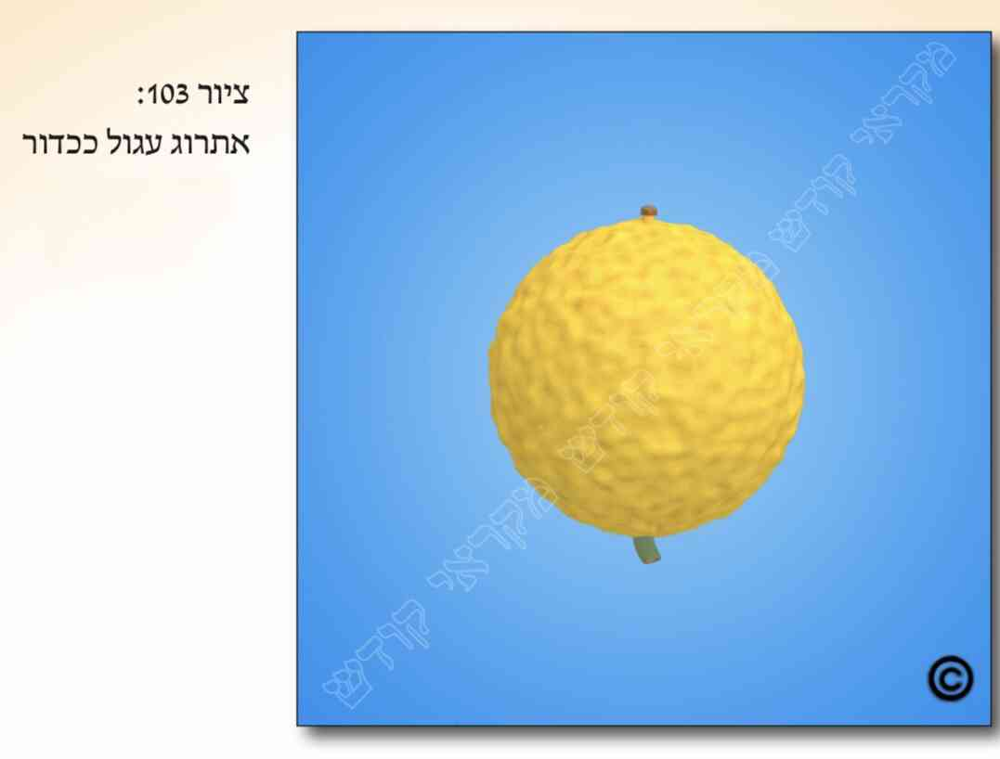

א. כתוב בתורה: "ולקחתם לכם ביום הראשון פרי עץ הדר... ושמחתם לפני ה' אלקיכם שבעת ימים". וקיבלו רבותינו זכרונם לברכה במסורת מהדורות שלפניהם, דור אחר דור, שפירוש "פרי עץ הדר" הכוונה לאתרוג.
ב. רבים הם דיני כשרות האתרוג. והם מתחלקים לארבעה נושאים ראשיים, ומהם לנושאים מישניים. הנושאים הראשיים של פסול האתרוג הינם: 1) פסול מחמת מהותו של האתרוג, וכגון שאין זה המין המוזכר בתורה (שהרי ברור שצריך ליטול אתרוג, ולא לימון, או אתרוג מורכב עם לימון). 2) פסול משום שאינו הדר. 3) פסול משום שאין מתקיימת בנטילתו "לקיחה תמה". 4) פסול בשל גודלו הקטן. ובס"ד יבוארו הדברים בהמשך פרקנו.
ג. כפי שאמרנו, רבים הם דיני כשרות האתרוג (אף יותר משאר שלושת המינים האחרים). ואנו נתרכז בעיקר בפסולים השכיחים בדורנו כאן בישראל. לגבי כשרות האתרוג מבחינת מהותו נדון בענין האיסור שיהא מורכב, ושצריך הוא להיות ראוי לאכילה (ללא חשש טבל, ערלה וכדומה). לגבי הצורך שיהא הדר , נדון בפסולי שינויי מראה באתרוג (כגון נקודות שחורות שעל האתרוג), שינויי צורה בו, ופסול יבש. ומצד הצורך "בלקיחה תמה" נדון בפסולי חסר (כגון שנפל עוקצו או ניטלה פיטמתו) וניקב האתרוג. וכן נדון מהו גודלו ההכרחי. וה' יהיה בעזרנו.
ד. כדי לדעת את הלכות האתרוג צריך להכיר את חלקיו. והדבר מתחלק לשני מישורים: הכרתו מבחינה חיצונית (בהסתכלות מלמטה למעלה), והכרתו מבחינה פנימית (כפי הנראה כשחוצים אותו לרוחבו). ראה בציורים ( ).
ה. כשמסתכלים על האתרוג כשהוא עומד, הרי שחלקיו מלמטה למעלה הינם כך: 1) העוקץ: זהו חלק הענף המחבר את האתרוג לעץ [ראה בציורים ( )] . 2) שקע העוקץ: זוהי גומה בגוף האתרוג שבה שקוע העוקץ הנ"ל. 3) גוף האתרוג: מלא בליטות. 4) החוטם: המקום בגוף האתרוג שממנו הוא מתחיל לשפע ולהתקצר לכיוון ראשו, ועד ראשו [ראה בציורים ( )] . 5) הפיטמה: מין בליטה קטנה מהאתרוג בראש החוטם הבולטת כמין דד קטן. 6) השושנתא: כעין שושנה מעל הפיטמה. ישנם אתרוגים שאין להם שושנתא, וישנם כאלה שאין להם אפילו פיטם. כמבואר כל זה בציורים ( ).
ו. נוסף לכך ישנה גם חלוקה פנימית לאתרוג, כפי שנראה כשחוצים אותו לרוחבו. 1)
ז. עוד נוסיף, שצבעים שונים יש לאתרוגים. חלק מהצבעים אינם פוסלים את האתרוג, וחלקם פוסלים אותו לנטילה, וכאשר בס"ד יבוארו הדברים בהמשך פרקנו.
ח. כדי שיהא האתרוג כשר לנטילה מבחינת מהותו, צריך הוא להיות כשר משתי בחינות: 1) שיהא זה אתרוג לא מורכב (כדלקמן בסעיפים ט' וי'). 2) צריך שיהא האתרוג ראוי לכל סוגי ההנאה, כולל היתר אכילתו (כדלקמן בסעיפים י"א וי"ב). ובשל שתי סיבות אלה יש לקנות את האתרוג מאדם ירא שמים ונאמן.
ט. בשל חולשתו של עץ האתרוג ורגישותו למחלות, החלו לפני כמה מאות שנים להרכיב ענפי אתרוג על עצי לימון או חושחש, שהינם חזקים יותר. ונחלקו הפוסקים האם אתרוג מורכב כשר לקיים מצוות נטילת ארבעת המינים. ואכן לדעת רוב רובם של הפוסקים אתרוג מורכב פסול לנטילה, מכמה וכמה טעמים. וכן נפסק להלכה, כך שבשום פנים ואופן אין לברך על אתרוג כזה, אלא יש לברך רק על אתרוג שיש לו הכשר שאינו מורכב.
י. אתרוג מורכב פסול לנטילה כל ימי החג. ועוד מדיני אתרוג מורכב, כגון הניתן לסמוך על סימנים באתרוג שאכן אינו מורכב, דין אתרוג שהינו ספק מורכב, וכדומה, ראה כאן במקורות וכן בציורים ( , ).
יא. כפי שכתבנו לעיל (בסעיף ח'), צריך שיהא האתרוג ראוי לכל סוגי ההנאה, כולל היתר אכילתו. ולכן אין ליטול אתרוג שיש בו איסור ערלה, טבל, שביעית וכדומה.
יב. הצורך שיהא האתרוג ראוי לאכילה אמור לגבי כל ימי החג.
יג. עד עתה עסקנו בפסולים מחמת מהותו של האתרוג (מורכב ושאסור באכילה). עתה בס"ד נחל לעסוק בפסול אתרוג מחמת שאין מתקיים בו דין "הדר" האמור בפסוק (כנ"ל בסעיף ב'). ונפתח בבירור זמן האיסור, ולאחר מכן בדיני שינוי מראה.
יד. כתוב בתורה (ויקרא פרק כ"ג פס' מ'): "ולקחתם לכם ביום הראשון פרי עץ הדר" וגו'. ומפסוק זה למדו חכמינו זכרונם לברכה, שצריך האתרוג להיות "הדר", ואם אינו הדר בתוארו ובגידולו הריהו פסול.
טו. נחלקו הפוסקים אם אתרוג שאינו "הדר" (כגון שנפסל מחמת "שינוי מראה"), האם הינו פסול רק ביום טוב הראשון או בכל ימות החג. ולמעשה, למנהג הספרדים אתרוג כזה פסול רק ביום טוב הראשון, ולמנהג האשכנזים האתרוג פסול בכל שבעת ימי החג. וראה עוד בסעיף הבא.
טז. במקרה הנ"ל (שהאתרוג נפסל משום שאינו "הדר"), אזי גם למנהג האשכנזים, אם זו שעת הדחק, ניתן להקל בכך בימי חול המועד [וכן במקרים שיש ספק אם האתרוג נפסל בגלל שאינו "הדר" או בגלל "חיסרון באתרוג", מקילים בכך בימי חול המועד (ולענין אם רשאי לברך על הנטילה במקרה זה, ראה כאן במקורות). וראה מה שנכתב בס"ד עוד לקמן (בפרק ו' סעיף ו')].
יז. לימדונו חכמינו זכרונם לברכה, ששינויי המראה פוסלים את האתרוג אם מתקיימים בהם ארבעה תנאים: 1) אם שינוי המראה הינו בצבע מסוים, 2) במספר מסוים של שינויי מראה, 3) בגודל מסוים, 4) ובמיקום מסוים. וזאת משום שאתרוג כזה אינו "הדר".
יח. אחד משינויי המראה הינה ה"חזזית". חזזית הינה כמו אבעבועות, היא בולטת מגובה האתרוג וניכרת במישוש. למרות שפסול זה אינו מצוי כל כך בדורות אלה, בכל אופן מהלכותיו לומדים לשאר סוגי שינויי המראה, וכדלקמן בס"ד בפרקנו.
יט. אחד הצבעים הפוסלים את האתרוג בשל שינוי מראה הינו הצבע השחור. לעיתים קרובות מצויות באתרוגים נקודות שחורות קטנות, והן נחשבות כשינוי מראה [ראה בציורים (
 )].. ומכל מקום פעמים רבות ניתן להסיר נקודות אלה מהאתרוג מבלי לפצוע אותו ולעשותו "חסר", אך צריך לעשות זאת במומחיות רבה, כמבואר במקורות.
)].. ומכל מקום פעמים רבות ניתן להסיר נקודות אלה מהאתרוג מבלי לפצוע אותו ולעשותו "חסר", אך צריך לעשות זאת במומחיות רבה, כמבואר במקורות.
כ. גם מראה בצבע לבן פוסל את האתרוג. וכן כתם בצבע ירוק כהה מאוד (כשאינו חוזר לצבע אתרוג רגיל) נחשב כשינוי מראה ופוסלו.
כא. ישנם צבעים שאינם נחשבים כשינוי מראה לפסול את האתרוג, ואלו הם: צבע חום (שאינו קרוב לצבע שחור. כבציורים
 ), צבע בֶּז' [ראה בציורים (
), צבע בֶּז' [ראה בציורים (
 )] , כתם צהוב [ראה בציורים (
)] , כנימה חומה [ראה בציורים (
)] , כתם חום שנעשה מחמת מכה שהאתרוג קיבל [ראה בציורים (
)] , כתם צהוב [ראה בציורים (
)] , כנימה חומה [ראה בציורים (
)] , כתם חום שנעשה מחמת מכה שהאתרוג קיבל [ראה בציורים (
 )] , כתם שנעשה מחמת עלי העץ (בלעטלך) [לפחות כשאינו גבוה, ראה במקורות ובציורים (
)] , כתם שנעשה מחמת עלי העץ (בלעטלך) [לפחות כשאינו גבוה, ראה במקורות ובציורים (
 )] וכן יבלת [ראה בציורים (
)] .
)] וכן יבלת [ראה בציורים (
)] .
כב. וישנם כתמים שהינם נתונים למחלוקת הפוסקים האם הינם פוסלים את האתרוג, ואלו הם: כתם בצבע אדום [ראה כאן במקורות ובציורים (
)] , כתם שנעשה על ידי משמוש ידיים מרובה באתרוג [ראה בציורים (
 )] , וכן אתרוג שישנם בו כתמים מרובים (של צבעים שאינם פוסלים), אך הוא נראה כמנומר [ראה בציורים (
)] . ודין אתרוג שנקלפה קליפתו, ובשל כך השתנה מראהו, או לא השתנה, ראה בס"ד לקמן בפרקנו (בסעיף ל"ט).
)] , וכן אתרוג שישנם בו כתמים מרובים (של צבעים שאינם פוסלים), אך הוא נראה כמנומר [ראה בציורים (
)] . ודין אתרוג שנקלפה קליפתו, ובשל כך השתנה מראהו, או לא השתנה, ראה בס"ד לקמן בפרקנו (בסעיף ל"ט).
כג. כפי שכתבנו לעיל (בסעיף י"ז) האתרוג נפסל בשל שינוי מראה (היינו בצבע הפוסלו, כנ"ל בסעיפים י"ח – כ"א) רק אם יש מספר מסוים של שינויי מראה, והם בגודל מסוים ובמיקום מסוים.
כד. לעיתים האתרוג פסול כשיש בו רק שינוי מראה אחד, בשל מיקומו (כגון שנמצא בחוטם האתרוג), או בשל גודלו (שמכסה את רוב האתרוג). ולעיתים האתרוג פסול רק אם יש בו שלושה שינויי מראה (כשאינם בחוטם וגם אינם מכסים את רוב האתרוג). ולעיתים אף אם יש באתרוג שלושה שינויי מראה, עדיין האתרוג כשר. וכמו שבס"ד נבאר הדברים.
כה. כאשר שינוי המראה הוא ברוב שטחו של האתרוג, אפילו אם יש רק שינוי מראה אחד, הרי שהאתרוג פסול.
כו. כאשר יש שינוי מראה בחוטמו של האתרוג (שאת הגדרתו ראה לעיל בפרקנו בסעיף ה'), אפילו אם הינו בודד ואפילו אם הוא נראה קטן מאוד (בראיה רגילה), הרי האתרוג פסול.
כז. כאשר הכתם (היינו שינוי המראה) אינו בחוטמו של האתרוג אלא בשאר גופו, וגם אינו ברובו של האתרוג, הריהו פוסל את האתרוג רק אם ישנם לפחות שנים או שלושה כתמים (היינו שינויי מראה). ונחלקו הפוסקים מהו המיקום שבו הם פוסלים את האתרוג
ולמעשה, למנהג הספרדים שלושה כתמים כאלה (או יותר משלושה) פוסלים את האתרוג בכל מקום שהוא באתרוג, ואפילו אם הינם קרובים אחד לשני.
ולמנהג האשכנזים שלושה כתמים כאלה פוסלים את האתרוג רק אם הם מתפרסים על רוב האתרוג. ונחלקו הפוסקים האשכנזים בהבנת דבר זה:
יש מהם הסוברים שדי אם הכתמים מקיפים את רוב היקפו של האתרוג, באורכו או ברוחבו, הרי שהאתרוג פסול. ולכן אם הם נמצאים למשל באותו קו רוחב של האתרוג, ונעביר קו דימיוני ביניהם, הוא יקיף את רוב היקף האתרוג, אז האתרוג פסול. או באופן אחר: אם האתרוג סימטרי וניתן לראות את כל הכתמים מצד אחד, ומצידו השני לא נראה אף כתם, הרי שהאתרוג כשר [ראה בציורים (
 )] .
)] .
ויש מהאשכנזים המקילים וסוברים שרק אם החיבור הדימיוני שבין הכתמים מתפרס על פני רוב שטח האתרוג, הרי שהאתרוג פסול [ראה בציורים (
 )]. ורבים מגדולי הפוסקים פסקו כדעה הראשונה.
)]. ורבים מגדולי הפוסקים פסקו כדעה הראשונה.
כח. כאשר ישנם יותר משלושה כתמים (שינויי מראה) באתרוג, ואף אחד מהם אינו בחוטמו, וגם אינם מתפרסים על רובו של האתרוג. למנהג הספרדים הרי שהאתרוג פסול (וזה קל וחומר מהמקרה שבסעיף הקודם). ואילו למנהג האשכנזים טוב לכתחילה להחמיר בדבר. ולמנהג כולם יש להקל בכך בימי חול המועד.
כט. כאשר ישנם כתמים הפוסלים את האתרוג, אך הם צמודים זה לזה, האם הם נחשבים ככתם אחד או כשנים, ראה דינו כאן במקורות.
ל. עוד בענין שיעור הכתמים הפוסלים בשל שינוי מראה, ראה כאן במקורות.
לא. לדעת רוב הפוסקים אין כתם או נקודה של שינוי מראה פוסלים את האתרוג אלא אם כן הם נראים בראיה רגילה, והיינו ללא צורך בשימוש בזכוכית מגדלת וכדומה, וכן מדובר כשמחזיקים את האתרוג במרחק רגיל מעיניו כמו שאוחזו בעת הנטילה למצווה, ללא צורך לקרבם לעיניו ולהסתכל עליהם בדקדוק [ראה בציורים ( )] . ויש מהפוסקים שהיו מחמירים לבדוק את האתרוג בהסתכלות עליו מקרוב.
לב. עוד מדיני פסולי האתרוג מחמת שאינו "הדר", כגון אתרוג יבש, סרוח וכדומה, ראה כאן במקורות.
לג. עד עתה עסקנו בס"ד בפסולים מחמת מהותו של האתרוג או שאין מתקיים בו דין "הדר". עתה נחל בס"ד לעסוק בפסולי אתרוג מחמת שאין מתקיים בו הצורך של "לקיחה תמה".
לד. כתוב בתורה (ויקרא פרק כ"ג פס' מ') "ולקחתם לכם ביום הראשון פרי עץ הדר" וגו'. ודרשו חכמינו זכרונם לברכה מפסוק זה (מהמילה "ולקחתם", "ולקח-תם"), שיש צורך ליטול את ארבעת המינים בלקיחה תמה, והיינו שארבעת המינים, כולל האתרוג, יהיו תמימים ושלמים.
לה. כדי שארבעת המינים יהיו תמימים ושלמים לכן צריך שהאתרוג לא יהיה חסר , או שיש בו נקב (מפולש בכל גופו מקצה לקצה, או מפולש חלקית), או שהוא נימוח, או נסדק, או שנקלפה קליפתו בחלקה או כולה, וכן אם ניטל עוקצו. ויש אומרים שפסול זה כולל אף אם ניטלה פיטמתו, וכפי שבס"ד יבוארו הדברים בהמשך.
לו. אם אין מתקיימים באתרוג דיני לקיחה תמה (כדלקמן בסמוך), הרי שהדבר מעכב ופוסל את האתרוג רק ביום טוב הראשון של החג. אך בשאר ימי החג ניתן ליטול אתרוג כזה ואף לברך עליו.
לז. אתרוג שנחסר מגופו (אך לא בנקב) אפילו שיעור מועט, הריהו פסול. ותלוי הדבר מהו שיעור החיסרון, והיכן הוא חסרון זה, וכדלקמן.
לח. אם החיסרון באתרוג הינו בקליפה החיצונית (הדקה מאוד) משלוש קליפותיו (כמבואר לעיל בפרקנו בסעיף ו', וכב , ) , אפילו אם התקלפה כל הקליפה, עדיין האתרוג כשר (אך במציאות קשה לזהות אם לא נפגמה גם הקליפה השניה, היותר פנימית, ולכן במקרה כזה יש לשאול רב פוסק).
לט. אם נחסר האתרוג גם בקליפתו האמצעית (הצהובה או הירוקה, וכנ"ל בסעיף ו', וכב , , ) , אפילו בשיעור מועט, הריהו פסול. ויש מקילים ופוסלים את האתרוג רק אם יש חיסרון בקליפה היותר פנימית - הלבנה. אך אין להקל כמותם אלא רק לאשכנזים, ובמיקרים מיוחדים.
מ. עוד מדיני מיקום החיסרון באתרוג (כגון אם הינו בפיטם או תחתיו), ראה כאן במקורות.
מא. במקרה של ספק אם יש חיסרון באתרוג, יש מקילים ליטלו בברכה במיקרים מסוימים.
מב. כפי שכתבנו לעיל (בסעיף ל"ו), אין החיסרון באתרוג פוסלו אלא רק ביום טוב הראשון של החג. אך בשאר ימי החג האתרוג כשר אף כשיש בו חיסרון, ובתנאי שישאר בו רובו, ויהיה בו השיעור ההכרחי. ולגבי שעת הדחק ביום טוב הראשון, ולגבי יום טוב שני, ראה לקמן (בפרקנו בסעיף מ"ט ובפרק ו' סעיפים י'-י"א).
מג. נחלקו הפוסקים לגבי ימי חול המועד, אם יש לאדם שני אתרוגים: אחד חסר אך מלבד זאת הינו מהודר, והשני שלם וכשר אך אינו מהודר, על איזה אתרוג יברך. והמנהג במקרה זה הינו לברך על השלם הכשר, אף שאינו מהודר.
מד. כפי שראינו לעיל, אם חסר מגוף האתרוג הריהו פסול. אך דנו הפוסקים גם לגבי מציאות שיש באתרוג נקב ללא שום חיסרון (כגון שנתחב בו דבר חד, כקוץ או מחט, והוציאוה, כך שלא נחסר כלום מגוף האתרוג). ודבר זה תלוי מהו עומק הנקב (אם הוא מפולש באתרוג מצד לצד ,או שהוא מפולש רק עד חדרי הזרע, , או פחות מכך), וכן מהו רוחבו של הנקב (אם הינו ברוחב מטבע הנקרא "איסר", שהוא בערך כ-23 מ"מ, או פחות מכך) ובס"ד נבאר הדברים.
מה. נחלקו הפוסקים מהו עומק הנקב ומהו רוחבו הפוסלים את האתרוג. ולמעשה פסקו שדי אם הנקב מגיע עד חדרי הזרע, אף שכמעט אינו רחב ואין חיסרון בגופו הרי שהאתרוג פסול.
מו. וכן אם הנקב רחב כשיעור "איסר" (כנ"ל), אף שאינו מגיע עד חדרי הזרע וגם אין חיסרון בגופו, הריהו פסול.
מז. אתרוג שבעודו על העץ נעשו בו נקבים על ידי קוצים [ראה בציורים (
 )], ולאחר מכן נקרם עליו עור ובשר האתרוג, הריהו כשר . ואם לא נקרמו עליו עור ובשר, הריהו פסול.
)], ולאחר מכן נקרם עליו עור ובשר האתרוג, הריהו כשר . ואם לא נקרמו עליו עור ובשר, הריהו פסול.
מח. ישנם אתרוגים רבים שאין להם פיטם (ודין פיטם שנפל ראה לקמן בפרקנו בסעיפים נ"ב – ס"ב). ובמקום הפיטם ישנו נקב המגיע עד חדרי הזרע (ניתן לבדוק זאת על ידי הכנסת מחט, קצה עלה לולב וכדומה). ואף על פי שכך היא דרך גידולו של האתרוג, הריהו פסול. אמנם יש המכשירים אתרוג כזה, ובפרט כשיש ספק אם הנקב מגיע עד חדרי הזרע.
מט. ביום טוב הראשון, בשעת הדחק כשלא ניתן להשיג כלל אתרוג אחר, מקילים האשכנזים כשיש נקב או חיסרון באתרוג בכמה מיקרים, ליטלו ולברך עליו, כמבואר כאן במקורות. וכן מקילים הם במיקרים מסוימים גם ביום טוב שני של גלויות. ואילו הספרדים אינם מקילים כלל במיקרים אלה.
נ. עוד מדיני אתרוג שיש בו נקב או חיסרון, ראה כאן במקורות.
נא. דין אתרוג שהתקלפה קליפתו החיצונית, ראה כאן במקורות.
נב. כפי שכתבנו בס"ד לעיל (בפרקנו בסעיף ה'), בראש האתרוג יוצאת בליטה קטנה מהאתרוג כעין דד קטן, והיא הנקראת "פיטם". ובראש הפיטם נמצא מעין כתר הנקרא "שושנתא". וכמובן שהטוב והמהודר ביותר הוא שהפיטם והשושנתא הינם שלימים.
נג. אתרוג שניטלה או נפלה פיטמתו [כבציורים ( )] , פסול. ודנו הפוסקים לגבי ארבעה מיקרים שונים, איזה חלק מהפיטם ניטל, והאם בשל כך נעשתה גומה בגוף האתרוג, וכדומה, וכמבואר בס"ד לקמן.
נד. אם ניטל כל הפיטם, ובשל כך נעשתה גומה בגוף האתרוג [כבציורים (
 )] , הריהו פסול.
)] , הריהו פסול.
נה. אם ניטל הפיטם בחלקו, באופן שאינו בולט עוד מעל האתרוג, אך גם לא נוצרה גומה בגוף האתרוג, למנהג הספרדים האתרוג פסול, ולמנהג האשכנזים שנוי הדבר במחלוקת, ולכתחילה יש להחמיר בכך.
נו. אם נשבר או ניטל רק חלק מהפיטם, באופן שנשאר חלק בולט מעל גובה האתרוג, לדעת רוב הפוסקים האתרוג כשר. וטוב להדר וליטול אתרוג אחר טוב ממנו.
נז. ואם כל הפיטם נשאר שלם, ורק השושנתא (היינו ה"כתר" שמעל הפיטם, שהינו כעין שושנה) נפלה או ניטלה [כבציורים ( )] , האתרוג כשר. ולמנהג האשכנזים טוב להחמיר וליטול אתרוג אחר שיש לו שושנתא. אך גם למנהגם, אם בשל החלפה זו יקח אתרוג אחר פחות טוב או פחות מהודר, לא יחליפנו באחר.
נח. כתבו הפוסקים, שאתרוג שלא היה לו פיטם מעולם, הריהו כשר [ראה בציורים ( )] . וכן הדין אם נפל הפיטם בעוד האתרוג צומח על העץ. ויש מקילים בכך רק אם נפל הפיטם בתחילת גידולו על העץ. וראה כאן במקורות כיצד יש להכיר מתי נפל הפיטם.
נט. ישנם אתרוגים שהפיטם שלהם אינו קשה כעץ אלא הוא ממש המשך החוטם של האתרוג, ונראה ממש כאתרוג, בשרו לבן וקליפתו בצבע צהוב או ירוק [ראה בציורים ( )] . יש מהפוסקים הסוברים שדין פיטם זה כדין חוטם האתרוג, ולכן אפילו אם נפל רק מקצתו, או שיש עליו מראה פסול (כדלעיל בפרקנו), האתרוג פסול.
ס. אם ניטלה פיטמת האתרוג באופן שפוסלו (כגון שבמקומה נעשתה גומה), אזי בשעת הדחק, כשאין בנמצא כלל (בכל האזור) אתרוג אחר שיש לו פיטם, למנהג האשכנזים יטול אתרוג זה ואף רשאי לברך עליו. וגם למנהג הספרדים יטלנו, אך לא יברך עליו בשום פנים.
סא. אתרוג שניטלה פיטמתו, למנהג הספרדים רשאי ליטלו בימי חול המועד ואף לברך עליו. ומנהג האשכנזים שנוי במחלוקת אם לברך עליו. ולמנהגם אם מצטרף עוד צד הלכתי נוסף לברך עליו, רשאים אף לברך עליו.
סב. עוד מדיני אתרוג שניטלה או נפלה פיטמתו או שושנתו ראה כאן במקורות.
סג. כפי שבס"ד כתבנו לעיל בפרקנו (בסעיף ה') בתחתית האתרוג ישנו ענף קטן המחבר את האתרוג לעץ, והוא הנקרא "עוקץ". אם נתלש העוקץ מהאתרוג, ובמקומו נוצרה גומה בגוף האתרוג, האתרוג פסול [ראה בציורים (
 )] .
)] .
סד. אם ניטל העוקץ ונעשתה גומה באתרוג. אם גומה זו עדיין מכוסה בשכבה כל שהיא מהעוקץ באופן שלא נראה כלל בשר האתרוג, דהיינו שאין חסרון בגוף האתרוג, הרי שהאתרוג כשר.
סה. דין ברכה על אתרוג שניטל עוקצו, כדין אתרוג שניטלה פיטמתו (כדלעיל בסעיף ס').
סו. אתרוג שניטל עוקצו, רשאים ליטלו בימי חול המועד ואף לברך עליו.
סז. דין אתרוג ששמו לידו תפוח כדי להצהיבו [כבציורים ( )] , ובשל כך נפל העוקץ, ועוד מדיני אתרוג שניטל עוקצו, ראה כאן במקורות.
סח. אתרוג שנימוח כל בשרו שבפנים, ואילו קליפתו החיצונית וחדרי הזרע קיימים, נחלקו הפוסקים האם הינו כשר. לכן לכתחילה אין ליטלו, ובשעת הדחק, כשאין אתרוג אחר בנמצא בקלות, רשאי ליטלו ואף לברך על נטילתו.
סט. אתרוג שנסדק [כבציורים (
 ,
,
 )] הריהו פסול, ואפילו אם אין בו שום חיסרון.
)] הריהו פסול, ואפילו אם אין בו שום חיסרון.
ע. אין האתרוג נחשב כסדוק אלא רק אם נסדק ברוב עומק קליפתו הפנימית [כבציורים ( )] . לספרדים פסול הוא רק אם נסדק לכל אורכו, מראשו לסופו, ולאשכנזים אף אם נסדק ברוב אורכו הריהו פסול. ולמנהג כולם נפסל האתרוג אף אם הסדק הינו רק מצד אחד של האתרוג, ולאו דווקא משני עבריו.
עא. שיעורו הקטן ביותר של האתרוג הינו כנפח ביצה בת זמננו, ואם הינו קטן מכך, הריהו פסול [ראה בציורים ( )] . ולמעשה שיעור זה הינו כחמישים ושמונה סמ"ק (ויש מהאשכנזים הסוברים שהוא כמאה סמ"ק). וניתן למדוד זאת על ידי הכנסת האתרוג לכלי שמלא בחלקו מים, ושיעורו הוא כפי שעלה גובה המים.
עב. יש מגדולי הפוסקים שכתבו, שאף אותם אשכנזים שבדרך כלל מחמירים להכפיל את השיעורים (למשל שכביצה הינה כמאה סמ"ק, וכנ"ל בסעיף הקודם), מכל מקום לענין שיעור האתרוג אין צריך להחמיר בכך. ויש מהאשכנזים הסוברים שנכון שבעל נפש יחמיר בכך גם לגבי שיעור האתרוג.
עג. אין קיצבה לשיעורו הגדול של האתרוג, ואפילו אם יהיה גדול מאוד, הריהו כשר [ראה בציורים ( )] .
עד. שיעורים אלה אמורים הן לגבי היום הראשון של החג והן לשאר הימים. ולכן אם אין לו אתרוג אחר, יטלנו בלי ברכה.
עה. אתרוג שהצטמק במשך ימי החג, ושיעורו התקטן משיעור ביצה, נפסל הוא בשל כך. וראה לקמן (בפרק י' בסעיפים נ"ו-ס"ד) עד כמה יש להוסיף על מחיר האתרוג, כדי לקנות אתרוג ללא חשש זה.
עו. עוד מדיני שיעור האתרוג ראה כאן במקורות.
עז. דין אתרוג שהוקצה למצוותו, ראה לקמן (בפרק י"ד). ועוד מדיני האתרוג, ראה כאן במקורות.
&הערות:
[1] א. בענין סדר הפרקים (שאתרוג הינו לאחר ג' המינים האחרים) ראה מה שכתבנו לעיל (בפרק ב' הערהא').
ובאשר ללימוד מהפס' שפרי עץ הדר הכוונה לאתרוג, איתא בגמ' בסוכה (דל"ה, א'): פרי עץ הדר – עץ שטעם עצו ופריו שוה, הוי אומר זה אתרוג. רבי אומר: אל תיקרי "הדר" אלא "הדיר", מה דיר זה יש בו גדולים וקטנים, תמימים ובעלי מומים, הכי נמי... עד שבאים קטנים עדיין גדולים קיימים. ר' אבהו אומר: אל תיקרי "הדר", אלא ה"דר", דבר שדר באילנו משנה לשנה. בן עזאי אומר: אל תקרי "הדר" אלא "הדור", שכן בלשון יווני קורים למים "הדור". ואיזהו שגדל על כל מים, הוי אומר זה אתרוג.
וכתב רבנו הרמב"ם (בפירוש המשניות, הקדמה לסדר זרעים): אלו הראיות לא הביאו מפני שנשתבש עליהם הענין עד שנודע להם מהראיות האלה, אבל ראינו בלא ספק מיהושע ועד עתה, שהאתרוג היו לוקחים עם הלולב בכל שנה ואין בו מחלוקת, אבל חקרו על הרמז הנמצא בכתוב לזה הפירוש המקובל, וכו'. עכ"ל. וכ"כ כעין זאת בקצרה ביד החזקה (בפ"ז מלולב סוף ה"ד).
גם רבנו הרמב"ן בפירושו לתורה (ויקרא פרק כ"ג פס' מ') כתב וז"ל: האילן הנקרא בלשון ארמית "אתרוג", נקרא שמו בלשון הקודש "הדר", כי פירוש אתרוג: "חמדה" כדמתרגמינן: נחמד למראה – "דמרגג למיחזי", "לא תחמוד" – "לא תרוג" וכו' ונקרא העץ והפרי בשם אחד, כי כן המנהג ברוב הפירות: תאנה, אגוז, רמון, זית, וזולתם. וכן זה, שם העץ והפרי שניהם בארמית: "אתרוג", ובלשון הקודש: "הדר".
וכ"כ בספר המכתם (סוכה דל"ה, א') שבודאי קבלה שלימה היא ביד כל ישראל מזמן משה רבינו ועד עכשיו דור אחר דור, שפרי עץ הדר הוא האתרוג, ולא היה שום פקפוק בזה, אלא שהיו חכמים מחזרים אחר סמך משמעות הכתוב. ע"כ. וכן כתב בשבולי הלקט (סי' שנט): שקבלה היתה בידיהם הלכה למשה מסיני שפרי עץ הדר הוא האתרוג אלא שכל אחד ואחד מן החכמים היה מפרש משמעותא דקרא וסימן ומסורת למה שקיבל מרבותיו ואבותיו. ע"כ. וכ"כ בחי' הריטב"א (סוכה דלה", א'. בד"ה "ת"ר") וז"ל: והא ודאי דקים לן דפרי עץ הדר הוא אתרוג ולא היה שום ספק בדבר, שכן עשו בכל הדורות מימות משה רבינו ועד עתה, אבל הביאו סימן והוכחה לזה מן המקרא וכו'. ואתרוג הוא לשון חמדה וריגוג [ונחמד העץ תרגם אונקלוס ומרגג אילנא]. עכת"ד. וע' בדברי הגרש"א אלפנדארי בשו"ת מהרש"א (חאו"ח סי' י"ג דף נ"א ע"ג וע"ד). ודו"ק. וע"ע בספר בית מאיר (או"ח דף ק"ה ע"ב), ובשו"ת זכר יהוסף (סי' רל"ד ורל"ה), ובספר בכורי יעקב (בתוספת בכורים, ס"ס תרמ"ח). ובשו"ת בכורי שלמה (חאו"ח סי' כ"ה אות י'). הב"ד בחזו"ע (ריש הל' ארבעת המינים, הערה א').
[2] ב. כמו שנכתוב בס"ד לקמן (בסעיפים ח', ט') והדבר כולל את פסול אתרוג מורכב, ואת פסול אתרוג שאינו ראוי לאכילה.
לאור זאת יש מי שכתב, שישנם ב' סוגי הכשרים לאתרוגים: סוג א' הוא הכשרו מהבחינה שאינו מורכב ושאין בו איסור אכילה, וסוג הכשר שני הוא שאר דיני האתרוג, וכגון שאין בו שינוי מראה, אינו חסר וכדו' [ס' פרי הדר (מרגולין. ריש הל' אתרוג)]. אמנם לענ"ד בס"ד נראה שבעצם כולם הינם שייכים לדיני האתרוג, אלא שיש שהם דיני האתרוג במהותו שקשה לזהותם אלא הכשרם בא מתוך ידיעה מוקדמת [כגון שאין זה אתרוג ערלה, או שאין בו איסורי שביעית. ולגבי אתרוג שאינו מורכב צ"ע אי ג"כ חשיב בכלל כלל זה, דהא י"א שע"י בדיקת סימניו ניתן לראות שאינו מורכב], ויש מהם שהם הלכות שניתן לבודקן, וכגון הל' שינוי מראה.
[3] ג. עפ"י הגמ' בסוכה (דל"א, א'). ועיי"ש בגמ' סוכה ברש"י ובתוס' (דכ"ט, ב'), ובמ"ב (רס"י תרמ"ה). וכדלקמן בס"ד בפרקנו.
[4] ד. דרשו חכמינו ז"ל (בסוכה דל"ד, ב') על הפס': "ולקחתם לכם", שתהא לקיחה תמה (לענין דמ"י המעכבין זה את זה). וכן ישנם כמה פסולים באתרוג משום שאין האתרוג תם ושלם, וכגון אתרוג חסר (משנה בסוכה דל"ד, ב'). וכמפורט בס"ד לקמן בפרקנו. אמנם דין לקיחה תמה בעינין שהדמ"י מעכבים זה את זה שונה מדין לקיחה תמה שיהא האתרוג תם. דדין מכבין זא"ז שייך בכל ז' ימי החג, משא"כ דין חסר שייך רק ביו"ט הא'. ור' תוס' סוכה (דכ"ט, ב' ד"ה "בעינן הדר").
[5] ה. עפ"י המשנה בסוכה (דל"ד, ב') וכרבי יהודה. וכ"פ מרן (בסי' תרמ"ח סכ"ב). וכדלקמן בס"ד בפרקנו.
[6] ו. שכן הלכותיו הן מרובות ביותר ברמב"ם, בטור ובשו"ע, יותר משאר ג' מינים האחרים.
[7] ז. הדיון גבי אתרוג מורכב לא נזכר בש"ס ירו' ולא בבבלי, ולא בראשו', בטור ובשו"ע. אלא הוא נזכר לראשונה בשו"ת הרמ"א (סי' קי"ז), בשו"ת מהר"ם אלשיך (סי' ק"י), בלבוש (או"ח סי' תרמ"ט ס"ד), בשו"ת הב"ח (סי' קל"ה וקל"ו), הט"ז (סי' תרמ"ט סק"ג), המ"א (סי' תרמ"ח סקכ"ג) ועוד הרבה מאוד אחרו', וכדלקמן בסמוך (בהערה כ"ו).
והא דאתרוג האסור באכילה פסול הוא לנטילה, הוא עפ"י הגמ' בסוכה (דל"ה, א'), הרמב"ם (פ"ח מלולב ה"ב) וש"פ. ומ"מ בשו"ע לא נזכר ד"ז [ר' באר הגולה (סי' תרמ"ט ס"ג) שהעיר ע"כ].
[8] ח. דין שינוי מראה הזכירו מרן (בסי' תרמ"ח למשל בסעי' י"ב וט"ז). ודיני שינוי מראה כוללים דין חזזית, מראה שחור, מראה לבן, חום בהיר וחום כהה, מראה ירוק כעשבי השדה, שינוי מראה בצבעים כשרים (והיינו אתרוג מנומר), אתרוג ירוק וכתום צהוב, כנימה חומה, שינוי מראה מחמת מכה, בלעטלאך (כתם לבן שנוצר בעץ מחמת נגיעת העלים או הענפים באתרוג). וכשרות האתרוג תלויה גם בשאלה כמה כתמים של שינוי מראה יש באתרוג, גודלם ומיקומם.
ודין שינוי צורה כולל אתרוג תיום (לדעה אחת הוי משום הדר), אתרוג עגול ככדור [כבציורים (  )], ואתרוג שגדל בדפוס (היינו בתוך כלי הגורם לו לגדול בצורה מיוחדת ולא כטבעו).
ודין אתרוג יבש הוא כפשוטו.
ובס"ד יבוארו הדברים בפרקנו.
[9] ט. דין הצורך בלקיחה תמה כולל פסול אתרוג שהינו חסר בחלקו. ותלוי הדבר היכן הוא החסרון (האם בקליפה החיצונית, האמצעית או הפנימית). וכן כולל דין זה גם דיני נקבים (מפולש ושאינו מפולש), חריצים (כגון שנעשו ע"י קוצים), דין נקב שהתכסה, ניטל הפיטם (כולו או חלקו), ניטלה השושנתא, עוקץ שנפל וכדו'.
דין לקיחה תמה כולל גם דין אתרוג שנימוח ונקלף. ובס"ד יבוארו הדברים לקמן עפי"ד הגמ' והפוס'.
[10] י. באשר לשיעור האתרוג, יש לדון גבי מהו שיעורו הקטן ביותר ומהו שיעורו הגדול ביותר. דין הצטמק האתרוג לשיעור קטן משיעורו ההכרחי. האם חובה לקחת אתרוג גדול מהשיעור ההכרחי, שמא יצטמק במשך החג, ובפרט שמא יצטמק ולאו אדעתיה. האם שיעורו הינו מדאו'. הניתן להקל בכך בחוה"מ. דין אתרוג האסור בהנאה (כיתותי מיכתת שיעורי, שנחשב שאין לו שיעור כלל), וכו'.
[11] יא. את צורתו החיצונית של האתרוג צריך להכיר כדי לדעת כיצד להתייחס לפסולים מסוימים, וכגון שיש שינוי מראה אחד אך בחוטמו של האתרוג. לשם כך צריך לדעת מהו גבול חוטמו של האתרוג, כי רק בחוטם שינוי מראה א' פוסל את האתרוג. אך אם שינוי מראה בודד זה הינו מתחת לחוטם, אין האתרוג פסול. וכן צריך לדעת מהי הפיטמה ומהו העוקץ, כדי לדעת הדין אם ניטל א' מהם.
וכן צריך לדעת את מבנהו הפנימי של האתרוג, כדי לדעת מה הדין אם יש נקב רק בקליפה החיצונית או האמצעית וכדו'. ומה הדין אם יש נקב מפולש עד חדרי הזרע או פחות מהם.
[12] יב. רמב"ם (פ"ח מלולב ה"ז). שו"ע (סי' תרמ"ח ס"ח).
[13] יג. ענין גומא זו כתבה מרן (שם). ועיי"ש ברמ"א דתליא אם ניטל כל העוקץ או שחלק מהגומא עדיין מכוסה בעוקץ זה, ומ"מ זה אחד הסימנים להבדיל בין אתרוג כשר לאתרוג מורכב או לימון. שבהללו העוקץ שלהם בולט לחוץ, משא"כ באתרוג כשר העוקץ שלו שוקע.
[14] יד. ובאשר לגודל הבליטות. בשו"ת נפש חיה (או"ח סי' ב') כתב לדון שצריכות להיות לאתרוג בליטות גדולות, כי כן היו באתרוגי יעניווא וארץ ישראל המוחזקים במסורת מדור לדור. אמנם הביא מתשו' מהר"י פאדווא (הוא הג"ר שמואל יהודה קצינלבויגן זצ"ל) שכ' סימן לאתרוגים, והוא שיש להם בליטות קטנות בכל גופם. וכ"כ המ"א (סי' תרמ"ח סקכ"ג).
[15] טו. ישנן לפחות שלוש שיטות בראשו' מהי הגדרת חוטמו של אתרוג.
1) ד' רש"י בסוכה (דל"ה, ב' ד"ה "ובחוטמו"), שכתב: בעובי גובהו, שמשפע משם ויורד לצד ראשו, אפילו כל שהוא פסול, שנראה שם לעיניים יותר משאר מקומות שבו, שבאותו עובי אדם נותן עיניו. עכ"ד. ומדבריו נראה שהחוטם הוא המקום הרחב ביותר באתרוג, שממנו והלאה מתחיל השיפוע לכיוון ראש האתרוג, אך אינו כולל את כל השיפוע אלא רק את המקום הרחב שבגוף האתרוג [וכן הבין הרא"ש (פ"ג סי' כ') מדברי רש"י].
2) הרא"ש (שם) כתב שמדברי הרי"ף ורבנו חננאל עולה שהחוטם הוא מקום כל השיפוע של האתרוג. (ויתכן שלדעתו החוטם מגיע עד השושנתא והינו כולל גם את הפיטם). והוסיף הרא"ש שכך הוא המנהג, שחזזית פוסלת בכלשהו מתחילת השיפוע ועד הפיטם. ע"כ. וכ"כ החת"ס בסוכה (דל"ה, ב') שכן נהגו בעלי הוראה. ע"כ.
3) ד' הרי"ץ גיאת (בהל' לולב, עמ' ק"ה) שהחוטם הוא "חודו וראשו של האתרוג", ומשמע שהכוונה הינה רק לחלק העליון ביותר הסמוך לשושנתא. כעין זאת נראה גם מד' הרמב"ם (פ"ח מלולב ה"ז), שכ' שהחוטם הוא הדד של האתרוג. ע"כ. וכ"כ בכפות תמרים בסוכה (דל"ה, ב'), שהוא בעץ הפיטם שהוא ירוק כגוון האתרוג. וכ"כ בקרית ספר (פ"ח מלולב).
4) שיטה נוספת הינה שיטת הר"ן והריטב"א, שאותו גובה שתחת הנץ העשוי כמין נזר (היינו הפינה העליונה של החוטם לשיטת הרא"ש הנ"ל) הוא החוטם. והחת"ס בסוכה (שם) כתב שהוא סוף (גוף) האתרוג ממש, מקום שמשם יוצא הפיטם, ובשר האתרוג שם נראה כמין נזר. הביאו דברים אלה הרה"ג רי"צ רימון שליט"א בספרו על ד' המינים (דיני אתרוג), והרה"ג יחיאל מיכל שטרן שליט"א בספרו כשרות ארבעת המינים (עמ' ע"ט - הגדרת מקום החוטם באתרוג), ובמ"ב - עוז"ו (סי' תרמ"ח ציון פ') ובציורים שם (ציור ע"ו).
ומרן (בסי' תרמ"ח סעי' ט' וי"ב) פסק כשיטת הרא"ש (השיטה האמצעית), שהחוטם הוא ממקום שמתחיל להתקצר ולהתחדד כלפי ראשו, ועד הפיטמא. ע"כ (ובסעי' י"ב כ' דהיינו ממקום שמתחיל לשפע עד הפיטמא. ע"כ).
יש מהפוס' שכתבו שבכלל החוטם גם הפיטמא [בה"ל (סי' תרמ"ח סי"ב ד"ה "ממקום"), שכ"מ מהר"ח. ושהב"י תפש לחומרא גם את שיטת הרי"ץ גיאת והרמב"ם, הנ"ל. עיי"ש בבה"ל]. וע"ע ברע"ב (בסוכה פ"ג מ"ו) ובתויו"ט שם.
ואכן גבי אי יש חזזית או נקודות שחורות וכדו' על עץ הפיטמה, ר' בסא"ה (בח"א במיל', בדיני אתרוג, ס"ק ע"ג).
וע"ע בתפא"י (בסוכה פ"ג סקל"ז), ובס' חיים וברכה (סי' ס"ה).
אגב דין החוטם, נזכיר פה (בלי קשר ישיר לני"ד) את דברי הגמ' בתענית (דכ"ט, א') מה שרצו לרמוז לרבן גמליאל שיברח מביהמ"ד כיוון שהרומאים חיפשוהו, וכבר התקרבו לביהמ"ד. דלכאו' מדוע אותו אדון (רומאי) המזרז את ר"ג לברוח, לא נקב בשמו של ר"ג, אלא קרא: "בעל החוטם מתבקש" ותו לא. ובס"ד נלע"ד שיש ב' סיבות לכך: סיבה ראשונה הינה משום שחשש שיוודע הדבר מפה לאוזן שהוא גילה זאת לר"ג, וכמו שקרה לרשב"י בשל דברי יהודה בן גרים (ר' שבת דל"ג, א'). וסיבה שניה משום שכיוון שכבר אז היו שבכניקי"ם ושטינקרים (מלשינים יהודים רשעים לטובת האויב), והם שהו בביהמ"ד והתחפשו לתלמידים מן המנין, לכן נזהר אותו רומאי שלא להבריח את ר"ג בקול רם. והרי כבר שמואל הקטן תיקן את ברכת המינים. אלא שיתכן שבזמן שמואל הקטן היה נוסח ברכה זו שונה ללא תיבת "למלשינים" [כמו שמצוי אצלי נוסח ברכה זו כפי שנמצא בגניזה בקהיר, ששם לא היתה תיבת "למלשינים". ובאשר לדעתו של הג"ר אשר זעליג וייס שליט"א. ת"ח אחד שאל את הגרא"ז וייס שליט"א (ואני נכחתי שם), לגבי ברכת "למינים ולמלשינים", או מקומות נוספים בתפילה, שאנו יודעים שהנוסח הנפוץ הוא לפי הנוסח ששובש ע"י הצנזורה של הגויים במאות השנים האחרונות, ויש נוסחאות אחרות בסידורים עתיקים. האם יש ענין או מקום לחזור לנוסח שלפני תיקוני הצנזורה. וענה הגראז"ו שהוא חושב שכן, אך השאלה הינה מה היה הנוסח הקדום. והערתי שיש בידי נוסח ברכת "למינים ולמלשינים אל תהי תקווה" כפי שמצאו בגניזה בקהיר. ושם במפורש כתובה המילה "נוצרים". וזה הרי הנוסח שהיה לפני כאלף שנה. האם יש טעם או צורך לחזור ולהתפלל בנוסח זה כפי שהיה לפני כאלף שנה. וענה הגראז"ו שגם ב"עלינו לשבח" יש משפט שהוסיפו בעשרות השנים האחרונות. אך הוסיף שבאמת אין אנו יכולים לדעת מה היה הנוסח המקורי [ואמר הגראז"ו שהוא לא היה רוצה שכל בית ישראל יזכירו את הנוצרים בתפילת "למינים ולמלשינים", ואין זה ראוי, כיוון שכיום אין סודות, וכל דבר נודע מקצה העולם ועד קצהו, כעוף השמים המוליך את הקול]. וגם לא ברור שבנוסח המקורי היה כתוב "נוצרים". ובכלל לא בטוח שמה שמצאו בגניזה הקהירית הינו הנוסח האמיתי. ולכן כאשר נוסח עלול לגרום לבעיות, שנאה ואיבה, ודאי שלא ראוי להכניסו לתפילה. אך ככלל ודאי שככל שאפשר להתקרב לנוסחים המקוריים, ודאי שראוי לעשות כן.
ושאלתי, א"כ כיצד אפשר לדעת מהו הנוסח המקורי. וענה הגראז"ו שאי אפשר לדעת בבטחון מהו הנוסח המקורי. אך כיוון שחז"ל קראו לברכה זו "ברכת המינים" הרי שברור שיש להזכיר בה את המינים. אך מעבר לכך אי אפשר לדעת מהו הנוסח המקורי. ולכן כשאין בטחון מוחלט באמיתות השינוי, לא ראוי לשנות את הנוסח הקיים אצלנו.
והוסיף השואל, שעד לפני כמה מאות שנים בברכת ההפטרה היה כתוב: "ולעלובת נפש תנקום נקם". ואח"כ שינו זאת למילים "ולעלובת נפש תושיע". מעט מאוד בתי כנסת נוהגים כיום לומר "ולעלובת נפש תנקום נקם", ויש בית כנסת אחד שאומרים "ולעלובת נפש תושיע ותנקום נקם". כיצד ראוי לנהוג בדבר זה, אם אין זה גורם למחלוקת בין המתפללים. ושאל הגראז"ו, מהו המקור לנוסח "ותנקום נקם". והוסיף, שעצם הדבר שזה כתוב בסידור מלפני אלף שנה, אין לכך משמעות רבה. צריך לראות מה כתוב במחזור ויטרי או ברמב"ם. ושאל השואל, שידוע לו על ביכ"נ אחד של יוצאי אשכנז – גרמניה, ושם הם אומרים נוסח "ותנקום נקם", והם אומרים שמעולם לא שינו את הנוסח בעקבות הצנזור. ושכך היה כתוב בסידורי רדלהיים עוד לפני השינויים של סטאנוב ואחרים שצינזרו את הסידורים.
ואמר הגראז"ו שלדעתו הנוסח צריך להקבע עפ"י המקורות המקובלים של סידורי התפילה. והסידורים החשובים הם מחזור ויטרי, סדר התפילה של הרמב"ם והאבודרהם.
ושאלנו, שיש מרבני דורנו, ביניהם הגר"א נבנצל שליט"א, הסוברים שנוסח סדר התפילה כפי שכתוב ברמב"ם אינו מהרמב"ם עצמו. והטעם, משום שהרמב"ם חתם את חתימתו לאחר גמר ספר אהבה ולפני נוסח סדר התפילה. וא"כ סדר התפילה לא כלול בהסכמת הרמב"ם לכתוב ביד החזקה. ועוד אומר הגר"א נבנצל שליט"א, שישנן סתירות בין הנוסח בסדר התפילה לבין דברים הכתובים ביד החזקה. ושאלנו את הגראז"ו מהי דעתו בנידון זה. האם הוא סומך על הכתוב בסדר התפילה של הרמב"ם. וענה הגראז"ו והעיד על עצמו שבאופן כללי הינו שמרן גדול בהלכה. אך יש לזכור את עצם העובדה שמאות שנים כתוב נוסח סדר התפילה הזה. אמנם אמר שאינו חוקר, והוא לא חקר אם כבר בהוצאה הראשונה של היד החזקה היה כתוב נוסח סדר התפילה. אך כבר מההוצאות הראשונות של היד החזקה סדר התפילה כלול ביד החזקה. ואנו לא יודעים מדוע הרמב"ם חתם את חתימתו לפני סדר התפילה. ושמא הרמב"ם חתם את חתימתו לפני סדר התפילה משום שהוא חשב שסדר התפילה היה בעיניו כעין "נספח", כמו שכיום בחוזים יש נספחים. והרי התפילה אינו הלכות, ולכן הוא חתם שמו בגמר ההלכות, לפני הנספח. ובכל זאת זהו סדר התפילה שאנו מוצאים ברמב"ם. ואכן צריך ללבן הענין אם מוצאים סתירה. מן הסתם ספר המשנה תורה הוא המכריע אם ישנן סתירות. אינני יודע אם אכן כך. ומכל מקום בכל זאת סדר התפילה של הרמב"ם הינו מקור קדום, ומקור חשוב, שבאיזושהי דרך גושפנקא דהרמב"ם חתימא עליה.
ומ"מ, הוסיף הגראז"ו, אף אם מוצאים סידור מלפני שבע מאות שנה, גם אז היו דברים משובשים. גם אז היו דעות שונות. עצם העובדה שדבר הינו ישן, אין זה אומר שהינו נכון ומדויק. אינני יודע מה כתוב במקורות הראשונים של נוסח הקדיש, אך נוסח הקדיש הכתוב ברמב"ם הינו הנוסח הארוך של הקדיש שאנו אומרים כיום בסיום מסכת (אגב יוצאי תימן אומרים הקדיש בנוסח זה במקום כל קדיש דרבנן – מ.ה.). זה אומר שהמסורת הינה חזקה. ומ"מ אנו לא אומרים את הקדיש בנוסח הכתוב ברמב"ם, ואינני יודע מדוע. לא חקרתי זאת. אך כשאין הסבר מניח את הדעת לשנות את הנוסח, אין לשנות את הנוסח הנפוץ. עכת"ד הגרא"ז וייס שליט"א.
וראה מה שכתבנו בס"ד במקראי קודש הל' רה"ש (בנספח ח' ענף 9) בשם א' מגדולי הדור שליט"א, שדווקא נוסח ברכת המינים השתנה הרבה מאוד פעמים מחמת אימת הצנזורה הנוצרית ימח שמה. ואכמ"ל. ומ"מ לדעת הגר"א נבנצל שליט"א ניתן לסמוך על הנוסח הכתוב בסידורים ומחזורים עתיקים מלפני מאות שנים. והדגיש שבפרט ניתן לסמוך על מחזורי רדלהיים. עכת"ד (כמובא משכתוב דבריו בכמה מספרי מקראי קודש)].
ומ"מ עיי"ש ברש"י בתענית (דכ"ט, א' בד"ה "בעל החוטם") שכתב שפירוש "בעל החוטם" הוא בעל קומה וצורה. ודמי דבר זה לחוטמו של האתרוג שהוא בקומתו של האתרוג. וגם בפירוש השני של רש"י שם שהכוונה לגדול הדור, נראה שחוטם מרמז לגובהו של האתרוג, והחלק החשוב שבו והנראה לעין, ולכן מקפידים בו יותר לגבי שינוי מראה. כך בס"ד נלע"ד. ואכמ"ל.
[16] טז. כן פירשו הרי"ף והרמב"ם (פ"ח מלולב ה"ז), את המשנה (בדל"ד, ב') וכ"כ מרן (סי' תרמ"ח ס"ז). וכ' שהוא הראש הקטן ששושנתו בו (ופסול). ור' לקמן בס"ד בפרקנו שישנן ד' שיטות מהי הגדרת ניטל הפיטם בכדי שיהא חשוב כפסול.
ומ"מ לעצם הגדרת הפיטם, מצינו בזה ב' פירושים: י"א שהוא העץ שעל ראש האתרוג, כמו חוד הדד ותחוב בתוכו, והשושנתא עליו [מ"א (סק"ח) הגר"ז (סקי"ז) מ"ב (סקכ"ט) ועוד אחרו'].
אלא שמאידך כ' כה"ח (סקמ"ו) שהפוס' הללו דיברו על האתרוגים שבמקומם. אך פה בארץ הצבי יש בראש האתרוג בולט כמין דד קטן מגוף האתרוג ועליו דבוק כמין פרח שושן יבש וקורין אותו פיטמא. ואפשר שזהו כוונת השו"ע. עכ"ד.
וכתבו הפוס' שאין הפיטמה כוללת לדינא את השושנתא [בה"ל (סעי' י"ב ד"ה "ממקום")].
ולגבי גדרי הפיטמה בימי חוה"מ, ר' בביכור"י (סי' תרמ"ט סק"ל).
[17] יז. רמ"א (סי' תרמ"ח ס"ז).
[18] יח. עפ"י שיטת הר"ן (בדי"ז, א' בדפי הרי"ף בד"ה "מתני' עלתה"). הב"ד הב"י וכ' שכ"ה גם ד' הרמב"ם. וכ"כ הט"ז (סק"ו), המ"ב (סי' תרמ"ח סקכ"ד) ובשעה"צ (סקכ"ז), כה"ח (סקל"ח), ס' פרי הדר (מרגולין. בדיני חסר. עמ' 45) וכן פירשו עוד אחרו'.
[19] יט. הפוס' הנ"ל.
[20] כ. הפוס' הנ"ל.
[21] כא. את מציאות חדרי הזרע הפנימיים הזכירו (גבי אתרוג שיש לו נקב מפולש עד חדרי הזרע) בירו' (פ"ג בסוכה הל' ו'), וכ"כ בשמו הרא"ש (פ"ג מסוכה סי' י"ח), וכ"כ ר"י בתוס' (דל"ו, א' ד"ה "אי") והר"ן (די"ז, א' ברי"ף ד"ה "האי"). וכ"כ מרן (בסי' תרמ"ח ס"ג) והמ"ב (סקי"ד). וע"ע לקמן מה שנכתוב בס"ד בפרקנו גבי סימני אתרוג שאינו מורכב.
יש שכתבו חלוקה אחרת לקליפות: 1) קליפה עליונה חיצונית וירוקה, שהיא דקה (והיא הכוללת את ב' הקליפות החיצוניות לשיטת הר"ן שבהערות הקודמות). 2) קליפה יותר פנימית לבנה הנקראת בשר, והיא לדעתם הקליפה האמצעית. 3) הקליפה הפנימית שהיא בעצם רק בין חדרי הזרע. כך נראה ממש"כ הב"ח (בסי' תרמ"ח סעי' ז') בשם הרא"ש (ובטור הנד"מ, בהוצ' מכון ירושלים כתבו שצ"ל בב"ח בשם תשו' הרשב"א במקום בשם תשו' הרא"ש, וכ"כ בהערות איש מצליח ע"ד שעה"צ הנ"ל). וע"ע ברא"ש (בסוכה פ"ג סי' י"ז). וכ"כ החזו"א (או"ח סי' קמ"ז סק"א ד"ה "ובמ"ב"). וכ"כ הרה"ג ר' אליהו וייספיש שליט"א בסא"ה (בדיני אתרוג. פ"א ס"א) עפי"ד החזו"א. ועיי"ש בחזו"א שכ' ליישב את מחלו' הר"ן והרא"ש כשיטתיה, שב' הקליפות החיצוניות הינן קליפה אחת. ומ"מ המ"ב בשעה"צ הנ"ל וגם במ"ב (סקי"ד) דחה הבנה זו.
ואכן בהלכות הבאנו את שיטת הר"ן, המ"ב וסיעתם, הן משום שעפי"ר אנן אזלינן בתר פסקי המ"ב, והן משום שכיוון שבדאו' עסקינן הרי שיש להחמיר בהא. דהא בני"ד יוצא שהמ"ב מחמיר, שדי שנקלפה הקליפה העליונה הדקה, ה"ז פסול. ואמר לי ת"ח גדול (המשמש כמו"ץ פה בשכונת גבעת שאול בירושת"ו) שאכן המוצי"ם פה נוקטים לחומרא בגלל דהוי דאו', ולכן פסקינן כמ"ב. אך הוסיף שכאשר מצטרף ספק נוסף, וכגון אי בכלל האתרוג חסר, אזי נקטינן כשיטת החזו"א בהא, ולדעתו אז גם מברכין ע"כ. עכת"ד. אמנם אני כשלעצמי לא נראה לי כך. דלפחות לספרדים קיי"ל שאין מברכים בקו"ע בשל ס"ס [ור' חזו"ע (סוכות, הל' אתרוג הערות א' וכ"ג) דאף שהוא ס"ל בעלמא דמברכינן כשיש ס"ס, מ"מ כשכל אחד מהספקות הוא מיעוט נגד הרוב, בזה לא מהני ס"ס (עיי"ש בהל' אתרוג הערה א' דרל"א, א'). ולכאו' בני"ד תלוי הספק בכמה דברים, וכגון שיעור החיסרון, היכן החיסרון ועוד. ובכלל בחוה"מ חיסרון אינו פוסל כלל. וע"ע במ"ב (סי' תרמ"ט סקל"ו) שלא רצה להתיר לברך גבי ספק, אף בימי חוה"מ. וראה עוד ע"כ לקמן (בסעיפים ל"ח ול"ט ובהערות ק"ד-ק"ו), ואכמ"ל.
[22] כב. הצבעים הרגילים של אתרוג הינם: כמראה שעווה [תוס' סוכה (דל"א, ב' ד"ה "הירוק"). וע"ע ש"ך (יו"ד סי' ל"ח סק"ב), בפמ"ג (א"א סס"י תרמ"ח בדיני אתרוג) ובסא"ה (ח"א, דיני אתרוג פ"א ס"א)].
וכן צבע חלמון ביצה הינו כשר באתרוג [תוס' ופמ"ג (שם)]. ואף צבע כרכום [מהרי"ל (דיני לולב) הב"ד המ"א (סי' תרמ"ח סקכ"ג). ור' ביכור"י (שם סק"נ)]. וכן צבע זהב הינו צבע כשר [זוה"ק (פר' "תרומה" עה"פ "אבני שהם". והסבירו שגם פירוש אסתר ירקרוקת היתה היינו שהיה לה גוון של אתרוג בצבע זהב). הב"ד בסא"ה (שם בהערה 13). עיי"ש אריכות דברים בכך].
וגבי צבעים הפוסלים באתרוג, כבר כתבנו בס"ד לעיל בפירקין (בהערה ח'). ונפרט עוד ע"כ בס"ד לקמן (בסעיפים י"ח – כ'). וע"ע לעיל (בפרק א' הערה י"ב).
[23] כג. הא שיש הכרח שהאתרוג לא יהיה מורכב הוא משום שעפי"ד הגמ' בסוכה (דל"ה, א') בעי ליטול דווקא אתרוג, וישנם כמה טעמים דבכה"ג לא חשיב אתרוג (כדלקמן בהערה כ"ו). וכ"פ המ"ב (סי' תרמ"ח סקס"ה).
כיום ישנם בארץ ישראל שבעה זנים שיש הטוענים שאינם מורכבים: 1) תימני. 2) חזון איש (ובזה ישנם שני זנים: חזו"א – הלפרין, וחזו"א – לפקוביץ). 3) שלומאי. 4) קלבריה. 5) אורדנג. 6) ברוורמן – קיבולביץ. 7) מרוקאי [כ"כ הרה"ג יוסף ברינר שליט"א בספרו על הדמ"י]. וע"ע לקמן (בהערה ל"ב).
[24] כד. עפ"י הגמ' בסוכה (דל"ה, א'), רמב"ם (פ"ח מלולב ה"ב) וש"פ. ור' בבאר הגולה (סי' תרמ"ט ס"ג) שכ' שאינו יודע מדוע מרן השמיט דין זה מהשו"ע. ויתר דיני הצורך באפשרות אכילת האתרוג כדי שיהיה ניתן לקיים בו מצוות נטילת הדמ"י ראה לקמן (בהערות ל"ג – ל"ה).
ומה שכתבנו שיש לקנות את הדמ"י מאדם ירא שמים ונאמן, הוא עפי"ד המ"ב (סי' תרמ"ח סוף ס"ק ס"ח), ובמ"ב - דירשו (שם הערה 119).
[25] כה. ר' ע"כ בס' ובחג הסוכות (במאמרו של משה רענן, עמ' 257-306). ובשאר ספרי דורנו.
[26] כו.
ענף 1: תחילת המחלוקת לגבי כשרות האתרוג המורכב.
כפי שכתבנו בס"ד לעיל (בהערה ז') לא הוזכר ענין אתרוג המורכב, לא בש"ס ירו' ובבלי, ולא בראשו', וכן לא בטור ובשו"ע, וזאת משום שאז לא היו מרכיבים אתרוגים. אלא את הרכבות האתרוגים החלו לפני כארבע מאות שנה. ואכן הפוס' הראשונים שדנו בכך היו הרמ"א, המהר"ם אלשיך, הלבוש, הב"ח, הט"ז, המ"א, ושאר ראשוני האחרונים (כנ"ל בהערה ז').
ואמנם מעט מהפוס' כתבו להקל לפחות בשעת הדחק וליטול אתרוג מורכב [כגון בשו"ת הב"ח (סי' קל"ו). שו"ת שבות יעקב בשם הש"ך, שו"ת פנים מאירות ועוד]. ורובם הקלו בזה רק בשעה"ד כשאין אתרוג אחר בעיר [הב"ד בסא"ה (במיל' לאתרוג ס"ק ק"ג). עיי"ש שהביא טעמיהם].
אלא שכמעט כל הפוס' כתבו שלכתחי' אין ליטול אתרוג מורכב למצוות נטילת הדמ"י, ולרובם אף בשעה"ד אין ליטול אתרוג כזה. שכ"כ להחמיר הלכה למעשה בשו"ע הגר"ז (סי' תרמ"ח סל"א ובסי' תרמ"ט סכ"ג), הביכור"י (סי' תרמ"ח סקנ"ג), המ"ב (סי' תרמ"ח סקס"ה) ועוד אחרו' [הב"ד בסא"ה (שם פ"א הערה 19)].
גם מרן הגראי"ה קוק זצ"ל סבר שאתרוג מורכב פסול למצוות נטי' הדמ"י, בעיקר בשל הטעם שהולכים בתר עיקרו של העץ, כך שאינו נחשב כאתרוג אם הוא מורכב על כנה של לימון וכדו', אף אם הוא נראה כאתרוג. שכ"כ בספרו עץ הדר (ס"ק ג', ו' ועוד). עוד בהיותו בחו"ל ביקש מרן הגראי"ה מחותנו האדר"ת שישלח לו מא"י אתרוג לא מורכב מאתרוגי ארצנו [ר' בס' אדר היקר (עמ' 3)]. גם לאחר שעלה לארץ חיזק ענין זה, וכתב ע"כ את ספר "עץ הדר" המברר את פסולו של האתרוג המורכב, וכ"כ ע"כ גם באגרות רבות [ר' אגרות ראי"ה (ח"א, איגרות י"ז, נ"ב, קי"ד ועוד). הביא זאת הרה"ג רי"צ רימון שליט"א בספרו על הדמ"י].
ויותר מכך יש להזכיר, שהגאון ביכור"י כתב, שמה שכתב הגאון פנים מאירות שאתרוג מורכב אינו פסול מדאו', זה כנגד כל הפוס' שם [הב"ד בשעה"צ (סי' תרמ"ח סקע"ג), וכן בשו"ת מים חיים (לגרח"ד הלוי זצ"ל, ח"ג סי' כ"ג)].
ענף 2: ספרים שסילפו את דברי מרן הגראי"ה קוק זצ"ל בנושא האתרוג המורכב.
לאחר שבס"ד כתבנו את הדברים הנ"ל הראני ידידי, הרה"ג יוסף ברינר שליט"א את דבריו בספרו אוצר ההדר [בהרחבות בסוף הספר (הרחבה ב', בענין זני האתרוגים בכלל, והאתרוגים המורכבים בפרט)]. והזדעזעתי למקרא הדברים.
ראשית ישנם כמה מכותבי ספרים בדורנו, קטנים וצעירים, אשר פערו את פיהם לבלי חוק, זלזלו במרן הגראי"ה קוק זצ"ל, ובכל דבריהם מזכירים את שמו כאילו (במקרה הטוב) הינו חבר שלהם. ויותר מזה, הוסיפו חטא על פשע, וגם טפלו עליו שקרים, כאילו הוא התיר לצאת ידי חובת מצוות ארבעת המינים באתרוגים מורכבים.
וכפי שכתב בספר הנ"ל ידידי, הרה"ג יוסף ברינר שליט"א, עבירה גוררת עבירה. בתחילה חוגים אלה נמנעים מללמוד את דברי תורתו של מרן הגראי"ה קוק זצ"ל, על אף שפשוט שהוא מגדולי הדורות האחרונים, ואחד הצדיקים הגדולים של הדורות אלה, וכדלקמן בסמוך, ולאחר מכן הם גם "מחליטים מה כתוב" בספרי מרן הגראי"ה קוק זצ"ל, ומתוך כך הגיעו לשקרים גסים ולזיופים חמורים.
למשל נזכיר את הכתוב בספר אחד, שמרן הגראי"ה זצ"ל התיר להרכיב אתרוג בחושחש. עכ"ד. אדרבא, יראה לי חצוף זה היכן כתוב דבר כזה בכל ספרי מרן הגראי"ה זצ"ל. הרי מרן הגראי"ה התייחס לשאלת האתרוגים המורכבים בכמה וכמה מקומות: באגרות שבשו"ת משפט כהן, וכן באגרות חמדה (עמ' 141), וכן בספרו האחר הנקרא אגרות ראיה, ובנוסף כתב ע"כ ספר שלם הנקרא עץ הדר, ובו הוא דן גבי משפט האתרוג המורכב. ובאף מקום מרן הגראי"ה לא כתב שיוצאים י"ח מצוות נטילת הדמ"י ע"י אתרוג מורכב. מה שהתיר מרן הגראי"ה היה להרכיב אתרוגים לא מורכבים עם אתרוגים אחרים לא מורכבים אם הינם מזנים שונים, כגון אתרוגים בעלי פיטם עם אתרוגים שאינם בעלי פיטם [ראה באגרות ראיה (אגרת נ"ב)]. ועוד מה שהתיר מרן הגראי"ה קוק זצ"ל הוא בדבריו בשו"ת משפט כהן (סי' נ"ד). ודן שם בדברי הג' בית אפרים. שהגראי"ה כתב שמותר לקחת ענף של אתרוג לא מורכב שהרכיבוהו על עץ מורכב. ואז לנתק את הענף מהעץ המורכב ולחברו לעץ לא מורכב. וגם זאת כתב מרן הגראי"ה דווקא לדעת הבית אפרים [ואגב, החזו"א בהל' כלאיים (פ"ג ה"ז) התיר להרכיב אתרוג עם חושחש. אך זה דווקא מצד כלאיים ולא לצאת בכך י"ח נטי' הדמ"י. וכן התיר להרכיב אתרוג מורכב עם אתרוג שאינו מורכב, וג"ז שלא לצורך נטי' הדמ"י אלא מצד איסור כלאיים. וע"ע בדרך אמונה (כלאים, פ"ג)].
ויותר מכך, הרי הדברים מפורשים בדבריו, שכתב שעיקר מהות הפרי ופנימיות שלה תלוי בתר העיקר והשורש, שזהו יסוד הוית האילן, והענפים יונקים ממנו שהם פועלים על הדפוס החיצוני... ומשום הכי בעניני יניקה אזלינן אליבא דכו"ע בתר עיקר. עכ"ל. וא"כ ברור שמרן הגראי"ה קוק זצ"ל ס"ל שאם מרכיבים אתרוג על גזע לימון או חושחש, אין דינו של הפרי היוצא מהם כדין אתרוג אלא הוא פרי אחר. עד כאן מדברי מרן הגראי"ה קוק זצ"ל. וא"כ כל מה שכתוב בענין זה באותו ספר אינו אלא דברי מינות וזלזול בגדולי ישראל.
לאחר כל זאת נוסיף לציין את דברי הסילוף והשקר של אחד שכתב בקובץ אחד, שמרן הגראי"ה קוק זצ"ל התיר להרכיב אתרוג מורכב על גבי כנה של אתרוג טהור. עכ"ד. וברור שהדבר שקר וכזב. באף מקום בכתבי מרן זצ"ל לא כתוב היתר כזה, אלא הדברים מפורשים להיפך. והכל סילוף ושקר גס, שנובע מזלזול בגדולי ישראל, וממילא גם מה שכתב בספרו שו"ת וגנזי החזו"א אין לסמוך על אמיתות הדברים, כי מי שמסלף דברי גדול אחד אינו נאמן גם על דברי שאר הגדולים. ולשקר אין רגלים.
גם בספר נוסף שיקר וכיזב וסילף את האמת, וכתב שמרן הגראי"ה קוק זצ"ל כתב קונטרס בהיתר האתרוגים המורכבים. ואף לא טרח להוסיף את המילה זצ"ל או מילה דומה לאחר איזכור שמו של מרן הגראי"ה זצ"ל. וממילא אותם שמזלזלים בתלמידי חכמים יראי שמים (כדלקמן, מה שכתבו גדולי הדור הקודם על מרן הגראי"ה קוק זצ"ל) הינם מגיעים גם לשקרים וסילופים.
אמנם לא אכחד שישנה איגרת של הגאון החזו"א זצ"ל (קובץ אגרות החזו"א, ח"א איגרת קצ"א), שכתב שישנה הרכבה חדשה שמרכיבים אתרוג מן השוק באתרוג היער, וזה קורין בלתי מורכב, ועושין כן עפ"י הוראת הרב קוק. עכ"ל. אך באמת הדברים לא מובנים, הרי בכל כתביו ופסקי ההלכה של מרן הגראי"ה זצ"ל מוכח להיפך. ואכן כבר היו שאמרו ושכתבו שמתנגדיו של מרן הגראי"ה קוק זצ"ל טפלו עליו אי דיוקים אלה בפני החזו"א (כמובא בספר אוצר ההדר. הערה 383). ולענ"ד בס"ד נראה שכוונת החזו"א זצ"ל היתה אולי למש"כ מרן הגראי"ה זצ"ל, או בהסבר דברי הגאון בית אפרים זצ"ל.
ענף 3: הכבוד שרחשו גדולי הדורות הקודמים אל מרן הגראי"ה זצ"ל.
ועתה נזכיר עוד כמה דברים שהכותבים הנ"ל וכותבים אחרים רצו לשכוח ולהשכיח מעם ישראל.
וכוונתנו שנראה כיצד התייחסו גאוני ישראל וקדושו במכתביהם אל מרן הגראי"ה זצ"ל:
הנה הרידב"ז זצ"ל עצמו, בר הפלוגתא הגדול של מרן הגראי"ה קוק זצ"ל, פותח בראשית מכתבו (בענין הויכוח על היתר המכירה) אל מרן הגראי"ה זצ"ל בזה"ל: כבוד ידי"נ ולבבי וחביבי. הרב הגאון הג', הצדיק המפורסם, סוע"ה, פ"ה (=פאר הדור) כו' וכו', כש"מ אברהם יצחק הכהן קוק נ"י, הגאב"ד עיה"ק יפו והמושבות תובב"א. עכ"ל.
ובמכתב אחר כ' הרידב"ז זצ"ל אל מרן הגראי"ה קוק זצ"ל וקורא לו: "הנשר הגדול האדיר דפקיע שמיה בתבל ומלואה" [מובא באגרות לראי"ה (איגרת צ')]. וע"ע שם (באיגרת כ"ז)].
עוד נוסיף שהג"ר הרידב"ז זצ"ל שיבח מאד את מרן הגראי"ה ושמח מאוד שההשגחה על האתרוגים במושבות עברה לידי מרן הגראי"ה, כפי שכתב: "וכעת שראיתי שכבוד תורתו נ"י בצדקותו נטל ההשגחה תחת ידו, נתמלא כל חדרי לבבי גילה ושמחה, שמחה רוחנית שאין קץ לשמחה הזאת. אשרי לו ואשרי להאגודה שיזכו לזכות את בני ישראל. אלף ברכות ינוחו על ראש צדיק שמזכה את בני ישראל במצווה הגדולה הזאת. עכת"ד. ואין להוסיף.
כבר הג"ר שמואל סלנט זצ"ל, רבה של ירושלים תובב"א במשך כשבעים שנה, כתב כמה איגרות למרן הגראי"ה זצ"ל, ובדברי הפתיחה כותב בזה"ל: למע"כ ידידי הרב הגאון הגדול המפורסם, צדיק מושל ביראת אלקים, כקש"ת מוהר"ר אברהם יצחק הכהן קוק שליט"א [מובא באגרות לראי"ה (אגרת ל"ז. וע"ע שם בכעין זאת באיגרות מ"א ונ')].
וכן הנצי"ב זצ"ל פותח באגרתו למרן הגראי"ה זצ"ל בזה"ל: המברך באהבה יבורך במידה טובה מרובה, כבוד ידיד נאמן, הרב הגדול, חו"ב, י"א (ירא אלקים) מרבים, כש"ת מ' אברהם יצחק הכהן, נ"י [אגרות לראי"ה (איגרת א')].
וכן הג"ר חיים הלוי סולובייצ'יק זצ"ל ומרן הח"ח (הג"ר ישראל מאיר הכהן) זצ"ל, באגרתם אל מרן הגראי"ה זצ"ל, פותחים בזה"ל: כבוד הרב הגאון המפורסם, סוע"ה, צדיק בדרכיו, כק"ש מו"ה אברהם יצחק הכהן קוק שליט"א [אגרות לראי"ה (איגרת ל"ה). וע"ע שם באיגרת מ"ה, במכתב הגר"ח סולובייצ'יק זצ"ל. ומרן הח"ח קרא על מרן הגראי"ה זצ"ל: "הוא גדול אמיתי בתורה" (בהקדמת אגרות לראי"ה).
ובאיגרת אחרת כתב מרן הח"ח למרן הגראי"ה זצ"ל בזה"ל: אל כבוד הגאון הגדול, י"א, וכו' וכו', כקש"ת מו"ה אברהם יצחק הכהן קוק נ"י [אגרות לראי"ה (אגרת קמ"ה). וע"ע שם (באיגרת קס"א)].
וכן האדמו"ר מגור, הג"ר אברהם מרדכי אלטר זצ"ל, בעל האמרי אמת, יחד עם האדמו"ר מאוסטרובצה הג"ר מאיר יחיאל הלוי זצ"ל, מח"ס מאיר עיני חכמים, יחד עם האדמו"ר מרדכי יוסף אלעזר ליינר זצ"ל, יחד עם האדמו"ר ממינסק, הג"ר אלטער ישראל שמעון ממינסק זצ"ל, מח"ס תפארת איש. כולם באיגרתם אל מרן הגראי"ה זצ"ל כיבדוהו מאוד, ופתחו בזה"ל: כבוד ידידנו הרב הגאון המפורסם, איש האשכולות וכו', כש"ת מוהר"ר אברהם יצחק הכהן קוק שליט"א, רב ראשי בירושלים עה"ק תובב"א [אגרות ראי"ה (איגרת קצ"ט)].
גם הגאון החזו"א זצ"ל במכתבו אל מרן הגראי"ה זצ"ל בזה"ל: הוד כבוד מרן שליט"א. שלומכון ישגא. עכ"ל [אגרות לראי"ה (אגרת ש"י. וע"ע שם באגרת שי"א)].
ועוד מחובתנו להזכיר פה את מש"כ הגרמ"צ נריה זצ"ל בקונטרס ראיה וחזון [(בדף לפני האחרון והאחרון). ונדפס גם בספר שדה הראי"ה], שכשהגיע מרן הגראי"ה קוק זצ"ל לבני ברק, יצא החזו"א זצ"ל לקראתו, ולאחר מכן כשמרן הגראי"ה זצ"ל והחזו"א זצ"ל יצאו לחנוכת בנין ישיבה, וכשקם הגראי"ה זצ"ל לנאום, קם לכבודו החזו"א זצ"ל, ונשאר עומד על רגליו עד תום דבריו של הגראי"ה זצ"ל [מעשה זה כתוב בס' פאר הדור (ח"ב. ת"א תשכ"ט, עמ' ל"ב)]. ויותר מכך, שכשהתארך נאומו של מרן הגראי"ה זצ"ל, הציע מאן דהוא לחזו"א זצ"ל שיחזור לשבת, אך החזו"א החזיר לו קצרות: "די תורה שטייט" (היינו "התורה עומדת". ולכן לא הרשה לעצמו לשבת). ורואים מכך עד כמה כיבד הגאון החזו"א זצ"ל את מרן הגראי"ה זצ"ל. ודי בזה.
והגאון רבי אברהם דובער כהנא שפירא זצ"ל, אב"ד ק"ק קובנא, פותח במכתבו אל מרן הגראי"ה זצ"ל בזה"ל: אל מע"כ ידי"נ וידיד כב"י, הגאון הגדול פ"ה והדרו וכו' וכו', כש"ת מוהרא"י הכהן קוק שליט"א, הרב הראשי באה"ק תובב"א [אגרות לראי"ה (איגרת ר"נ). וע"ע שם עוד אגרות מהגאון הנ"ל].
והגאון שלמה אליאשיוו (אלישיב) זצ"ל (בעל הלשם, שבו ואחלמה, וסבו של הגרי"ש אלישיב זצ"ל) כותב באגרתו אל מרן הגראי"ה זצ"ל בזה"ל: כבוד הרב הגאון, פאר הדור, ידיד עליון ואהו"נ (אהוב נפשי), מהרא"י הכהן, הרב הכולל המכונה קוק, שליט"א ויאר נרו לעולמים [אגרות לראי"ה (איגרת קל"ב). וכעין זאת שם (באיגרת ק"ל)].
והאדמו"ר יוסף יצחק שניאורסאהן זצ"ל מליובאוויטש כותב באיגרתו אל מרן הגראי"ה זצ"ל בזה"ל: כבוד הרה"ג המפורסם בכל מרחבי תבל וקצוי ארץ, בעל כשרונות נעלים, ובעל מידות תרומיות, הנודע בשם תהילה בתוככי העוסקים בחיזוק הדת והאמונה, מרביץ תורה, עה"י פטה"ח וכו' וכו' כש"ת מוהר"ר אברהם יצחק הכהן שליט"א [אגרות לראי"ה (איגרת רל"ו). וע"ע בכעין זאת שם (באיגרות רל"ט, רמ"ד, רנ"ג, רצ"ד, ש', של"ד וש"פ)].
והגאון רבי ירוחם לייבוביץ זצ"ל ממיר כותב באיגרתו למרן הגראי"ה זצ"ל בזה"ל: שלום רב להו"כ הגאון הגדול, נר ישראל, אור עולם וכו' וכו', כקש"ת מהרא"י קוק נ"י לעולם באורו ותורתו [אגרות לראי"ה (איגרת שמ"ב)].
הגאון רבי מאיר שפירא זצ"ל, מייסד וראש ישיבת חכמי לובלין, ויוזם לימוד הדף היומי, כותב באיגרתו למרן הגראי"ה זצ"ל בזה"ל: אל חכימא דיהודאי, רב האי גאון ודגול מרבבות קודש, שר התורה ופאר הדור, מרא דארעא דישראל, כש"ת הר' אברהם יצחק הכהן שליט"א. וממשיך שם במכתבו וכותב: יאציל נא כבוד גאון תורתו מהודו עלינו [אגרות לראי"ה (איגרת רס"ה)].
גם גדולי ורבני מאה שערים כיבדו את מרן הגראי"ה זצ"ל בכבוד גדול: הג"ר יצחק יעקב וכטפויגעל זצ"ל, רבה של שכונת מאה שערים וראש ישיבת מאה שערים כתב למרן הגראי"ה זצ"ל בזה"ל: אלפי שלומים לגאון עוזנו, הרב הגאון ראש רבני א"י, ר' אברהם יצחק הכהן קוק שליט"א [אגרות לראי"ה (איגרת קמ"א)]. והג"ר פנחס עפשטיין זצ"ל, ראב"ד ביה"ד של העדה החרדית כ' בזה"ל: לכבוד הרב הגאון הגדול המפורסם, כש"ת מוהרא"י הכהן שליט"א ראב"ד דפעיה"ק [שם (איגרת קמ"ב)]. והג"ר זעליג ראובן בענגיס זצ"ל, ראש העדה החרדית פעיה"ק, כתב למרן הגראי"ה זצ"ל בזה"ל: הוד כבוד ידי"ע וידי"נ, הרב הגאון האדיר, תפארת ישראל וכו', כקש"ת מו"ה ר' אברהם יצחק קוק שליט"א, הכהן הגדול מאחיו, רב הראשי לאה"ק בתוככי ירושלים עיר קודשנו ת"ו [אגרות לראי"ה (איגרת קצ"ב. וע"ע שם באיגרת קמ"ג ושנ"ח)].
והג"ר יצחק זאב הלוי סולובייצ'יק זצ"ל מבריסק, כתב במכתבו למרן הגראי"ה קוק זצ"ל בזה"ל: ברכה מרובה לכבוד הרב הגאון הגדול המפורסם, פאר הדור וכו' וכו' כש"ת מוהר"ר אברהם יצחק הכהן שליט"א קוק, רב ראשי בירושלים עיה"ק תובב"א [אגרות לראי"ה (איגרת שע"ג. וע"ע שם באיגרות קמ"ד, שנ"ו, שנ"ט, וש"ע)].
והגאון רבי ברוך דב ליבוביץ זצ"ל (ראש ישיבת קמניץ), כתב אל מרן הגראי"ה זצ"ל בזה"ל: החיים והשלום מן השמים אל כבוד הגאון האמיתי, פאר הדור והדרו, כקש"ת ר' ר' אברהם יצחק שליט"א הכהן קוק, הגאון האב"ד בירושלים עיה"ק תובב"א [אגרות לראי"ה (איגרת שט"ו. וע"ע שם באיגרות רפ"ה, שמ"א ושפ"א)].
והגאון רבי יחזקאל אברמסקי זצ"ל, אבד"ק סלוצק, כתב אל מרן הגראי"ה זצ"ל בזה"ל: שלמא רבא ובריות גופא לכבוד ידיד ה' ועמו, הרב הגאון הגדול והמפורסם, איש האשכולות, פאר הדור וכו' וכו', מוה"ר אברהם יצחק הכהן קוק שליט"א, הרב הראשי לא"י. והגאבד"ק עיר הקודש ירושלים תבב"א [איגרות לראי"ה (איגרת ר"ל)].
וע"ע בספר איגרות לראי"ה, מכתבים מהגרח"ע גרודז'נסקי זצ"ל (שלושים ותשע איגרות), מהגר"א קוטלר זצ"ל (איגרת רמ"ח), מהגרח"ל אוירבך זצ"ל (איגרות ק"ג, ק"ז ושל"ח), מהמקובל הג"ר מנחם מענכין היילפרין זצ"ל (איגרת קל"א), מהגרא"ז מלצר זצ"ל (איגרת קכ"ח), מהגרצ"פ פראנק זצ"ל (איגרות ע"ה, ע"ו, וק"ז) ועוד הרבה מאוד רבנים גדולים ואדמו"רים זצ"ל אשר כולם כאחד העריכו את קדושתו וגדלותו התורנית הענקית של מרן הגראי"ה קוק זצ"ל. ועל רקע כל זה מובנת עד כמה גדולה חוצפתם של כמה מבני דורנו, אשר אינם מבינים בין ימינם לשמאלם בעניני גדלות בתורה, ולמרות זאת מנסים למשוך בשבט סופר, ורומסים את כבוד התורה אשר אבות אבותיהם העריכו נכון מי כאן גדול ממי. וכבר נעשה הדבר למחלה ממארת (כלשון הגרש"ז אוירבך זצ"ל בענין הזלזול בגדולי תורה), ומתחרים איש ברעהו מי יגדיל בזלזול במרן הגראי"ה קוק זצ"ל. ועוד מוסיפים חטא על פשע ומלמדים גם את צעירי הצאן לזלזל בנזר ישראל וקדושו, פאר הדור הקודם (כלשון כמה מהגדולים הנ"ל), זצ"ל.
ועוד נוסיף: בקונטרס המפורסם לוח א"י, לגאון רי"מ טוקצינסקי זצ"ל, מביא מימרות ופסקי הלכה רבים ממרן הגראי"ה זצ"ל, והגאון הנ"ל לא חשוד כאדם לא טהור ח"ו, ובכ"ז הביא פסקים רבים ממרן הגראי"ה זצ"ל ובשמו.
עוד בענין הנ"ל.
גם הגרי"ש אלישיב זצ"ל כיבד מאוד מאוד את מרן הגראי"ה זצ"ל [דבר הידוע לכל מקורביו ובני משפחתו. וראה למשל ברבעון מעין (ניסן תשע"ו, עמ' 110) במאמרו של הרה"ג משה פטרובר שליט"א, שכתב "שכבודו של הראי"ה היה מאוד יקר בעיניו" של הגרי"ש אלישיב זצ"ל. וכן אמרו לי הג"ר בן ציון קוק שליט"א והרה"ג חיים זייבלד שליט"א. שניהם תלמידים מובהקים של הגריש"א זצ"ל].
עוד נזכיר, שכל מחברי ספרי התולדות של הגרי"ש אלישיב זצ"ל הסתירו במזיד דבר מסוים, והוא שהרה"צ ר' אריה לוין זצ"ל שהיה מקורבו של מרן הגראי"ה, פנה אל מרן הגראי"ה זצ"ל שישדך את בתו לגריש"א זצ"ל, ואכן מרן הגראי"ה הוא זה שפעל (אצל אביו של הגריש"א זצ"ל, הג"ר אברהם זצ"ל) שיצא השידוך הקדוש הזה. ולא אחר מאשר מרן הגראי"ה זצ"ל כובד לערוך את חופת הגריש"א והרבנית זצ"ל. אך את אמת זו הסתירו ומסתירים בכל ספרי תולדות הגריש"א זצ"ל.
כתוספת לכל הנ"ל נזכיר את מה שבס"ד כתבנו בקטנותנו בקונטרס מקראי קודש הל' חנוכה (בנספח י"ב, פרק ג'), ששם שיכתבנו בקלטת וידיאו, שבה אמר הראשל"צ הגר"ע יוסף זצ"ל, וזה ציטוט מדויק מדבריו: "הרב קוק היה מלאך ה' צבקות. ירא שמים". ע"כ.
עוד נוסיף מה שאמר לי מי ששימש את הגרב"צ אבא שאול זצ"ל שנים רבות, הלא הוא הרב עמנואל שיבר שליט"א. שהגרב"צ אבא שאול סיפר לו שהוא עצמו היה בלוויתו של מרן הגראי"ה קוק זצ"ל ואמר לו: לא היה רב ראוי לשמו שלא היה בלוויה של הגראי"ה קוק זצ"ל. כל הישוב היה שם.
ועוד אמר לו הגרב"צ אבא שאול זצ"ל כמה דברים: לאחר ששמע הרבה שמועות בשם הג' החזו"א זצ"ל, הוא החליט שהוא שצריך לברר את אמיתות שמועות אלה, ואכן הוא שאל ובירר אצל גדולי תלמידי החזו"א זצ"ל, והתברר לו שאף שמועה בשם החזו"א איננה נכונה. וזה כולל את השמועה ששאלו את החזו"א האם למכור בחנויות הספרים או לחילופין ללמוד את כתבי הגראי"ה זצ"ל. והשמועה אמרה שהחזו"א אמר שאת כתבי ההגות והמחשבה שלו אין למכור, אך את ספרי ההלכה של הגראי"ה אין בעיה ללמוד ולמכור. ואמר הגרב"צ אבא שאול זצ"ל שלאחר שהוא בירר רבות, גם שמועה זו לא היתה נכונה.
ועוד הוסיף הגרב"צ אבא שאול זצ"ל, שמה שכתוב בסידורים את נוסח תרומות ומעשרות, שזה עפ"י החזו"א זצ"ל, אמר הגרב"צ א"ש שאין זה נכון. אלא שלפני שהחזו"א עלה לארץ הוא שאל את הגרח"ע גרודז'נסקי זצ"ל את מי הוא יוכל לשאול פה בארה"ק בעניני מצוות התלויות בארץ. ואמר לו הגרח"ע גרודז'נסקי שישאל את הגראי"ה קוק, זצ"ל, שהוא המומחה גם בתחום זה, נוסף ע"כ שהוא המרא דאתרא [וראה לקמן בענין מכתבי החזו"א אל מרן הגראי"ה זצ"ל]. והסביר הגרב"צ א"ש זצ"ל שבאמת נוסח זה הוא עפ"י מה שקיבל החזו"א ממרן הגראי"ה זצ"ל, כך שבאמת נוסח זה מבוסס עפ"י פסקי הגראי"ה זצ"ל.
ועוד סיפר לי הרב עמנואל שיבר שליט"א על הכבוד הגדול שכיבד הגרב"צ א"ש את מרן הגראי"ה זצ"ל. ואכמ"ל.
ועוד שאלה לי אל אותם חצופים, שקרנים וכזבנים, שכל מגמתם לתקוף את מרן הגראי"ה קוק זצ"ל: הרי ידוע הוא שהמהרש"א אלפנדרי זצ"ל חיבר ספר שלם להתיר בימי חג הסוכות נטילת אתרוגים מורכבים. והוסיף וכתב כן גם בשו"ת שלו (בסי' י"ג). ושם הוא התיר במפורש לגבי נטילת הדמ"י ליטול אתרוגים מורכבים, אף אם ההרכבה נעשתה באופן גמור. ולמרות זאת אף אחד לא תקף אותו על כך, ואדרבא ממשיכים לקרוא לו בתואר המכובד "הסבא קדישא". ואילו מרן הגראי"ה קוק זצ"ל שלא התיר זאת כלל וכלל, דווקא אותו תוקפים ומוסיפים שמן על המדורה וגם מבזים אותו.
וצא וראה מש"כ הגר"ע יוסף זצ"ל בספר חזו"ע (סוכות, הלכות אתרוג, הערה א' עמ' רל"ד-רל"ה) שלאחר שהב"ד המהרש"א אלפנדרי זצ"ל שהתיר ליטול אתרוג מורכב ואף לברך עליו, הביא את דברי הגאון מהרא"י קוק בספר עץ הדר (עמ' י') שכ' וז"ל: שבהיות ורבה המכשלה, והאתרוגים הכשרים נתמעטו מאוד (בדורו), החלו המונים מדלת העם לבדות מלבם שהותרה הרצועה, וכאילו יצא מפי חכמים להכשיר האתרוגים המורכבים, מה שלא היו דברים מעולם, ובאמת שאין שום גדול בעולם שירים ראש ויעלה על דעתו להקל ח"ו נגד רובא דרובא דרבוותא שהחליטו שהאתרוגים המורכבים פסולים, ולא נחלקו הגדולים אלא בטעמו של דבר, ואין מחלוקת בעצם ההלכה הפשוטה בזה. עד כאן ציטוט מדויק מדברי הגרע"י זצ"ל מה שהביא בהבנתו ממרן הגראי"ה זצ"ל.
ונוסף לכך כ' בחזו"ע שם "שלמעשה לא נתקבלו דבריו" (של המהרש"א אלפנדרי זצ"ל כמבואר שם).
וא"כ מה יצא כל הקצף על מרן הגראי"ה קוק זצ"ל. שלא די שמסלפים את דברי מרן הגראי"ה זצ"ל אלא אף מבזים אותו על שקרים וסילופים בשמו.
ובאותה מטבע ישנם המבזים את מרן הגראי"ה זצ"ל על מה שכתב בענין היתר מכירת הקרקעות בשביעית. הרי גדולים ועצומים, שמותנינו קטנה מצפרנם, התירו למעשה את היתר המכירה בשביעית, הלא המה הג"ר יצחק אלחנן ספקטור זצ"ל, הג"ר יהושע מקוטנא זצ"ל בשו"ת ישועות מלכו, הג"ר אברהם מסוכטשוב זצ"ל בשו"ת אבני נזר, הג"ר יוסף ענגל זצ"ל בס' אוצרות יוסף, ועוד שאר גדולים ועצומים. ומדוע יצא הקצף דווקא על מרן הגראי"ה זצ"ל. וצא וראה גבי הויכוח ההלכתי בינו לבין הרידב"ז זצ"ל בשאלת היתר המכירה. שכששאלו מרן הגראי"ה מדוע הוא מקשה עליו, הרי כבר גדולים ורבים התירו זאת עשרות שנים לפניו, ענה לו הרידב"ז זצ"ל בזו הלשון [מובא בס' אגרות לראי"ה (איגרת מ"ו)]: האם באמת ידמה כן כ"ג נ"י שהרב המתיר קשישאי (הכוונה להגרי"א ספקטור זצ"ל) היה גדול מכ"ת נ"י בתורה וביראה. ואני לא כן בלבי. עכ"ל. ומסיים שם הרידב"ז את מכתבו בזה"ל: ידידי כאח לו המחכה למכתבו תומ"י. עכ"ל.
ודבר זה הושמט בשו"ת הרידב"ז בהוצאת "מוסד הרב קוק"!!
לפיכך, כל המזלזלים במרן הגראי"ה קוק זצוקללה"ה וזיע"א, עתידים הם ליתן את כל חומרת הדין ע"כ. ואם במזיד הם גם משקרים ומסלפים את תורתו ופסקיו כדי לבזותו, לא יכופר להם עוונם עד עולם, ויענשו מן השמים [אא"כ יתחרטו על כך, יעשו תשובה שלימה, ילכו לקברו עם מנין אנשים, ויבקשו ממנו סליחה כמבואר בגמ' וּבפוס' גבי המבזה את המתים, וכ"ש גבי המבזה ת"ח שאין תרופה למכתו]. ודי בזה.
וכותב אני כל זאת לא ח"ו מתוך שנאה לחרדים. דאדרבא, אחי הם, ועם רבים מהם אני בקשרי ידידות ואהבה. ויודעני שרבים מהם אינם נכשלים בעוון הנורא של ביזוי תלמידי חכמים. אלא כותב אני זאת בהקפדה עצומה נגד מבזי ת"ח, אנשי בליעל ורשע, אשר כל מגמתם הינה לבזות את מרן הגראי"ה קוק זצ"ל. ואמר לי ת"ח המבין בדבר שישנם כיום יותר מעשרה ספרים בעניני הדמ"י שפערו פיהם לבלי חק בענין זה, לכן מחובתינו למחות על תופעה זו, וכמו שכבר כינה אותה הגרש"ז אוירבך זצ"ל בביטוי "זו מחלה ממארת". ודי בזה.
ענף 5: הטעמים מדוע לפסול אתרוג מורכב.
כמה וכמה טעמים נאמרו מדוע אתרוג מורכב הינו פסול למצוות נטי' הדמ"י:
1) י"א שאתרוג מורכב, למשל על גזע של עץ לימון, אין זה אתרוג אלא דינו כלימון [שו"ת מהר"ם אלשיך (סי' ק"י) עפ"י הסוגיא בסוטה (דמ"ג, ב') שילדה שסיבכה בזקנה בטלה ילדה בזקנה. וא"כ ה"ה בני"ד שדינו כלימון. הב"ד המ"א, שו"ע הגר"ז, הח"א, המ"ב, סא"ה (פ"א ס"ה) וש"א].
2) י"א שפסול משום שאתרוג אמרה התורה ולא מקצת אתרוג. והיינו שאע"ג שאין ענף האתרוג בטל בלימון מ"מ הרי אלו ב' מינים מעורבים [מהר"ם אלשיך (שם). שו"ת הרמ"א (סי' קי"ז). סא"ה (שם)].
3) י"א שפסול משום שנעבדה בו עבירה ע"י הרכבת איסור [הלבוש. והט"ז והמ"א הקשו על דבריו, ובשו"ת בית אפרים יישב קושייתם. הב"ד בסא"ה (שם)].
4) י"א שפסול משום שהוא כאתרוג החסר בשלמותו, כי חלק הלימון שבו כאילו אינו [מהר"ם אלשיך והט"ז. סא"ה (שם). עיי"ש].
5) חלק הלימון שבו גורע משיעורו, כי שיעור אתרוג כביצה, ופחות משיעור זה ה"ז פסול [מהר"ם אלשיך (שם). סא"ה (שם). עיי"ש].
6) י"א שפסול משום בל תוסיף, שמוסיף מין חמישי, היינו את חלק הלימון [ר' שו"ת חלקת יואב (או"ח סי' נ"ב), סא"ה (שם)].
בענין איזו הרכבה פוסלת את האתרוג:
אם הורכב ענף של אילן אתרוג לתוך אילן של לימון או מין אחר, אע"פ שדומה אז הפרי לפרי האתרוג, ה"ז אתרוג פסול לנטילה של מצוות הדמ"י [ר' רש"י (בסוטה דמ"ג, א' ד"ה "מורכב") שהפרי דומה לסוג הענף שהורכב באילן ולא לסוג האילן עצמו. וע"ע בשו"ת מהר"ם אלשיך (סי' ק"י). עיי"ש שהאריך בכך. וכ"פ המ"ב (שם ברס"ק ס"ה)]. וכ"ש בהרכבה של לימון או סוג אחר לתוך אילן האתרוג, שהפרי דומה אז ללימון, שבזה ודאי יש לפוסלו [מהר"ם אלשיך (שם). מ"ב (שם) וש"א].
ומ"מ אם הרכיב משני אילני אתרוג (ילדה לתוך זקינה, היינו ענף צעיר לתוך כנה זקנה), כגון ענף אילן שפירותיו דקים לתוך אילן אתרוג שפירותיו גסים, הרי שהאתרוג הנולד מהם הינו כשר [שו"ת הב"ח. ביכור"י. א"ר. מ"ב (שם). סא"ה (פ"א ס"ד)].
במקום שישנם עצי לימון שבתוך פרחיהם יש אבקה, והדבורים מוצצות את צוף הפרחים ומעבירות אותו אל פרחי האתרוג ועי"כ מתפתח החלק המופרה בעץ האתרוג בצורה שונה. פסק הגרש"ז אוירבך זצ"ל שאין זה נקרא כלל הרכבה [הב"ד בחזו"ע (הל' אתרוג הערה א' עמ' רל"ו)].
[27] כז. כפי שראינו בהערה הקודמת, הרי שלד' רוב רובם של הפוס' האחרו' יש לאסור ליטול למצוות הדמ"י אתרוג מורכב. עיי"ש שכתבנו ששה טעמים.
בשו"ת שבות יעקב (ח"א סימן ל"ו) הביא 'מעשה נורא' באתרוגים מורכבים. שפעם אחת היה רק אתרוג אחד בפראג (לפני כארבע מאות שנה), וגם הוא היה מורכב. והרב של פראג הורה שלא לברך על האתרוג. באותה שנה התארח שם בעל הש"ך ודעתו היתה שניתן לברך על אתרוג כזה, וכך הוא הורה. אנשים אלימים הכריחו את החזן לברך על אתרוג זה, אך לפני שהספיק, נפל האתרוג ונשבר עוקצו. הש"ך חזר לביתו, ולאחר כמה שנים, לפני מותו, הצטער על כך שהורה הלכה במקומו של המרא דאתרא, ולכן ציווה בצוואתו את בנו, שיילך לבקש סליחה על כך שהורה בפני הרב דפראג. עכ"ד שו"ת שבות יעקב. הב"ד בסא"ה (במיל' לדיני אתרוג, ס"ק ק"ד). עיי"ש עוד מעשה דומה. ואמנם אין למדים הלכה מסיפורי צדיקים, אך מ"מ כיוון שזה נזכר באחד מספרי השו"ת החשובים, עם הטענות ההלכתיות לכן יש לשים לב לדברים.
[28] כח. גבי אתרוג מורכב, כ"כ המ"ב (סי' תרמ"ח סקס"ה), ובשו"ת יחו"ד (ח"ב סי' ע"ד), בהערות איש מצליח (על המ"ב הנ"ל, הערות 2,4), בסא"ה (פ"א סי"א) וש"פ. וע"ע בט"ז (סי' תרמ"ח סק"ג) ובשעה"צ (סקע"א).
לאחר שמרן הח"ח כתב שאין לברך על נטילת אתרוג מורכב, והוסיף שאף אם אין אתרוג אחר בעיר יש ליטלו רק ללא ברכה, סיים את דבריו שמ"מ יש מחמירים דאפי' ליטול האתרוג בלא ברכה, גם זה אינו כדאי, דילמא אתי למיסרח לצאת בו תמיד [וציין לעיין בט"ז ובפמ"ג. וכנראה שכוונתו למש"כ בט"ז (סי' תרמ"ט ססק"ג) ובפמ"ג (בא"א סקכ"ג ובסיכום בסס"י תרמ"ח)].
[29] כט. לגבי דין האתרוגים המורכבים בימי חוה"מ, יש לחלק את הדבר לשני תחומים: 1) אתרוג שהוא בודאי מורכב. 2) אתרוג שאין ידיעה אם הינו מורכב, אך יש לו סימנים שאינו מורכב.
לגבי אתרוג שידוע שהינו מורכב, כבר כתבו הפוס' בפשטות, שכמו שלגבי יו"ט הראשון אין ליטלו בברכה, כך אין ליטלו בברכה גם בשאר ימי החג. שכ"כ הט"ז (בסי' תרמ"ח סק"ג) שהטעם שאתרוג מורכב הינו פסול משום שהריהו כאתרוג החסר בשלימותו. ולמרות שאתרוג חסר הריהו כשר בימי חוה"מ, מ"מ יש לחשוש שמא אין רובו ממין האתרוג, ובאופן זה הריהו פסול כל שבעה. עכ"ד [הב"ד בסא"ה (דיני אתרוג פ"א הערה 26)]. וכ"כ בפשטות גם רבנא הח"ח במ"ב (סי' תרמ"ח ססקס"ה) וז"ל: ודע שהסכימו האחרונים דיש להחמיר לענין אתרוג המורכב אפילו בשאר ימים. ואם אין לו אחר בעיר, יש ליטלו כל שבעה בלא ברכה. עכ"ל. וכ"כ הגרע"י ביחו"ד (ח"ב סי' ע"ד) ובחזו"ע (שם בהל' אתרוג סעי' א'), וכ"כ בהערות איש מצליח (על המ"ב סקס"ה, בהערות 2,4). וכ"כ ש"א.
ובאשר אם לא ידוע שהאתרוג אינו מורכב (כך שיש חשש שהינו מורכב), אך יש לו סימנים שאינו מורכב, האם סומכים על הסימנים לענין הנטילה בחוה"מ. הנה בזה כתב המ"ב (בסקס"ה באמצעו) שביו"ט שני, כיוון שהוא מדרבנן, יש לסמוך על הסימנים אף למאן דס"ל דגם ביו"ט שני אתרוג מורכב הינו פסול. ע"כ. אלא שכפי שכבר כתבנו לעיל (בהערות כ"ט ול'), שכיום בשופו"א אין לסמוך על הסימנים לקולא, וכמש"כ בחזו"ע (דיני אתרוג סעי' א') וז"ל: והסימנים שנתנו גדולי האחרו' לאתרוג שאינו מורכב, אין לסמוך עליהם בזמן הזה, מפני שהחקלאים המומחים לנטיעת והרכבת האתרוגים התחכמו להצמיח אתרוגים מורכבים כדמותם כצלמם של האתרוגים שאינם מורכבים. עכ"ל. ואכן כתב שם בחזו"ע בהלכות (בסעי' א' דרכ"ג) שאין לסמוך כלל על הסימנים. ועוד כתב שאתרוג מורכב לד' רוה"פ הוא פסול הן ביו"ט הא' והן בשאר ימי החג. ומתברר מדבריו שאין לסמוך על הסימנים גם בימי חוה"מ. עיי"ש. גם בהערות איש מצליח (על המ"ב סקס"ה הערה 2) כתבו שאף ביו"ט שני (וא"כ ה"ה בחוה"מ, דשניהם מדרבנן, אם כי יו"ט שני חמיר מעט טפי) אין לסמוך על הסימנים. ע"כ. ולפי מה שבס"ד כתבנו שכיום בשל מומחיות המרכיבים לא ניתן להבחין בין מורכב לשאינו מורכב, לכן בס"ד לענ"ד ברור שאין לסמוך כלל על הסימנים לקולא, ואין נ"מ מתי והיכן מדובר. ודי בזה.
[30] ל. הנה לגבי הסימנים שהאתרוג אינו מורכב, אין להם מקור קדום מהש"ס וכדו', אלא האחרו' כתבו אותם, אולי מסורת שהיתה להם מדורות קודמים. אמנם החת"ס (בתשובות. ח"א סי' רע"ז), כתב שלמשל לסימן שלאתרוג צ"ל קליפה עבה, לסימן זה יש תוקף של דאו'. עיי"ש, ועיין בס' כפות תמרים על הגמ' בסוכה (דל"ה, ב'), ובספרו של הרה"ג רי"צ רימון שליט"א על הדמ"י (דיני אתרוג, הערה 41).
ובאשר לסימנים עצמם, הרי שנזכרו בפוס' ארבעה סימנים, שני סימנים הנראים מבחוץ, ושני סימנים פנימיים (שצריך לפתוח את האתרוג כדי לראותם):
הסימנים החיצוניים: 1) בכל גופו של האתרוג מבחוץ ישנן בליטות. ור' לעיל (בהערה י"ד) אי צריך שהבליטות תהיינה גדולות או קטנות. ואילו באתרוג מורכב וכן בלימון אין בקליפתו בליטות כלל.
2) עוקץ שוקע. כנ"ל בהערה י"ג. ואילו באתרוג מורכב ובלימון עוקצם בולט לחוץ. ובגדר עומק השקיעה ר' בשו"ת נפש חיה (או"ח סי' ב'), ובסא"ה (בח"א, במיל' לדיני אתרוג סקצ"ט).
הסימנים הפנימיים: 3) קליפה עבה. האתרוג קליפתו הלבנה עבה היא מאוד, תאי הזרע הינם קצרים, וכמעט אין בהם מיץ, לעומתם האתרוג המורכב והלימון קליפתם הלבנה קצרה, תאי הזרע רחבים, והמיץ שלהם רב.
את שלושת הסימנים הללו מסר מהר"י פדוואה (שהוא הג"ר שמואל יהודה קצנלבויגן זצ"ל) כפי שנדפסה תשובתו בשו"ת הרמ"א (סי' קכ"ו). וע"ע בשו"ת חת"ס (או"ח סי' ר"ז) מש"כ ע"כ [הב"ד בסא"ה פ"א הערה 29)].
4) יש מי שכתב עוד סימן: האתרוג גרעיניו זקופים לאורכו (לגובהו), ואילו המורכב והלימון גרעיניהם שוכבים לרוחב [עולת שבת. שכנה"ג. הב"ד במ"א (סי' תרמ"ח סקכ"ג) ובשו"ע הגר"ז (סס"י תרמ"ח)]. אלא שעל סימן זה יש שערערו, וכתבו שמצאו באתרוגים כשרים, שחלק מגרעיניהם שוכבים וחלקם עומדים, ולעיתים מצאו באותו אתרוג שחלקם היו שוכבים וחלקם עומדים [ביכור"י (סי' תרמ"ח סקנ"ג)]. ובשו"ת בגדי ישע (סי' י"ד) כ' שיש ב' מיני אתרוגים: זכרים ונקבות. בזכרים הגרעינים זקופים לגובה, ואילו אצל הנקבות הגרעינים מונחים לרוחב האתרוג. עכ"ד. וצ"ע אי גם בימינו המציאות הינה כך.
הביאו דברים אלה במ"ב (סי' תרמ"ח אמצע סקס"ה) ובסא"ה (אתרוג. פ"א סעי' ו').
כ' החת"ס (בשו"ת חאו"ח סי' קפ"ג) שאם מוצא באתרוג את ב' הסימנים החיצוניים הנ"ל, מובטח לו שימצא גם את הסימנים הפנימיים (ולגבי דעתו על עיקר הסמיכה על הסימנים, ראה בסמוך). ויש שלמדו מכך שאם יש רק סימן א' שמורה שאינו מורכב, והסימן השני מורה שהוא מורכב, שיש להחמיר בספיקא [כ"כ המו"ק. וכן הבין המ"ב (שם) מדברי החת"ס].
יש שערערו על עיקר דין הסמיכה על הסימנים שהאתרוג אינו מורכב [חת"ס. ביכור"י בתוספת ביכורים. ישועות יעקב (או"ח סס"י תרמ"ח, בתשו' נכד המחבר זצ"ל). וכ"כ המ"ב (סי' תרמ"ח סקס"ה)]. עיי"ש מה שכתבו לגבי הצורך במסורת, וכדלקמן בס"ד (בהערה ל"ב).
ובענין אי ניתן לסמוך על הסימנים בשעה"ד שהאתרוג אינו מורכב. נראה בס"ד שזו מחלו' באחרונים. שהמ"ב (בסי' תרמ"ח ססקס"ה) ובבה"ל (שם ד"ה "שדומה") כתב בשם הביכור"י שהאתרוגים שהינם ספק מורכבים לכאו' יש להקל אם לא ניתן להכריע, דניזיל בתר רובא, ורוב האתרוגים בעולם ידוע שהינם בחזקת שאינם מורכבים. אמנם סיים שם שלדינא צ"ע. ועכ"פ ספק מורכב, אם אין לו אחר, יטלנו בלא ברכה. עכ"ד הביכור"י. והעיר ע"כ בבה"ל, שלמרות שאין ראיה ע"י הסימנים שאינו מורכב, מ"מ סמכו כמה פוס' על הסימנים בגלל שיש לצרף הטעם דרובא (שרוב האתרוגים אינם מורכבים), ואז יש לסמוך על הסימנים. והסיק שלכן אין למחות במי שסומך על הסימנים ומברך. עכת"ד. וכן במ"ב (ססקס"ה) כתב, שעפי"ד הביכור"י, בדיעבד כשכבר קנה האתרוג, או שאין לו אתרוג מהמקומות הידועים לשאינם מורכבים, שבזה יוכל לסמוך על שני הסימנים החיצוניים. עכ"ד.
אלא שלמעשה אין הדבר פשוט כלל וכלל שכן הדין גם לימינו.
ראשית יש לזכור שישנם פוס' רבים מאוד שחלקו על מסקנת המ"ב. תחילה יש לזכיר את דברי הג' החת"ס בתשובותיו, כפי שהביא המ"ב (שם) בריש דבריו, שאין לסמוך כלל על הסימנים. וע"ע בשו"ת יחו"ד (ח"ב סי' ע"ד), ובחזו"ע (סוכות, ריש דיני אתרוג) שהאריך להביא חבל נביאים להקת אחרו', הרבה מאוד פוס' שכתבו בהדיא שאין לסמוך כלל על הסימנים, ואפי' בשעה"ד, ופסקו שהמברך על אתרוג כזה הרי שברכתו ברכה לבטלה (עיי"ש באורך).
נוסף על כך יש להדגיש, שברור שכיום אין לסמוך בשום פנים ואופן על דברי מרנא ורבנא הגאון החפץ חיים שפסק שבשעה"ד ניתן לברך על אתרוג ספק מורכב אם יש לו סימנים חיצוניים שאינו מורכב. משום שכפי שמעידים היום המומחים, הרי שלפי אופן ההרכבה המקובל כיום, כאשר מרכיבים אתרוג על לימון, הרי שהתוצר כמעט זהה לגמרי לאתרוג שאינו מורכב, כך שלמעשה בימינו אין לסימנים שום ערך. ומה שכתבו כמה אחרו' להקל בזה בשעת הדחק, אין זה מתאים כלל למציאות של ימינו. כך כתב בחזו"ע (הל' אתרוג סעיף א' ובהערה א'). וכן כתב ידידי הרה"ג המפו' הרי"צ רימון שליט"א בספרו על הדמ"י (בדיני אתרוג, הערה 42). והדברים נכונים וישרים למוצאיהם. והמורה להתיר לברך כיום על נטילת אתרוג בשל הסימנים (בין שישנם כל הסימנים, ובין שישנם רק הסימנים החיצוניים), הריהו מכשיל את הרבים ועובר על לפני עיוור, ומחטיא אותם באיסורים חמורים (של ברכה לבטלה, שי"א דהוי איסור דאו', לדעת הרמב"ם ודעימיה, ולשאר הפוס' הוי איסור דרבנן. וגם בביטול מ"ע דאו' ביו"ט הא', ומדרבנן בשאר ימים), וכמש"כ כבר בהדיא בחזו"ע (שם בעמ' רכ"ג, רל"ו ורמ"ד).
עוד שומה עלינו להדגיש, שהפוס' כתבו שאמנם אין הסימנים מועילים כדי להכשיר את האתרוג, והיינו לקולא (וכמש"כ בהדיא החת"ס הנ"ל וש"פ שהחמירו), אך יש שכתבו שמ"מ הסימנים גורמים לחומרא. והיינו שכשאין את הסימנים הדרושים, שרואים למשל שאין העוקץ שוקע, הרי שברור שהאתרוג הינו מורכב. שכן עולה מדברי המ"ב (בסקס"ה), שלאחר שהב"ד החת"ס כתב, שאם מתוך שני הסימנים החיצוניים יש רק סימן א', הרי שהאתרוג הינו פסול. וכ"כ הרה"ג רי"צ רימון שליט"א בספרו על הדמ"י, וכ"כ עוד אחרו'.
וע"ע בחזו"ע (שם בהערה א') מדוע ל"א בכה"ג דשרי לברך משום ס"ס (ספק אינו מורכב, ואת"ל שהינו מורכב, ספק הלכה כמ"ד שיוצאים י"ח באתרוג מורכב. דזה אינו. עיי"ש).
כ' החת"ס (בשו"ת. או"ח סי' קפ"ג) שאתרוגים שיש להם סימנים מבחוץ (דהיינו עוקץ שקוע ובליטות בגופו) אין לחוש שבסימנים הפנימיים ימצא שהאתרוג מורכב. ומזה למד המ"ב (ס"ק ס"ה) שאם יש לו רק סימן א' שמורה שהוא אתרוג, והסימן השני מורה שהוא מורכב, שיש להחמיר מספיקא. ע"כ. ושכ"כ הריעב"ץ במו"ק. עכ"ד. אמנם הסקנו בס"ד שכיום אין לסמוך כלל על הסימנים כדי לברך על האתרוג, ואכמ"ל.
ולגבי נטילת אתרוג ספק מורכב בחוה"מ, ר' לקמן בסמוך (בהערה ל"א).
[31] לא. גם גבי ני"ד, שהאתרוג ספק מורכב, כ' הביכור"י שאין לברך כלל על נטילתו [וכמו שהביא בשמו הבה"ל (סי' תרמ"ח סכ"א ד"ה "שדומה")]. ואע"פ שבבה"ל שם כ', שבגלל שכיום רוב האתרוגים אינם מורכבים, הרי שלמרות שאין להורות לכתחי' לברך ע"כ, מ"מ המברך ע"כ אין מוחין בידו (אמנם נראה שבמ"ב היקל קצת יותר, וכ' שיוכל לסמוך על ב' הסימנים שמבחוץ ולברך ע"כ), מ"מ כפי שכתבנו בהערה הקודמת אין לברך ע"כ בשופו"א, הן בשל הספק ההלכתי, שכבר רבו מאוד הפוס' שאוסרים לברך על אתרוג שהינו ספק מורכב (אם אין לו חזקה שאינו מורכב), וגם מצד המציאות, שכיום בשל התקדמות הטכנולוגיה החקלאית (אגרונומיה), לא ניתן להבחין בין אתרוג מורכב לשאינו מורכב. וממילא אף אם יש לאתרוג סימנים שאינו מורכב, אין זה כך במציאות.
ור' בחזו"ע (הל' אתרוג סעי' ג' דרמ"ה) שהנוטל אתרוג ספק מורכב אינו רשאי כלל לברך על נטילתו, ואפי' לומר בלשון "בריך רחמנא מלכא דעלמא" באופן שאומר זאת דרך ברכה, על דעת לפטור עצמו, הוי בכלל ברכה לבטלה. אלא שיטלנו בלא ברכה.
[32] לב. בשל איסור נטילת אתרוג מורכב וברכה עליו, כתבו הפוס' שיש מאוד להזהר ליטול רק אתרוג שיש לו חזקה שאינו מורכב. ודבר זה יכול להעשות ע"י מתן תעודת הכשר לאתרוגים, שיש להם יחוס שאינם מורכבים. אך כיוון שקשה מאוד למצוא אתרוגים עם ייחוס שאינם מורכבים (למשל אתרוג תימני שהביאו את השתיל מתימן לפני שמונים שנה, יותר או פחות, אך מנין הוודאות שבינתים לא הרכיבו ענף ממנו על עץ לימון), לכן היום סומכים על חזקה שאינם מורכבים. וכתבו הפוס' שהיו הרבה רמאויות גם בענין התעודות של כשרות האתרוגים מצד אי הרכבתם. מ"מ היום עפי"ר קונים אתרוגים בתוך קופסאות סגורות (שבדר"כ הינם גם בדוקים שהינם כשרים מצד כל דיני כשרות האתרוג, כגון שינוי מראה וכדו'), כך שיש להניח שהאתרוג שבקופסה אינו מורכב. ר' ע"כ במ"ב (סי' תרמ"ח סקס"ה באמצעו), בכה"ח (ס"ק ק"מ וקמ"א), בס' פרי הדר (מרגולין. ריש הל' אתרוג) ובש"א.
ואם קונה אתרוג שאינו חתום בקופסא אלא קונהו פתוח מסוחר אתרוגים, צריך שיהא הסוחר נאמן להעיד שהאתרוג אינו מורכב. והיינו שיהא הסוחר ירא שמים (וצריך סיעתא דשמיא לדעת מיהו באמת יר"ש), ושלא יסחור כלל גם באתרוגים מורכבים (וגם לזה צריך ס"ד), דאל"כ אינו נאמן. ור' ע"כ באורך במ"ב וכה"ח (שם), ובפרט בחזו"ע (שם הערה א' עמ' רכ"ג, ורל"ח ואילך) ומשם בארה.
ובאשר לאתרוגים המיוחסים שאינם מורכבים, כבר כתבנו בס"ד ע"כ לעיל בפרקין (בהערה כ"ג). עיי"ש שּׁהבאנו את ז' הזנים שיש הטוענים שאינם מורכבים. ור' בחזו"ע (שם דרל"ח) שכ' לגבי אתרוגי מרוקו, שאמנם יש שערערו על חזקתם שאינם מורכבים, ובפרט שלא נמצאו בהם גרעינים, וגם בגלל שהמיץ שבתוכם רב, כלימון. אך עיי"ש בחזו"ע שהביא דברי כמה פוס' שכתבו אתרוגים אלה כשרים לנטילה ואינם מורכבים. וע"ע בהערות איש מצליח (על המ"ב סקס"ה בהערה 3) שהב"ד השד"ח ועוד פוס' שאתרוגים אלה אינם מורכבים. והוסיפו שכן יכול ליטול אתרוג תימני. ואם לא מצא אתרוג תימני או מרוקאי, אזי יקח מאתרוגי חב"ד, שגם להם יש חזקה שאינם מורכבים. עכ"ד. וע"ע במ"ב - דירשו (סי' תרמ"ח הערה 117).
וכאן אזכיר מה שראיתי ושמעתי מגדולי דורנו זצ"ל:
הגר"א שפירא זצ"ל (הרב הראשי לישראל וראש ישיבת מרכז הרב) היה מברך בימות החג דווקא על אתרוג תימני. והיו אלה אתרוגים תימניים צהובים, גדולים מאוד מאוד, ומהודרים. וניכר עליהם שדרו על העץ משנה לשנה.
הגר"מ אליהו זצ"ל (הרב הראשי לישראל) היה מברך דווקא על אתרוג תימני. והיו אלה אתרוגים תימניים גדולים מאוד ומהודרים. ושמעתי באוזני ששאלוהו לגבי אתרוגי מרוקו. וענה שיקחו דווקא אתרוג תימני, שרק הוא דר בעץ משנה לשנה (אלו היו דבריו במדויק). ולא רצה לומר שניתן לברך גם על אתרוג ממרוקו. ושוב הפצירו בו, שיאמר שגם אתרוג ממרוקו כשר לנטילה בברכה, אך הגרמ"א זצ"ל סירב לומר זאת, וחזר על תשובתו זו (וידוע הסיפור שהגה"צ הבבא סאלי זצ"ל היה שולח לו כל שנה אתרוג מרוקאי, ואכמ"ל).
ועוד זכורני ששנה אחת לאחר נישואי קניתי שני אתרוגים "אשכנזיים" (מחברת אתרוגים מאוד מפורסמת פעיה"ק), ונטלתי אותם כל ימי החג. לאחר החג פתחתי אותם וראיתי שהסימנים הפנימיים שלהם כמו לימון: קליפה חיצונית דקה, בעלי מיץ רב, וגרעינים "שוכבים" במאוזן. לקחתי אותם להראות לגר"מ אליהו זצ"ל, ושאלתיו האם אכן ביטלתי את מצוות נטילת הדמ"י באותה השנה. ונענע לי בראשו לאות הן, פתח את ידיו לאות צער וחשק את שפתיו כמי שמשתתף בצערי. ושאלתיו, אם כן יוצא שגם ברכתי כל החג ברכות לבטלה. ושוב הסכים עם כך בצורה ברורה. עד כאן סיפור המעשה (מאז איני נוטל - בלי נדר - אלא רק אתרוג תימני). ועלה מדבריו דס"ל שיש לסמוך על סימני האתרוג לחומרא. ומ"מ, אם חייל מאי – שם היה שואל בטלפון את הגרמ"א זצ"ל סמוך לחג, לגבי מציאות שיש לו במוצב רק אתרוג אשכנזי שנקנה בחזקת שאינו מורכב, האם ליטול אותו בברכה, מסתבר שהיה אומר לו שאם אנשי הרבנות הצבאית הביאו לו אתרוג זה, הרי שהוא יכול ליטלו בברכה. אך ברור שבעלמא היה מורה להעדיף שיטלו רק אתרוג תימני. ומאידך כתוב בס' הליכות שלמה (סוכות פ"י, אורחות הלכה, הערה 65) שהגרש"ז אוירבך זצ"ל פתח כמה אתרוגים לאחר החג ומצא שאין בהם סימנים, ואמר שאין לקבוע עפ"י הסימנים כלל, אלא די שקנה מאדם ירא שמים מוסמך בכשרותם שניתן לסמוך עליו שבירר כמה שיכל שהאתרוגים אינם מורכבים. עכת"ד.
[33] לג. ר' לעיל (בהערה כ"ד) את מקור ד"ז.
ועוד כתבו הפוס', שאם האתרוג אסור רק באכילה ומותר בהנאה, ג"כ הריהו פסול [מ"א (סי' תרמ"ט סק"כ). מ"ב (סקמ"ה) וש"פ]. ואע"ג שגבי לולב, הדס וערבה בכה"ג כשר [תוס' סוכה (דל"ה, א' ד"ה "לפי"). מ"א (שם)].
והטעם לכך, משום שדרשו חז"ל (בסוכה שם) עה"פ "ולקחתם לכם" וגו', "לכם" – שיהא ראוי לכם בכל דרכי הנאתו [רש"י ותוס' (שם ד"ה "לפי")]. לכן צריך שיהא בו דין היתר אכילה, משא"כ בשאר מינים שהרי אינם עומדים לאכילה [הב"ד המ"א (שם)].
ישנן עוד ב' שיטות: 1) ערלה ותרומה טמאה הריהם טעונים שריפה, לפיכך אינם קרויים "פרי", ר"ל "פרי הדר" [רמב"ם בפיהמ"ש בסוכה (פ"ג מ"ה)]. 2) דין היתר אכילה אינו מדין לכם אלא מדין "כיתותי מכתת שיעוריה" [ר"ן וריטב"א בסוכה שם. וכ"כ הרמב"ן במלחמות (שם בריש פ"ג). ולד' רבנו הגר"א (בביאורו לסי' תרמ"ט סקכ"ח) זהו עיקר הטעם]. הביא דברים אלה בסא"ה (הל' אתרוג פ"ה הערה 5).
ולגבי הנ"מ בין הטעמים ר' לקמן (בהערה הבאה). וע"ע בחזו"ע (דיני אתרוג. סעי' ד' והערה ד').
[34] לד. לגבי אתרוג שהינו ערלה, שפסול הוא למצוות נטי' הדמ"י, כן שנינו במשנה בסוכה (דל"ד, ב'), וכ"כ הרמב"ם (פ"ח ה"ב), המ"א (סי' תרמ"ט סק"כ), וש"פ. וע"ע ע"כ בפירוט במ"ב (סי' תרמ"ט סקמ"ה), בכה"ח (סקל"ח), בחזו"ע (דיני אתרוג ס"ה והערה ה'), בהערות איש מצליח (על המ"ב הנ"ל הערה 5). בסא"ה (אתרוג. פ"ה סעי' א' ובהערות שם), במ"ב - דירשו (סי' תרמ"ט הערות 77-80), ולקמן (בפרק י' הערה ס"ז סוף המקרה הראשון) והיינו ערלה שגדל בא"י [סא"ה (אתרוג. פ"ה הערה 11) ושאר הפוס' הנ"ל].
לגבי אתרוג טבל, נחלקו הראשו'. י"א שפסול לכל ימי החג, י"א שפסול רק ביו"ט הראשון, וי"א שכשר אף ליו"ט הראשון [ר' ע"כ בשעה"צ (סקמ"ה) בחזו"ע (אתרוג, הערה ד'), בסא"ה (אתרוג. פ"ה סעי' ג' ובמקורות שם)]. ולהלכה פסקו לחומרא. ואם אין לו אלא אתרוג טבל יטלנו בלא ברכה [ביכור"י (סי' תרמ"ט סקכ"ז). שעה"צ (סי' תרמ"ט סקמ"ט). וע"ע במ"א (סק"כ, דס"ל שפסול כל ז'), בחזו"ע [(הל' ארבעת המינים, סוף הערה נ') שכ' בשם שער המלך (פ"ז מלולב ה"ב) דקרא קפיד שיהא ראוי לאכילה בכל זמן שהוא, ולאו דווקא ביו"ט עצמו. עיי"ש שכך כתב להתיר אף לד' הריטב"א בשבת (דק"כ, א') דס"ל שאסור להפקיר ביו"ט], בהערות איש מצליח (על המ"ב סקמ"ה הערה 4) ובמ"ב - עוז"ו (סי' תרמ"ט ציון פ"ה). וע"ע ע"כ בפירוט מה שכתבנו בס"ד לקמן (בפ"ו הערה ל"א, בדיני אתרוג טבל).
אתרוג שלקחוהו מעם הארץ, בזמן שרוב עמי הארץ מעשרים, ר' דינו במ"ב (סי' תרמ"ט סקמ"ה) ובסא"ה (דיני אתרוג פ"א סעי' ד'). ומ"מ כיום לא שייך להקל בזה, דאין רוב ע"ה מעשרים, ואין דינו כדין דמאי. ור' בחזו"א (דמאי. סי' ט"ו סק"ד) לענין דמאי בזמננו. וחכ"א שליט"א אמר לי שכיום לפחות רוב האתרוגים שבשוק הינם מעושרים.
לגבי אתרוג השמור ונעבד באיסור בשביעית בארה"ק, ה"ז מחלו' ראשו' אי ה"נעבד" בשביעית מותר באכילה. שלד' הרמב"ם (פ"א משמיטה ויובל הי"ב) פירות שנעבדו בשביעית מותרים באכילה. וכ"ד החינוך (במצווה שכ"ח). ולעומתם לד' הרמב"ן, הרשב"א והנימוק"י (ביבמות דקכ"ב, א') הנעבד אסור באכילה. ר' ע"כ בכס"מ (על הרמב"ם שם), בפאת השלחן (סי' כ"ב בב"י ס"ק א) בשו"ע העתיד (הל' שמיטה סי' כ' סעי' ה'-ו'), בחזו"א (סי' י' ס"ק ה'-ו'), בספר על השמיטה של הרה"ג המפורסם הרי"צ רימון שליט"א (עמ' 385-387), בסא"ה, בקונטרס ארבעת המינים בשביעית, בדיני אתרוג בשמיטה, עמ' קכ"ט – קל"ג), בילקו"י (הל' שביעית פ"ד סעי' ז') ולקמן (בפרק ו' סעי' י"ג ואילך). וש"פ. עיי"ש שיש שאסרו ליטול אתרוג שעברו בו איסור שמור ונעבד ויש שהתירו. והמזלזלים באותם הסומכים על היתר המכירה שגדולי הדורות התירוהו, אותם המזלזלים עתידים ליתן את הדין על ביזוי ת"ח, על שנאת חינם, על פירודים בעם ישראל, ועל עוד עבירות רבות ושונות (ואני מתאפק לכלוא את חרצובות לשוני שלא לשפוך עליהם אש וגופרית). והינם "מחמירים" בדבר השנוי במחלוקת לגבי מצווה מדרבנן (שיש ראשונים הסוברים שכיום בכלל אינה נוהגת), ועוברים הם על הרבה לאווין דאו'. וזכורני שכשדיברתי עם הגרש"ז אוירבך זצ"ל לפני עשרות שנים (בערך בשנת תשד"מ) והתלוננתי לפניו על שביזו את הרבנים הראשיים דאז, הגר"א שפירא זצ"ל והגר"מ אליהו זצ"ל, על פסק הלכה מסוים שהם פסקו, אמר לי הגרשז"א זצ"ל בלשונו הקצרה והקולעת: "זו מחלה ממארת". ולא יסף. עכ"ד [סיפור זה מובא בספר "אורו של עולם" (עמ' 20)]. ואין זה אומר שהגרשז"א זצ"ל התיר את מכירת הקרקעות בשביעית לגוי, אך מ"מ לעולם הוא לא ביזה את המתירים.
אתרוג של תרומה טמאה הינו פסול ודינו כערלה מא"י [משנה סוכה (דל"ה, ב') ומ"ב (סי' תרמ"ט סקמ"ה)]. ואתרוג שנבלעה בו בליעת איסור, כגון שנפל לתוך חֶלֶב רותח ראה במ"א (סי' תרמ"ט סק"כ), במ"ב (סי' תרמ"ט סקמ"ה), ובסא"ה (פ"ה ס"ה, ובמיל' סקצ"ב). ואכמ"ל.
עוד בעניני פסול אתרוג בשל איסור אכילתו, ר' בסא"ה (ח"א במיל' לדיני אתרוג. ס"ק צ"ה, קט"ז, קי"ז וקי"ח).
[35] לה. הא דבעלמא אתרוג שאסור באכילה פסול כל ימי החג, כולל חוה"מ, כ"כ מרן (סי' תרמ"ט ססע"יה').
והא שאתרוג ערלה פסול כל ז' ימי החג, כ"כ תוס' בסוכה (דל"ה, א' ד"ה "לפי"), וכן מתבאר בשו"ע (סי' תרמ"ט ססע"י ה'). ור' במ"א (סי' תרמ"ט סק"כ) ובסא"ה (אתרוג. פ"כ ס"א).
לגבי אתרוג טבל ר' בהערה הקודמת שכתבנו שזו מחלו' ראשו'. ושמ"מ פסקו האחרו' שיש להחמיר מליטלו כל ימי החג. ואם אין לו אתרוג אחר אלא רק את אותו אתרוג, אזי שיטלנו בלי ברכה, כל ימי החג [ביכור"י. שעה"צ (סי' תרמ"ט סקמ"ה). ובמ"א (סק"כ) כתב שלדינא פסול הוא בכל ימי החג].
לגבי אתרוג משנת השמיטה. מצד קדושת שביעית עצמה, לכאו' כשר הוא למצוותו, הואיל ומותר לאכילה [משנה סוכה (דל"ט, א') ורמב"ם (פ"ח משמיטה ויובל הי"א). סא"ה (קונטרס הדמ"י בשביעית, ס"ב)]. אך אתרוג שנעשה בו איסור שמור (ששמרו בעליו את האילן באיסור ולא הפקירוהו כדין) הרי שנחלקו הראשו' אם אסור הוא באכילה [ר' סא"ה (שם הערה 3)]. וכן אם נעשה בו איסור נעבד, והיינו שעבדו באילן במלאכות האסורות בשביעית (עיי"ש בס"א הערה 4). י"א שאין בהם היתר אכילה (עיי"ש הערה 5). לכן כתבו הפוס' שיש לדון שאין אתרוג זה כשר למצוותו כל החג [סא"ה (שם הערה 5). ור' באו"ש (פ"ח מלולב ה"י) שלד' האוסרים משומר, אין יוצאים י"ח באתרוג זה]. וע"ע לקמן (בפרק ו' בסופו, גבי דמ"י מהשמיטה). ואכמ"ל.
[36] לו. כפי שבס"ד כתבנו לעיל בפרקנו (הערה ב'), יש בדורנו מי שרצה לחלק בין ב' סוגי ההכשרים [ספר פרי הדר (מרגולין, בהקדמה לדיני אתרוג)]: 1) הכשר שהאתרוג אינו מורכב ואינו אסור באכילה. 2) הכשר כללי על האתרוג, הכולל את כל דיני פסולי האתרוג (מצד "הדר", "לקיחה תמה" וכדו').
יש מי שכתב, שאתרוג עם הכשר מוסמך המעיד שהאתרוג נבדק, מעיקר הדין אין צריך לחשוש ולבודקו. ומיהו אם מתעוררת בו שאלה, צריך להביאו לבדיקה אצל רב הבקי בהלכות אלה, הואיל ותיתכנה תקלות הנובעות מטלטולי הדרך וממשך הזמן העובר ממיון האתרוג ועד קנייתו [ס' פרי הדר (מרגולין. ריש הל' אתרוג)].
[37] לז. עיקר דין זה למדו חז"ל, כמובא בגמ' סוכה (דל"א, א'). ועיי"ש ברש"י ותוס' (בדכ"ט, ב') בריש הפרק, ובמ"ב (בפתיחה לסי' תרמ"ה).
כתב רבנו הרא"ש (בסוכה פ"ג סי' י"ד): כל הני פסולין מסרן הכתוב לחכמים [הב"ד בשעה"צ (סי' תרמ"ט סקס"ג), ובסא"ה (אתרוג. ריש פ"ד)].
כ' החזו"א, ש"גבולי ההדר – חפץ ה' כהסכם חכמים". והיינו שהגדרת ההדר הינה מדאו', ומסרן הכתוב לחכמים. ומאידך, הגדרת "זה א-לי ואנווהו" הינה מסורה ביד כל אדם לקבוע את ההידור והיופי לקיום המצווה [הב"ד בסא"ה (ח"א בבירורים. סקי"ח דקע"ט)]. ועיי"ש (בסא"ה) גבי מקום שהכשירו חכמים משום הדר, אם יש עדיין מקום להדר משום "זה א-לי ואנווהו".
[38] לח. נחלקו הראשו' אי פסול משום הדר חל בכל ז' ימי החג או רק ביו"ט הראשון. לד' הרמב"ם (פ"ח מלולב ה"ט) ועוד הרבה ראשו' (שהם רוה"פ. מ"ב סי' תרמ"ט סקל"ו) אתרוג הפסול משום הדר, פסול רק ביו"ט ראשון. ואילו לד' התוס' בסוכה (דכ"ט, ב' ד"ה "בעינן") והרא"ש (בסוכה פ"ג סי' ג') וסיעתם, פסולי הדר הינם בכל ז' ימי החג. והטעם, דרק פסול חסר כשר בשאר ימי החג, אך פסולי הדר פסולים אף בשאר ימים, דמשום הידור מצווה תיקנו כן אף בשאר ימים.
ומרן בשו"ע פסק כרמב"ם, ואילו הרמ"א פסק כרא"ש [ור' רמ"א (סי' תרמ"ו ס"ב) שכתב שהדס שענביו מרובים מעליו כשר בשאר ימים. ומשמע שנקט שפסולי הדר כשרים בשאר ימים. ואכן היקשו ע"כ המ"א והגר"א שם]. הב"ד המ"ב (סי' תרמ"ט ס"ק ל' ול"ה). ור' ע"כ בהערות הבאות.
[39] לט. את מנהג הספרדים כתב מרן (בסי' תרמ"ט ס"ה), וכמש"כ שם המ"ב (סק"ל). וכ"כ האחרו' בד' מרן בסי' תרמ"ח (סעי' י"ד). ר' במ"ב (סי' תרמ"ט ס"ק ל', ל"ו ול"ח).
ואת מנהג האשכנזים כתבו הרמ"א (סי' תרמ"ט ססע"י ה') גבי חזזית. וכ"כ המ"ב (סי' תרמ"ט ס"ק ל"ו, ל"ח ומ"ח).
[40] מ. מ"ב (סי' תרמ"ט ס"ק ל"ו, ל"ח ומ"ט), ושעה"צ (סקנ"ג) בשם אחרו'.
ולמנהג הספרדים פשוט שכשר, דהא אף שלא בשעה"ד מקילים הם בכך כמרן [איש מצליח בהערות על המ"ב (סקל"ו הערות 2,3), ועל הרמ"א (בססעי' ה' גבי חזזית, בהערה 7)].
[41] מא. מ"ב (סי' תרמ"ט רסקל"ו וסקנ"ג).
[42] מב. המ"ב (בסי' תרמ"ט בססקל"ו) כ' שמדברי הא"ר משמע שרשאי לברך בשעה"ד כשאין אחר, משום ספק שמא הלכה כרמב"ם שפסול הדר הוא רק ביו"ט הא'. אך הוסיף המ"ב שהפמ"ג והביכור"י מפקפקין לענין הברכה. ולכן אם יצטרף עוד ספק בזה בוודאי יוכל לברך בשאר יומי. עכ"ד. ובהערות איש מצליח שם (בהערה 4) כ', שלספרדים יש לברך בכה"ג אף בלא צירוף נוסף. ואע"ג דקיי"ל סב"ל אף כנגד מרן, מ"מ כיוון שהמחלו' במצווה וסמכינן על מרן לצאת בזה י"ח, אפשר גם לברך. מיהו לכתחי' ודאי ראוי לחזר אחר אתרוג שכשר לכו"ע. עכ"ד. ובס"ד נלע"ד שאין לצרף הטעם שהמחלו' רק במצווה ולא בברכה, דאין טעם זה מצטרף לברך [וכמש"כ כה"ח בכמה דוכתי (למשל בסי' תרכ"ו סקי"ג)]. אלא באמת יש לספרדים לברך בני"ד בגלל שמרן פסק כך, ודי בזה. ואע"ג דקיי"ל סב"ל כנגד מרן [וכמש"כ מרנא הבא"ח (בהל' רה"ש) וכ"כ הרבה אחרו' ספרדים], מ"מ הכא ממילא רוה"פ פסקו כרמב"ם (כנ"ל בשם המ"ב סקל"ו). ובכלל הרי כמעט על כל סעי' בשו"ע יש מחלו' ראשו', וא"כ לעולם לא נברך. ופשוט שזה אינו. ואכמ"ל.
[43] מג. הא דדין שינוי מראה תלוי באיזה צבע עסקינן, הוא עפי"ד מרן (בסי' תרמ"ח סט"ז, גבי שינוי מראה שחור) וכדו'. ומאידך ר' ברמ"א (סי' תרמ"ח סי"ג) שהיקל בבלעטלך.
והא דתלוי כמה שינויי מראה ישנם על האתרוג, זאת עפי"ד מרן (סי' תרמ"ח סעי' ט' וי').
הא דתלוי בגודל שינוי המראה, ר' למשל במרן (סי' תרמ"ח ס"ט), גבי שינוי מראה ברובו של אתרוג. וכן שם (בסעי' י' וי"א).
הא דתלוי במיקום שינוי המראה, זאת למשל עפי"ד השו"ע (סי' תרמ"ח ס"ט) גבי שינוי מראה בחוטמו.
[44] מד. כמבואר במשנה סוכה (דל"ד, ב'), ברמב"ם (פ"ח ה"ז) בשו"ע (הנ"ל), בפוס' שם רוא"ח.
[45] מה. משנה בסוכה (דל"ד, ב'). שו"ע (סי' תרמ"ח סעיפים ט'-י"ד). ור' בשעה"צ (סי' תרמ"ט סקנ"ג), שזו מחלו' אי חזזית פוסלת מדין הדר או מדין חסר. וע"ע במ"ב - דירשו (סי' תרמ"ט ציון 67).
[46] מו. מה שכתבנו שחזזית הינה כאבעבועות, כ"כ רש"י במשנה שם. וכ"כ הרא"ש (פ"ג סי' ט"ו) ומרן בשו"ע (סי' תרמ"ח ס"ט). וכתבו הפוס' שאבעבועות אלה נעשות ע"י עיפוש הפרי [ביכור"י (סי' תרמ"ח סקל"ו)].
ומה שכתבנו שהיא גבוהה מהאתרוג וניכרת במישוש, כ"כ הרא"ש (בסוכה פ"ג סי' ט"ו), ומרן בשו"ע (סי' תרמ"ח סי"ג).
עוד מדיני חזזית (שאינם שייכים לשאר שינויי המראה), ר' במ"ב (ס"ק ל"ה ומ"ט), בבה"ל (שם ד"ה "אבעבועות") ובשאר הנו"כ. וקיצרנו, כמבואר בהערה הבאה.
[47] מז. מה שכתבנו שפסול זה אינו מצוי כ"כ אצלנו, כ"כ בערוה"ש (סי' תרמ"ח סעי' ל"ו) וז"ל: ובאמת באתרוגים שלנו לא נמצאו כלל חזזית כמו שחין, וזה היה נמצא באתרוג גינובא ובאתרוגי קורסיקא ולא באתרוגים שלנו. ע"כ. בס' הליכות ישראל (פכ"ח סעי' ל') כתוב שהיה ידוע בקרב זקני ירושלים שבזמננו אין אדם יודע מהי חזזית אמיתית. ואמר שאדם אינו יודע היום מהי צורתה האמיתית של החזזית המוזכרת בשו"ע. ע"כ. הב"ד הרה"ג יוסף ברינר שליט"א בספרו אוצר ההדר (דיני אתרוג. סי' ח').
[48] מח. כפי שראינו לעיל (בהערה מ"ה) המשנה הזכירה דין פסול של שינוי מראה ע"י חזזית. והגמ' (בדל"ו, א') הוסיפה שגם אתרוג כושי (שחור) או לבן, פסול. וכ' רבנו הרא"ש (בסוכה פ"ג סי' כ"ב) שנראה שיש להשוות דיני שינויי מראה אלה לדיני החזזית. וכ"כ הפוס', שיש ללמוד דיני שאר שינויי המראה מדיני חזזית (לענין גודל שינוי המראה, כמה שינויי מראה ישנם, ושתלוי היכן הם נמצאים). וכ"נ מדברי מרן (בסי' תרמ"ח סעיפים י"ב וט"ז) שהישווה דין שאר שינויי מראות לדיני חזזית.
[49] מט. ברייתא סוכה (דל"ו, א'). מרן (סי' תרמ"ח סט"ז).
דין המקומות שהאתרוגים שבהם (היינו כל האתרוג) שחורים מעט או הרבה, ר' בשו"ע (שם סט"ז) במ"ב (ס"ק נ"ז ונ"ח), בה"ל (ד"ה "מקום") ובשאר הנו"כ. ולא ראינו אתרוגים כאלה בדורנו. ומ"מ בשאר המקומות ה"ז פסול אפי' בשחור מועט (מ"ב סקנ"ז). ונראה שהכוונה שפסול אפי' בשחור בהיר (וכ"כ בסא"ה פ"ד הערה 55).
ממ"ש הגמ' והפוס' דצ"ל דווקא גוון השחור, משמע דצ"ל דווקא גוון שחור ממש כדי לפסול, אך גוון חום כהה מאוד אינו פוסל. וראה עוד בהערה הבאה.
[50] נ. כפי שכתבנו בס"ד בהערה הקודמת, זה דבר שכיח שישנן נקודות שחורות קטנות על האתרוג. ואכן הגר"מ אליהו זצ"ל היה מראה לנו נקודות באתרוג בגוונים שאינם פוסלים, אולם היה אומר לנו להתקרב ולעיין בתוך הכתם הקטן של שינוי מראה, והיה מראה לנו שבתוכו יש נקודה קטנה שחורה, ועפי"ז היה פוסל בשל שינוי מראה. אמנם צ"ע אם זה לכו"ע, דהא כתבו רוה"פ שאין לדון נקודה כשינוי מראה אא"כ רואהו כשהאתרוג רחוק ממנו במרחק שאדם אוחזו בידו [ר' מ"ב (סי' תרמ"ח סקמ"ב) ושעה"צ (סקמ"ט), עפ"י המבי"ט, הגר"ז והפמ"ג]. ושמא כאשר אדם בודק אתרוג במרחק הגדול הנ"ל ורואה רק נקודה שהינה ספק שחורה, ורק כשמקרבה לעיניו רואה שהינה שחורה, בזה שאר הפוסקים יחמירו. ומ"מ כך היה הגרמ"א זצ"ל רגיל לבדוק אתרוגים, שהיה מקרבם לעינו ומעיין בהם, וכדלעיל (בפרק ב' הערה י"ב) וכדלקמן בס"ד בפרקנו (בהערה פ"ח). ומסתבר שכן היתה לו קבלה מרבותיו, שכך יש לבדוק.
ולהיפך. אם ישנה נקודה שחורה על האתרוג, אך בעיון ובהסתכלות בעין, ללא זכוכית מגדלת, רואים שהנקודה אינה אלא חומה. ר' בסא"ה (ויספיש. עמ' רצ"ז, במילואים לדיני אתרוג ס"ק קי"ג) שנטה להחמיר בזה, דהא סו"ס למראית עיני האדם זה נראה שחור. ומאותו טעם שדן המבי"ט להקל (כשקורה להיפך, שע"י זכוכית מגדלת זה נראה פסול, ובכ"ז הקלו בשל הראיה הטבעית של האדם), יוצא שבני"ד יש להחמיר. ונשאר בסא"ה בצ"ע. וע"ע שם (בדקע"ז, בבירורים סקי"ז) שג"כ דן בכך, אך לא הכריע לגבי ני"ד, שע"י זכוכית מגדלת רואים שזו נקודה חומה ולא שחורה.
כאשר ישנה נקודה שחורה על ה"בלעטלך" (הכתם שנעשה ע"י העלים). הפמ"ג כ' דשינוי מראה ע"ג האבעבועות אינו מראה פסול. ור' ע"כ בסא"ה [במילואים לדיני אתרוג (סקמ"ו), ובבירורים (דקע"ז סקט"ו)], שנשאר בצ"ע גבי נקודה שחורה על הבלעטלך.
ובענין נקודות שחורות שעל האתרוג שלא נעשו מעצמות האתרוג אלא נעשו מדברים חיצוניים.
גבי מש"כ בתורה שצ"ל "פרי עץ הדר", נחלקו הפוס' בפירוש הדבר: יש מי שאומר שפגם שפוסל את האתרוג להיות הדר הוא אף אם הפגם הוא פגם חיצוני שנדבק לאתרוג מבחוץ, למרות שהאתרוג הינו באמת הדר בעצמיותו. ויש מי שאומר שאם האתרוג הינו הדר בעצמיותו, גורם חיצוני (כקוץ או צבע של ריסוס) אינו פוגם בעצם הדרו.
כתב רבנו המבי"ט (בח"ג סי' מ"ט) גבי חזזית שהיא כעין אבעבועות, שהיא פוסלת מדין שינוי מראה דווקא כשהיא נולדת מעצמות האתרוג. אבל מה שנעשה באתרוג עקום ואדום מחמת שעוקצים אותו קוצים (והיינו מדבר חיצוני), כשר. ע"כ. וכ"כ הרדב"ז (בח"א סי' קי"א). והב"ד המ"א (סי' תרמ"ח סקי"ט). וראה בהמשך שיש מהראשונים שחולק ע"ד המבי"ט והרדב"ז, ומ"מ אנו נדון בינתים אליבא דהמבי"ט.
ועפי"ד המ"א הללו כ' בשו"ע הגר"ז (סי' תרמ"ח סכ"ג) שאין החזזית או שינוי מראה פוסלין אא"כ נולדו מעצמות האתרוג. אבל אם נעשו מחמת שעוקצים אותו קוצים ונעשו בו מקומות אדומים ועקומים, כשר. ע"כ. ועפי"ז כ' בס' מנחת פיתים (חיו"ד בהשמטות לאו"ח) שיש לדון להכשיר בנשתנה מראה האתרוג לשחור וכדו' ע"י משמוש היד.
אלא שבס' כשרות ארבעת המינים (עמ' כ"א) הקשה על דברי בעל התניא ומצא סתירה בדבריו. ולמעשה כ' שקיים קושי לדעת אם נקודה שחורה נעשתה מדבר חיצוני כריסוס או מעצם האתרוג. ולכן כ' שם שניתן להכשיר האתרוג בכה"ג רק אם הנקודה השחורה יורדת.
ועוד הביאו האחרו' שהח"א חלק ע"ד הגר"ז ממה שלמד להקל בני"ד מדברי המ"א [ר' הלכות חג בחג (פ"ד הערות 62,64). אמנם אני בקטנותי לא מצאתי מפורש כן בח"א, עכ"פ לא מצאתי בכללים קנ"א וקנ"ב], וכ' הח"א שכוונת המבי"ט בהיתרו הינה רק גבי חזזית.
והחת"ס (בחידושיו לסוכה, דל"ו,א') כ' להכשיר אתרוג מנומר או נקלף בשל משמוש היד, וטעמו משום שבאו ע"י זיעת הידים של הנוטלים אותו, והיינו ע"י מצוותו, וזהו הודו והדרו ולכן כשר [הב"ד בסא"ה (בחלק א' במיל' סקע"א)]. וכ' שם בסא"ה (בסקס"ד) שמדברי החת"ס הללו משמע דלא ס"ל להקל משום שהשינוי מראה אינו בא מעצמותו של האתרוג, דאל"כ הול"ל דכשר אף שלא במקום מצווה, כל עוד שהשתנה מראהו שלא מחמת עצמותו. עיי"ש (ולא כתב להכריע שזו ד' החת"ס).
גם בס' אשרי האיש (ח"ג עמ' רי"ב) כ' בשם הגרי"ש אלישיב זצ"ל שיתכן שאם הנקודות השחורות שנוצרו מהריסוס גדלו עם האתרוג עד שנדבקו אליו, האתרוג פסול, ונשאר בצ"ע [הב"ד באוצה"ד (שער ו' סי' ט' הערה רפ"ט)].
ובס' כשרות ד' המינים כ' שאף לד' הגר"ז (שהיקל בשינויי מראה שנעשו מחמת דבר חיצוני ולא מחמת עצמיות האתרוג) יש לפקפק אם ניתן להקל בנקודות אלה באתרוג, וזאת כיוון שהן בגופו של האתרוג ואינו יכול להסירן. עכ"ד. הב"ד בהלכות חג בחג (הל' דמ"י פ"ד הערה 64), והעיר שלפי"ד המבי"ט הנ"ל אין תלוי ד"ז אם יכול להסירן, אלא שנוי מראה שאינו בא מחמת קלקול הפרי לא חשיב כשינוי מראה. ע"כ.
לאחר כל זאת שומה עלינו להביא את דברי הכנה"ג והא"ר. שהברכ"י (בסי' תרמ"ח סק"ב) והא"ר (בסי' תרמ"ח סקט"ז) הביאו את דברי האגודה (בסוכה, סס"י כ"ד), שכ' שבמקום ששוכב האתרוג שם גדלה בו החזזית. עכ"ד. וא"כ אף כשאין שינוי המראה נובע מעצמות האתרוג אלא מדבר חיצוני, הריהו פסול, ושלא כדברי המבי"ט הנ"ל. וכ' הברכ"י שכן יש להחמיר. וכ"כ להחמיר גם בס' בית השואבה (דף קכ"ח ע"א סקנ"ט).
והאחרו' ניסו ליישב את דברי האגודה בדרכים שונות:
השע"ת (בסי' תרמ"ח סקכ"ב) כתב שדברי המבי"ט שהיקל, אמורים שהחזזית אינה גבוהה מגוף האתרוג. והיינו שאם החזזית גבוהה מגוף האתרוג אין להקל מטעם זה ששינוי המראה נעשה מדבר חיצוני. ומ"מ כתבו האחרו' [בה"ל (סי' תרמ"ח סי"ג ד"ה "אבעבועות") שהסבר זה הינו דחוק.
והביכור"י (סי' תרמ"ח סקל"ו) כ' ליישב שהאגודה (שהחמיר אף כשנעשה מדבר חיצוני) מישתעי כשהחזזית נולדה ע"י עיפוש הפרי, הן בתלוש והן במחובר (כמש"כ התויו"ט פ"ג דסוכה). ולכן כשהאתרוג שוכב על קוצים ואין שולט שם האויר, שם מתעפש ונולדת חזזית. אך מה שנעשה ע"י עקיצת קוצים אין בזה עיפוש ולכן אין זה חזזית וכשר [הב"ד הבה"ל הנ"ל].
נמצאנו למדים שכל דין זה דנקודות שחורות שיתכן שהן לא נעשו מעצמיות הפרי, הרי שד"ז לא יצא מידי פלוגתא, ופוס' רבים לא הקלו בכך לפחות מחמת הספק. וא"כ נראה שלמעשה אין להקל בנקודות שחורות אלה ואין לומר שהאתרוג אינו פסול מסיבה זו, וזאת מתרי ותלת טעמי: 1) כמה פוס', רוא"ח, לא רצו להקל מטעם זה. 2) מצד המציאות, אין כל אדם יכול לזהות אם נקודות אלה אכן נעשו מחמת דבר חיצוני, כריסוס, או שהן מעצמיות האתרוג. 3) אף מגדולי הפוסקים בדורנו לא שמענו שהקלו בכך, כגריש"א (שהסתפק בכך), הגרש"ז אוירבך, הגר"מ אליהו זצ"ל וש"פ. וכן לא היקל בכך הגרמ"מ קארפ שליט"א בהלחב"ח שם [וע"ע בחזו"ע (הל' אתרוג הערה י"א דרס"א) שסתם בכך, וקצת משמע שנטה להקל]. ולכן נראה בס"ד שלא רק לגבי יו"ט ראשון אין להקל בכך, אלא בכל ימי החג אין להקל בכך (לאשכנזים. דהא לספרדים איסור שינוי מראה ממילא אמור רק גבי יו"ט ראשון, כנ"ל בפרקנו בסעי' ט"ו).
[51] נא. כ"כ בס' פרי הדר (מרגולין. עמ' 33. בדיני שינוי מראה). ואכן ראינו פעמים רבות מאוד, שהגר"מ אליהו זצ"ל היה רואה נקודות שחורות על האתרוג, והיה לוקח חתיכת דונג קטנה, מולל אותה באצבעותיו כך שיהא לה חוד, וע"י חוד זה היה "שואב" נקודות שחורות שעל האתרוג. או שהיה לוקח קיסם עץ, ובזהירות עצומה היה מוציא נקודות שחורות שהיו ע"ג האתרוג. אך כל זה היה עושה כשהיה רואה שהנקודה השחורה אינה שקועה בגוף האתרוג אלא רק דבוקה על גביו. ובפרט יש להזהר בכך שלא לפגום ע"י הקיסם באתרוג ובשל כך יוציא ממנו מיץ שצבעו יהיה צבע פסול.
[52] נב. עיקר ד"ז הינו מהברייתא בסוכה (דל"ו, א'), וכ"פ מרן (בסי' תרמ"ח סט"ז).
ובאשר לצבעו המדויק של הלבן הפוסל. י"א בשם החזו"א שאין מראה לבן פסול אלא בלבן ממש, כמו חולצה לבנה המצויה בימינו. אך מראה שהוא רק נוטה ללבן אין זה בכלל לבן [כ"כ בס' פרי הדר (מרגולין. דיני שינוי מראה באתרוג, עמ' 32) שכך נמסר בשם החזו"א, וכן היה מורה הגריש"א זצ"ל]. אך לענ"ד שמועות אלה צריך לאמת אותן. דהדבר רחוק מהמציאות שצבע אתרוג יהיה לבן שכזה. ובפרט שיש שמסרו כך בשם החזו"א גם גבי לולב. והיכן מצינו לולב שהתייבש אפי' כמה שנים, שיגיע לשיעור לובן של חולצה לבנה. ובפרט שכבר דנו כמה וכמה פוס' בסוגיא זו ולא כתבו כן. שבתפא"י (בסוכה פ"ג סקמ"ד) אמנם כתב שהכוונה היא שנפסל רק כשיש בו מראה "לבן ביותר". וכעין זאת כ' הא"א (מהדו' תנייתא, סי' תרמ"ח), שהכוונה היא רק ללובן מופלג שאינו רגיל להיות באתרוג. אלא שבס' חיים וברכה (ס"ק קל"ב) תמה ע"ד התפא"י, שלא מצינו רמז לכך כלל בגמ' ובפוס'. ואכן המהרש"ם (בהגהותיו לאורחות חיים. ספינקא. סי' תרמ"ח סקכ"ד) כ' דבר הממצע: שביו"ט הא' שהוא מדאו' יש להחמיר אפי' רק בנוטה ללבן. ובשאר ימי החג יש להקל כל זמן שאינו לבן כקליפה קשה של ביצה או כחלבון ביצה לאחר בישול (המקור לדבריו הוא מראה לבן בטריפות ריאה). הב"ד בסא"ה (במיל' לדיני אתרוג, סקנ"ה). וע"ע בס' תורת ד' המינים (עמ' ק"ד – ק"ה).
[53] נג. עיקר ד"ז נזכר בגמ' בסוכה (דל"א, ב'), וכתבוהו מרן (בסי' תרמ"ח סכ"א) הלבוש, הט"ז, המ"ב (ס"ק נ"ה, ס"ד וס"ה) וש"פ. והטעם, משום שבזה ניכר שלא נגמר עדיין הפרי. וכ' הפמ"ג דמשמע שאם לא היה ירוק כ"כ כשר, דמסתמא נגמר פריו [הב"ד המ"ב (סקס"ד)].
ומה שכתבנו דהוא דווקא אם אינו חוזר אח"כ לצבע אתרוג רגיל, ג"ז כ' מרן (שם). והיינו היכא דידעינן שטבע האתרוגים באותו מקום לחזור אח"כ למראה אתרוג שפיר דמי. וכ"כ הרבה אחרונים. אמנם הב"ח כתב שאינו מכשיר אלא רק לאחר שחזר צבעו לצבע אתרוג, אך הלבוש, הט"ז וש"א חלקו עליו.
ומ"מ הסכימו האחרו' דלמעשה אין לסמוך ע"כ שיחזור האתרוג למראה אתרוג כשר, ואין לקנות אתרוג אא"כ התחיל לפחות במקצת לשוב למראה אתרוג, שמא ישאר בצבע ירוק [מ"ב (רסקס"ה)]. וע"ע בכה"ח (ס"ק קכ"ד) שהסיק עפי"ד מהר"י נבון בס' גט מקושר, שנוהגים בירושלים עיה"ק, דכל שהתחיל להיות בו מראה אתרוג, או שידוע בוודאי שדרכו להיות כמראה אתרוג, כשר, ואפי' בעודו ירוק. ע"כ. וע"ע בהערות איש מצליח (על המ"ב הנ"ל בהערה 1) שכ' שיש להזהר בדבר זה מאוד, ובס' פרי הדר (דין אתרוג ירוק. עמ' 52) כתב שנהגו רבים להקל ולקנות אתרוג שאפי' לא התחיל להצהיב, כי האתרוגים שלנו כולם מצהיבים כשמשהים אותם. ע"כ.
ומ"מ אם נגמר גידולו של האתרוג וצבעו הפך לצהוב, ויש בו נקודה ירוקה כהה המשונה ממראה האתרוג, לפי הנ"ל עולה שהאתרוג פסול [וכ"כ במ"ב (ס"ק נ"ה) ופרי הדר (אתרוג. דין מראה ירוק. עמ' 34).
ר' בסא"ה (במיל' לדיני אתרוג סקס"ה) חקירה אי מראה אתרוג כירק השדה פסול משום שטרם נגמר הפרי או משום שאינו הדר.
וע"ע בשו"ת חוט המשולש (להגר"ח מוולוזין. סי' כ"ג), בחזו"א (או"ח סי' קמ"ח סק"ג), ובסא"ה (אתרוג. פ"ד סכ"ד).
[54] נד. כ"כ בס' חיים וברכה (ס"ק ש"ב), שאם הכתם הינו בצבע חום בהיר קצת, כעין קליפת הערמונים יש לדון שאינו מראה פסול. אך אם נוטה לשחור, יש לפוסלו. הב"ד בסא"ה (במיל' לדיני אתרוג, סק"ס).
העיר הרה"ג רי"צ רימון שליט"א בספרו על הדמ"י (בדיני שינוי מראה באתרוג, בהערה 53) שיש לשים לב אם הצבע החום נובע מריקבון, שאז דינו ככתם שחור, דאתרוג שנרקב הריהו פסול [גמ' סוכה דל"ו, ב') ושו"ע (סי' תרמ"ח סט"ו)]. ועיי"ש בבה"ל (ד"ה "נפל") שהסתפק שמא דין סימני ריקבון כחזזית ושינוי מראה. עכת"ד.
[55] נה. הפמ"ג (בא"א סי' תרמ"ח סק"ז) צידד לומר כי מ"ש חז"ל שמראה שחור ולבן פוסל, ה"ז לאו דווקא. ואפשר דה"ה לשאר מראות [ועיי"ש (בסוף הסימן לדיני אתרוג). הב"ד בס' חיים וברכה (סי' ק"ע). ובא"א (מבוטשאטש. מהדו"ת, סי' תרמ"ח) כתב די"ל שתלוי ד"ז במחלו' התבואות שור והנוב"י לענין שאר מראות בטריפות הריאה, שלתבו"ש הם מראות פוסלים, ולנוב"י הם מראות כשרים. ע"כ. הב"ד בסא"ה (במיל' לדיני אתרוג. סקס"א). ולפי"ז ה"ז מחלו' אי צבעים אחרים, כגון צבע בז', פוסלים בשינוי מראה.
אמנם מצאתי שבשע"ת (סי' תרמ"ח סקכ"א) כתב בשם שו"ת פני אריה (סי' ה'. וכדלקמן בהערה ס"א), שחוץ מהצבעים שאמרו חז"ל ופסקו הפוס' שהינם פוסלים בשל שינוי מראה, הרי ששאר הצבעים אינם פוסלים כלל את האתרוג. וכ"כ למעשה בס' פרי הדר (בדיני שינוי מראה, עמ' 36, אם נקלף האתרוג), שצבע בז' הינו מראה כשר.
וע"ע בסא"ה (במיל' לדיני אתרוג. ס"ק ס"ו וס"ח).
[56] נו. בס' פרי הדר (מרגולין. דיני שינוי מראה באתרוג, עמ' 35) כתב שלעיתים באתרוג ירוק ישנו כתם צהוב שנעשה עי"כ שעלה כיסה את אותו מקום, ולא הגיעה אליו שמש. מראה זה הינו מראה רגיל באתרוגים, והינו כשר גם כאשר ישנם שינויי מראה כאלה בכל האתרוג. עכ"ד. אמנם לענ"ד אם ישנם כמה שינויי מראה כאלה, לכאו' יש לדון אותו כמנומר, שאז זו מחלו' אי כשר, אע"פ שהוא מנומר ע"י צבעים שהם כשלעצמם אינם פוסלים.
[57] נז. בס' פרי הדר (שם) הזכיר מציאות שישנה כנימה ע"ג האתרוג, ואינה חלק ממנו אלא רק דבוקה עליו. היא אינה פוסלת אלא ניתן לגרד אותה בזהירות ע"י קיסם וכדו', וכן ניתן לרחוץ את הדבק הלבן שנמצא תחתיה.
[58] נח. לעיתים שינוי המראה החום בא בגלל שהאתרוג קיבל מכה, ויצא ממנו מיץ. שינוי מראה זה אינו פוסל האתרוג, לא משום חסר ולא משום שינוי מראה [עפ"י החזו"א (או"ח סי' קמ"ז), וס' פרי הדר (דיני שינוי מראה באתרוג, עמ' 37)].
[59] נט. בהרבה מאוד אתרוגים ניתן למצוא "בלֶעטְלֲאךְ", שהוא כתם בצבע קרם בהיר, שנעשה ע"י עלה שהיה מונח על האתרוג בשעת גידולו, גרם לו גירוד קל המתאחה כצלקת באותו מקום.
לד' המהרי"ל (הל' אתרוג סעי' ט"ז) כתמים אלה אינם פוסלים את האתרוג כיוון שאינם מורגשים ע"י מישוש היד. ואילו בתה"ד (סי' צ"ט) כ' דכשר ונחשבים כמראה האתרוג כיוון שרגילים להיות כך הרבה באתרוגים. ואין זה נחשב שינוי גדול. עכ"ד. וכעין זאת כ' גם הרדב"ז (בח"ד סי' קי"א) להכשיר החזזית שבמצרים משום שהיא מכת מדינה ורגילים בה. לכן זה כמראה אתרוג אע"פ שבשאר המקומות הוי ממש כחזזית הפוסלת. ע"כ. וכ"כ בשו"ע הגר"ז (סי' תרמ"ח סכ"ג) ועוד פוס'. הנ"מ בין ב' הטעמים הינה גבי אתרוג שהבלעטלאך שאצלו בולטים ומורגשים במישוש היד, שלמהרי"ל יהא פסול, ולבעל תה"ד יהיה כשר.
ואכן הרמ"א (בסי' תרמ"ח סי"ג) הביא את שני הטעמים הללו להלכה, ופסק להקל גבי הבלעטלאך.
כתב המ"ב (בסק"נ), שכשר הדבר בין אם הוא בחוטמו של האתרוג או בשאר המקומות [ועיי"ש בשעה"צ (סקנ"ו)].
ומ"מ אם הבלעטלך אכן גבוהים ובולטים ע"ג האתרוג, נחלקו בכך האחרו' אי נפסל האתרוג בשל כך [ראה כה"ח (סי' תרמ"ח סקצ"ב)]. ויש שהסיקו שאין להכשירו אלא בשעה"ד [מ"ב (סק"נ) בשם האחרו']. וי"א שאין להקל בכך אלא רק כשאין אתרוג אחר בנמצא, דהא בתה"ד עצמו, שהוא מקור קולא זו (כנ"ל) נשאר בסו"ד בצ"ע [שע"ת (סקכ"ג) בשם הא"ר]. ואילו הספרדים מקילים יותר, שכן כתבו בהערות איש מצליח (על המ"ב סק"נ), שעל דברי הרמ"א שהיקל, אנו סומכים להתיר אתרוגים שיש עליהם כמין קרום דק שנדבק בהם מהאילן, דאפי' שהם גבוהים משאר האתרוג, הריהו כשר. עכ"ד. ושכ"פ הגרע"י זצ"ל.
ובאשר לגדר "בולט" בבלעטלאך. כתב מרן (בסי' תרמ"ח סי"ג) "שמקומו ניכר במישוש שהוא גבוה מהאתרוג". וכתבו האחרו', שהוא כעין פצע שבולט מהאתרוג וניכר במישוש היד, ושא"צ לעשות ממש הבחנה אם הוא בולט אלא ניכר [מ"ב - דירשו סי' תרמ"ח הערה 90) בשם הגר"ח קנייבסקי והגר"נ קרליץ שליט"א].
הפמ"ג (בא"א סס"י תרמ"ח) נשאר בצ"ע גבי הכשרם של הבלעטלך, וסיים: "אשרי מי שיוכל ליקח אתרוג נאה, הדר ונקי מכל". ע"כ. ועפי"ז כתבו כמה פוס', שלמרות שהתירו ליטול אתרוג שיש בו בלעטלך, ואפי' שאינם בולטים כלל, מ"מ ה"ז מוריד את רמת ההידור של האתרוג [ספר פרי הדר (דיני שינוי מראה). וכ"כ הרה"ג רי"צ רימון שליט"א (בדיני שינוי מראה)].
[60] ס. כ' בס' פרי הדר (מרגולין. בדיני שינוי מראה עמ' 40) שלעיתים מצוי שישנה איזו בליטה באתרוג שנראית כיבלת, שהגוון שלה זהה לשאר האתרוג. ואין בליטה זו פוסלת את האתרוג, משום שחזזית נובעת מעיפוש וריקבון, ואילו בני"ד צבע יבלת זו שווה לצבע האתרוג כך שאין זה נובע מריקבון.
אמנם יש להזהר ממישמוש היד ביבלת זו, שלא ישפשפנה ויהיה האתרוג חסר או שיהיה שינוי מראה. עכת"ד.
[61] סא. הנה בדין אדום נחלקו האחרו'. שהח"א (כלל קנ"א סי"א) כתב שהצבע האדום הינו ממראה האתרוג, ואינו פוסל. ואילו הפמ"ג (בא"א סי' תרמ"ח סקי"ח) כ' שצבע אדום ממש הינו פוסל משום שינוי מראה, ואדום בהיר (בלשונו: אהינא סומקא, והיינו תמרה קלופה), מראה כשר הוא. הב"ד הבה"ל (סי' תרמ"ח סט"ז ד"ה "אם הוא"), ולא הכריע בהא.
אמנם יש לצרף לזה את מש"כ השע"ת (סקכ"א) בשם שו"ת פני אריה (סי' ה') שלעיתים באתרוגים מתהפכת ירקותם אל צבע אדום, ופעמים רבות מתפשט האודם ע"פ רוב שטחו או על חוטמו. וכ' שם להכשיר בגלל שחכמים לא הזכירו מראה אדום לפסול וממילא י"ל שגם מראה זה הדר הוא, כמו שבתפוחים מראה יפה הוא. וכ' שם עוד טעם, משום שזוהי דרך גדילתם וגם רגילים להיות הרבה כך, א"כ מראה אתרוג הוא, וכמש"כ הרמ"א ז"ל (בסי"ג) גבי הבלעטלך. עכת"ד. אמנם בס' חיים וברכה (סי' א') האריך בכך והסיק כפמ"ג, שיש לחלק בין אדום כהה דפסול, לבין אדום בהיר שכשר [הב"ד בסא"ה (במיל' לדיני אתרוג סקנ"ט)]. וע"ע במ"ב (סי' תרמ"ח סקמ"ט) מש"כ בשם הפוס'.
ובס"ד נראה להלכה ששינוי צבע אדום בהיר ודאי ניתן להקל ואף לברך ע"כ. ואילו באדום כהה לכתחי' יש להחמיר, ובשעה"ד כשאין אתרוג אחר, יטלנו בלא ברכה [משום סב"ל, דהא שנים מגדולי הפוס', הלא המה הפמ"ג ובס' חיים וברכה (שהינו פוסק חשוב מאוד בדיני הדמ"י) פסקו להחמיר, ועכ"פ מצד סב"ל יש להתחשב בדעתם הרחבה].
ומ"מ נראה שאם האדמומית נובעת מקוצים שעקצו את האתרוג, המברך (עכ"פ אשכנזי) ע"כ יש לו ע"מ לסמוך [ע"ד המ"ב (סקמ"ט). אלא שהמ"ב שם ציין בסו"ד לדברי השע"ת ולבה"ל, וא"כ לא ס"ל בשופי שיש להקל בכך]. וצ"ע.
[62] סב. כתב מרנא החת"ס (בחידושיו לסוכה דל"ו, א'), ששינוי מראה מחמת משמוש ידיים אינו פוסל את האתרוג. ואע"ג דאתרוג המנומר משמע דפסול משום הדר, דלפוסלים מדין הדר יוצא דפסול כל ז' ימים (כדעת הרמ"א – מ.ה.), מ"מ נראה לו דאע"ג דברוב הפעמים ע"י משמוש היד ורוב הנענועים נולדו בו נימורים וגם נקלף קצת מהעור העליון הקליפה החיצונה ונעשה בכמה מקומות כמנומר, בכל זאת נראה לו דהוה הדר, כיוון שבאו ע"י מצוותו, וזהו הודו והדרו. וכ' שקצת ראיה לזה מההיא דפסחים (דס"ה, ב') דשבח הוא לכהנים שילכו עד ארכובותיהם בדם. עכת"ד [הב"ד בסא"ה (אתרוג, במיל' סקע"א)].
וכן בס' אורחות רבנו (ח"ב עמ' ער"ה) כתוב שהחזו"א והגר"י קנייבסקי זצ"ל הסבירו שאין כוונת החת"ס שבכך הוא מהודר וחשוב יותר, אלא כוונתו שמראות אלה הם בכלל מראה אתרוג, שהרי לא נעשו אלא בגלל שלקחו אותו בידים. ע"כ. וד' הגרי"ש אלישיב והגר"ש ווזנר (כמובא בס' תורת ארבעת המינים, סי' כ"ג הערה ל') שמסתבר שלא סמך החת"ס להקל בשל סברא זו אלא רק בחוה"מ שאינו מדאו', אך ביו"ט הא' שהמצווה מדאו' לא סמך על סברא זו להקל [הב"ד במ"ב - דירשו (סי' תרמ"ח על המ"ב סקמ"ט הערה 89)].
אלא שלענ"ד נראה בס"ד שכל זה לא מתאים לדברי רבנו מחה"ש. שכ' המ"א (בסי' תרמ"ח סקי"ב) בשם המט"מ, שאדם שיש לו אתרוג מיוחד לו ובעיר אחרת אין להם אתרוג כלל, מוטב שישלחנו לשם והוא יברך על של הקהל. ואילו במחה"ש כתב, ע"ד המ"א הללו, שבזה"ז דרוב הפעמים אחר עבור כמה ימים מתקלקל האתרוג של הקהל ע"י רוב משמוש בני האדם באתרוג דהקהל, ולכן אפשר שא"צ לשלוח לאחרים את אתרוגו. עכ"ד. הב"ד המ"ב (בסס"י תרנ"ח) והעיר, שספקו של המחה"ש אינו אלא על ימי חוה"מ, דביו"ט הא' אינו מצוי כ"כ להתקלקל. עכ"ד. נמצאנו למדים שהן מחה"ש והן המ"ב מבינים שאתרוג שהשתמשו בו הקהל הרבה הריהו "מתקלקל", ואין אומרים נשאר כמות שהוא, לא בהדרו ואף לא בכשרותו. כך בס"ד נלע"ד. וא"כ שנוי הדבר במחלו'. ואף למקילים (כגריש"א והגר"ש ווזנר זצ"ל) אינם סומכים להקל כ"כ בזה אלא רק גבי ימי חוה"מ.
לאחר כ"ז, רציתי אני הקטן להעיר על עצם היתרו של רבנו הגאון החת"ס. דלפי דבריו נראה שעיקר טעמו להקל הוא משום שהנימורים והכתמים באו לו ע"י מצוותו. ונלע"ד שלפי"ז אם למשל יש טלית של הקהל (של ביהכ"נ) ומרוב שימוש היא בלתה ונפסלה. לפי דברי רבינו יוצא שגם בזה יש להכשירה, דהא נפסלה ע"י מצוות הרבים בה, וזהו שיבחה. אך בזה נראה שפשוט שלכו"ע הוא פסולה, ואף פוסק לא יתיר ללובשה בברכה. ואם הפתילות נקרעו (באופן הפוסלה) והבגד עצמו נשאר שלם, לכאו' אסור ללובשה מדין בגד של ד' כנפות ללא פתילים. ואף שלגבי טלית של קהל זה ממילא לא פשוט לברך עליה, אך ודאי שאף פוסק לא יתיר לברך על טלית פרטית של יחיד שנפסלה מרוב שימוש, אע"פ שפסול זה בא ע"י מצוותה. וא"כ מדוע להקל בני"ד גבי אתרוג. ולכאו' י"ל דמה שסמך הג' החת"ס להקל בני"ד מדין מ"ש בגמ' דשבח הוא לבני אהרן שעומדים עד ארכובותיהם בדם, שאני התם שאינם מכשירים עי"כ דבר שהוא פסול מעיקר הדין. אך בני"ד אי הטלית או האתרוג פסולים מעיקה"ד, מדוע להכשירם מהטעם שהפסול בא ע"י מצוותה. ולכן לא זכיתי להבין את דברי רבנו החת"ס [ושאלתי זאת ת"ח אחד ממחברי הספרים שבדורנו שליט"א, והוא אמר לי שכנראה שהחת"ס היקל באתרוג שלא פסול מעיקה"ד. עכ"ד. אך לענ"ד, לכאו' אין זה פשט דברי החת"ס. וחכם אחר תירץ שבני"ד לא עסקינן אם פסול מחמת משמוש הקהל הינו כשר או פסול, אלא האם שינוי מראה של משמוש ע"י הקהל נחשב שינוי מראה או שזה מראה רגיל. עכ"ד. וצ"ע].
וע"ע בענין זה בשו"ת צי"א (ח"ט סי' ל"ב סק"ג) ובשו"ת נפש חיה (או"ח סי' ד').
[63] סג. איתא בברייתא בסוכה (דל"ו, א') שאתרוג המנומר פסול. וכתב ע"כ הר"ן (בסוכה פ"ג די"ז, ב' בדפי הרי"ף), שפירוש ד"ז שנוי במחלו' הפוס'. די"א שמש"נ דפסול הוא דווקא אם הוא מנומר בגוונין פסולין, כגון חזזית או שחור או לבן או ירוק כעשבי השדה. וי"א דאפי' אם הוא מנומר בהרבה מראות כשרים, ה"ז אינו הדר ופסול. ע"כ. והסבירו הפוס' שהטעם לזה, משום שאינו הדר [הא"ר (סקכ"ו) בשם ס' האמרכל].
ולמעשה אין כל כך הכרע בפוס' אי יש לפסול אפי' מנומר בצבעים כשרים. שבשעה"צ (סקס"ב) כ' שד' הגר"א (על סט"ז בשו"ע) להקל. ושכ"מ שזו גם ד' מרן להקל (אמנם לענ"ד, אני הקטן, אין הכרח לומר כך בדעת מרן). אמנם למסקנה כ' בשעה"צ שצ"ע למעשה, וציין לס' ביכור"י (סקמ"ד, ששם מצדד לפסול במנומר במראות כשרים). וא"כ אין הכרע בדבר. ובס"ד נלע"ד שלכאו' הוי מחלו' בדאו' (שדין הדר הוי דאו' ביו"ט הא'), ולכן לד' מרן יש להחמיר בכך ביו"ט הראשון בלבד (כשאר דיני הדר), ואילו לאשכנזים יש להחמיר בזה עכ"פ ביו"ט הראשון, וצ"ע גבי שאר הימים (דהרי הרמ"א מחמיר בהדר בכל הז' ימים).
[64] סד. למשל עפי"ד מרן (בסי' תרמ"ח סעי' ט' – י"א).
[65] סה. מה שכתבנו לגבי מיקומו הוא כדלקמן (בסעי' כ"ה). ומה שכתבנו לגבי גודלו, הוא כדלקמן (בסעי' כ"ד).
[66] סו. כדלקמן (בסעי' כ"ו וכ"ז).
[67] סז. כדלקמן (בסעיף כ"ז).
[68] סח. שנינו במשנה סוכה (דל"ד, ב'): עלתה חזזית על רובו... פסול. עלתה חזזית על מיעוטו... כשר. ע"כ. ואמרו ע"כ בגמ' (שם דל"ה, ב'): אמר רב חסדא: דבר זה רבינו הגדול אמרו, המקום יהיה בעזרו. לא שנו אלא במקום אחד, אבל בשנים ושלושה מקומות הוה ליה כמנומר ופסול. והמשיכה הגמ': אמר רבא: ועל חוטמו ואפילו במשהו נמי פסול. עכ"ל. ופרש"י (שם ד"ה "אפילו"): שנראה שם לעיניים יותר משאר מקומות שבו, שבאותו עובי אדם נותן עיניו. עכ"ל.
וכ"פ מרן (בסי' תרמ"ח ס"ט), שאם עלתה חזזית במקום אחד, אם עלה על רובו, פסול. עכ"ל.
והסבירו הפוס' [מ"א (סקי"ב), פמ"ג, ביכור"י, מ"ב (סקל"ז) ובשעה"צ (סקמ"ה) וש"א] ש"רובו" הכוונה שעלתה החזזית על רוב כל "שטח" האתרוג משני הצדדים. ע"כ. והיינו לאפוקי הא דיש ב' או ג' שינויי מראה שבזה למ"א, למ"ב, ולעוד פוס' אזלינן בתר רוב היקפו, וכמו שנכתוב בס"ד לקמן.
והטעם, משום שבכה"ג אין האתרוג הדר [גמ' הנ"ל. רא"ש. מ"ב (סקל"ח) וש"פ].
[69] סט. מרן (סי' תרמ"ח ס"ט) וש"פ, עפ"י הגמ' הנ"ל.
[70] ע. עיקר ד"ז הינו מהגמ' הנ"ל, וכ"פ מרן (בסי' תרמ"ח סעי' ט' וי"ב), וש"פ. וכ"כ הבה"ל (שם בס"ט ד"ה "על רובו" שפסול אפי' אם הינו רק בצד א' באתרוג.
והטעם שהחמירו בחוטם יותר משאר המקומות באתרוג הוא כנ"ל (בהערה ס"ח) עפ"י פירוש רש"י, שנראה שם לעיניים יותר משאר המקומות שבו, שבאותו עובי אדם נותן עיניו [מ"ב (סקל"ט) וש"פ].
כפי שראינו, כתבו הפוס' שכאשר עסקינן בחוטם אזי אפי' שינוי מראה א', ואפי' קטן (כבהערה הבאה) הריהו פוסל. ויש להעיר, שלד' הרא"ש (פ"ג בסוכה סי' כ') ורבינו ירוחם (נתיב ח' ח"ג דנ"ט, ב') רק פסול שהוא משום הדר פוסל בחוטם בכלשהו, אך לא פסולים אחרים שהם מדין חסר [ר' שו"ע (סי' תרמ"ח סעי' ה' וי"ב) מ"א (סי' תרמ"ח סקי"ז), ובה"ל (סי' תרמ"ח ס"ה ד"ה "ויש מי", ובסי"ב ד"ה "שנוי")]. אלא שישנם פוסקים רבים הסוברים שכשעסקינן בחוטם, הרי גם יבש פוסל שם, וי"א שכ"ה לכל הפסולים משום הדר. ויש פוסלים גם אם נסדק בחוטם [ר' ע"כ בשו"ע (סי' תרמ"ח סעי' י"ב), במ"ב (סקמ"ז) ובבה"ל (ד"ה "שינוי")].
כ' בבה"ל (ס"ט ד"ה "ממקום שמתחיל") שאף הדד (הפיטמה) הינה בכלל החוטם לענין פסול של שינוי מראה בחוטם, עפ"י דעת הרי"ץ גיאת והרמב"ם שהדד קרוי חוטם.
[71] עא. שכן פשט דברי רבא בגמ' (כנ"ל בהערה ס"ח). כ"פ מרן (סי' תרמ"ח סעי' ט' וי"ב), שכ' "אפילו כל שהוא, פסול". וכ"כ הבה"ל (שם ד"ה "על רובו") וש"פ.
[72] עב. מ"ב (שם סקמ"ו). ור' לקמן מה שנכתוב בס"ד (בסעי' ל').
[73] עג. עיקר ד"ז הינו מהגמ' (בדל"ה, ב') וכנ"ל (בהערה ס"ח). וכ"פ מרן (בסי' תרמ"ח סעי' י') וש"פ.
והטעם לפסול בני"ד הוא כנ"ל, דמיחזי כמנומר [גמ' הנ"ל. מ"ב (סקל"ו) וש"פ].
כתבו הפוסקים, ששינויי מראה מצבעים שונים, כגון נקודה שחורה ונקודה לבנה, מצטרפים זה לזה ופוסלים האתרוג [א"א מבוטשאטש (סי' תרמ"ח ס"ט), הב"ד באוצה"ד (שער ו' סי' ט' סעי' ט')].
ומה שכתבנו ששטח הכתמים של שינוי המראה הינו מיעוט משטח האתרוג, כ"כ מרן (שם), המ"ב (סק"מ) וש"פ. דאל"כ, אלא הם היו רוב שטח האתרוג לא היינו צריכים לב' או ג' שינויי מראה, דבזה אפי' בשינוי מראה א' סגי לפוסלו (כנ"ל בסעי' כ"ד).
ומה שכתבנו שכן הדין אם ישנם ג' כתמים (היינו שינויי מראה). הנה בגמ' הנ"ל (בהערה ס"ח) אמר רב חסדא "שנים ושלושה מקומות". והקשה הכס"מ (פ"ח מלולב ה"ז), השתא שנים, שלושה מיבעי. ונכתבו ע"כ הרבה מאוד תירוצים [ר' רש"י בשבת (דקכ"ז, א' ד"ה "כדאמרי אינשי"). וע"ע משנה למלך (שם) שיישב את כל המקומות בש"ס שנאמרו בלשון זה. וע"ע בט"ז (סקי"ד), בפמ"ג (סי' תרמ"ח סקמ"ח), בהעמק שאלה (על השאילתות. פר' "וירא" שאילתא י"א, עמ' ע"א, ד"ה "ארבע וחמש כדמישתעי"), בבה"ל (סי' תרמ"ח ס"ט ד"ה "בשנים" וסי"ב ד"ה "בכל שהוא"), באור שמח (פ"ח ה"ז), בסא"ה (במיל' לדיני אתרוג סקנ"ג) בכה"ח (סקס"ה) ובש"א]. ומ"מ התירוץ הרווח בפוס' הינו "כדאמרי אינשי", והיינו שאין הכוונה בדווקא לב' או בדווקא לג'.
ומתוך שהקוראים העירוני שצריך בנידון דידן לכתוב דברים מוגדרים, אם האתרוג נפסל בשני שינויי מראה או בשלושה, שאלתי את הגר"ד ליאור שליט"א לגבי מש"כ מרן בשו"ע (שם), שאם ישנם שנים או שלושה שינויי מראה, שהאתרוג פסול. וכמובן מדובר שאין שינויי המראה בחוטמו של האתרוג (שבזה אפי' שינוי מראה אח פוסל את האתרוג). ושאלתי האם למעשה האתרוג נפסל בשנים או בשלושה שינויי מראה. וענה הגר"ד ליאור שליט"א שזו שאלה כללית ששייכת להרבה ענינים ולאו דווקא לענין האתרוג. ושאלתי, למעשה, כשלמשל אדם מטלפן ושואל מה דין האתרוג שבידו כשישנם בו שני שינויי מראה ולא שלושה, אזי מה להורות לו. וענה הגרד"ל ש"יש להחמיר לו". עכת"ד.
ומ"מ מרן בכל מקום כותב בלשון "ב' או ג' מקומות". והעיר הרה"ג רי"צ רימון שליט"א בספרו על הדמ"י (בדיני אתרוג, הערה 47) שבשתי נקודות של שינוי מראה לעולם יהיה כשר (למ"ד דבעי רוב היקף) כיוון שב' נקודות לעולם לא יהיו רוב היקף, שכן תמיד אם נמדוד מהצד הקרוב של הנקודות יהיה מיעוט היקף. ואין סברא לומר שנמדוד מהצד הרחוק שביניהן, דא"כ אף ב' נקודות סמוכות תחשבנה רוב היקף. עכ"ד. אלא שבס' פרי הדר (מרגולין. דיני פסולי שינוי מראה, עמ' 42) כתב לא כך: אלא שפסול זה יתכן גם בשני שינויי מראה, אם הם בצדדים הפוכים של האתרוג ומכוונים ממש א' כנגד השני, אזי אם הם רחבים מעט, הרי המסתכל על האתרוג מכל צד שהוא, תמיד יראה איזה שהוא חלק של שינוי מראה. עכ"ד. בס"ד נלע"ד שיפה כתב.
[74] עד. הנה בדבר זה נחלקו הראשו'. שהרי"ץ גיאת (בהל' לולב, עמ' ק"ה) ועוד ראשו' כתבו ששתים או שלוש חזזיות פוסלות את האתרוג בכל מקרה, גם אם הן סמוכות וקטנות. וטעמו, משום שכשישנה יותר מחזזית אחת ה"ז פוגע במראה האתרוג אף כשהן בשטח קטן. ע"כ.
לעומת זאת כתב הראב"ד (בהל' לולב, ד"ה "כללו של דבר") שכשם שכל הפסולים בארבעת המינים פוסלים דווקא ברוב, כך גם פסול מנומר פוסל דווקא ברוב. ולכן כמה חזזיות פוסלות את האתרוג רק אם שטחן בצירוף השטח שביניהן מקיף את רוב שטחו של האתרוג. אך אם כל החזזיות נמצאות בצד אחד של האתרוג, כך שהן והשטח שביניהן אינם מקיפים את רוב שטח האתרוג, הרי שהאתרוג כשר.
הרא"ש (פ"ג בסוכה סי' י"ט) מביא את דעת הראב"ד ומסכים לדבריו, שכן לא מסתבר ליה שב' נקודות קטנות בצד א' של האתרוג יפסלוהו. עכ"ד.
ואכן מרן בשו"ע (סי' תרמ"ח סעי' י') הביא את ב' הדעות, וכ' וז"ל: י"א דהא דבשנים ושלושה מקומות פסול היינו דווקא כשנתפשט הנימור ברובו, אע"פ שבשטח החברבורות הוא מיעוט. אבל במיעוטו כגון שכולם מצד א' של האתרוג, כשר. ויש פוסלים אפי' במיעוטו של צד אחד. עכ"ל.
[75] עה. עפ"י מה דקיי"ל שכאשר מרן מביא ב' דעות בשם "יש אומרים", דפסקינן כדעה השניה, הרי יוצא שדעתו כדעה המחמירה, שאם יש ב' או ג' כתמים אפי' במיעוטו של צד א' ה"ז פסול. ואכן פסקו כמה מגדולי הספרדים להחמיר כדעה זו. שכ"פ הרב כה"ח (סי' תרמ"ח סקע"ד) מתרי טעמי: משום דקיי"ל כי"א בתרא [ולדעתו רק בשעה"ד אפשר להקל כי"א קמא, וזה בכל מקום (וכמש"כ בסי' י"ג סק"ז). וזאת לאפוקי מהרמ"ע מפאנו והגרע"י זצ"ל שמרן הביא את הדעה השניה רק לכבוד, ולא לסמוך עליה למעשה. ואכמ"ל]. ועוד, משום סב"ל יש להחמיר כדעה השניה, כדי שלא יברך ברכה לבטלה. עכת"ד. גם דעת הגר"מ אליהו זצ"ל להחמיר בני"ד, וכ"כ בספרו מאמ"ר (מועדים, עמ' 415 ס"א), וכתב שאפי' כשיש רק ב' שינויי מראה בכל מקום באתרוג, ה"ז פסול. ע"כ. וכ"כ להחמיר בחזו"ע (סוכות. דיני אתרוג ס"ט ובהערה י"א), שאם ישנה חזזית בב' או ג' מקומות, אפי' כולם מצד א' של האתרוג, פסול. ע"כ. וכ"כ בהערות איש מצליח על המ"ב (סי' תרמ"ח סקמ"ב בהערה 2) שקיי"ל כדעה בתרא להחמיר, כי"א השני.
[76] עו. אכן הפוס' האשכנזים, כמעט כולם, פסקו להקל כדעה הא' בשו"ע. שכ"פ הא"ר, וכ"כ הפמ"ג (במש"ז סקט"ו) עפ"י מה שהבין בלבוש, שגם הוא היקל בזה. וכ"פ המ"ב (בסקמ"ב). ורק הוסיף, שאם נימור כזה של ב' או' ג' החזזיות (היינו הכתמים הפוסלים) התפשט גם לצידו השני של האתרוג, בזה מיקרי שהתפשט לרובו, לכו"ע. והיינו כדעה הראשו' בשו"ע שמחמירה כשהתפשטות ב' או ג' החזזיות הינה על ב' צידי האתרוג.
ותחילה שאלתי את עצמי, שלכאו' מרן המ"ב סותר את עצמו מסעיף א' לחבירו. שבסעיף י"א, גבי התפשטו ב' או ג' חזזיות במחצה על מחצה במקום א' (היינו כשיש כתם א' בדיוק על חצי משטחו של האתרוג), כתב שבזה יש מכשירים ויש פוסלים. והתם פסק המ"ב להחמיר כדעה בתרייתא, בגלל שמרן בשו"ע נקט אותה בסוף. ואילו בני"ד (שהוא הסעיף הקודם, סעי' י'), פסק המ"ב כדעה הראשונה, להקל. דלכאו' גם בני"ד (גבי ב' או ג' חזזיות שכולן בצידו האחד) הו"ל להחמיר כדעה בתרייתא, מאותו טעם של הכלל שפסקינן כי"א בתרא.
אלא שאח"כ בס"ד חשבנו שגבי ני"ד היקל מרן הח"ח בגלל שהרבה מגדולי הראשו' (ותחילת האחרו') פסקו להקל בכך. הלא המה הרא"ש והטור, הר"ן, הצידה לדרך, הריב"ש והרדב"ז, וזאת נוסף לראב"ד הנ"ל, וכפי שכתב בא"ר (סקי"ט) שכ"ד רוה"פ. וכ"פ גם הביכור"י (סק"ל. ועיי"ש בתוספת ביכורים ובתשו' הרהמ"ח). וכ"כ הח"א (כלל קנ"א ס"ח) שכ"ד רוה"פ. נמצאנו למדים שרוב בנין ורוב מנין של הפוס' האשכנזים ס"ל להקל בני"ד [אמנם יש להזכיר שלד' הגר"ז (בסעי' כ') יש לכתחי' להחמיר, ורק בשעה"ד היקל, כשא"א להשיג אתרוג אחר].
[77] עז. כ' המ"ב (בסקמ"א) עפי"ד המ"א (בס"ק י"ג) ש"רובו" של אתרוג לני"ד הוי רוב היקפו, אע"פ שאינו רוב שטחו של כל האתרוג (וטעמיה דהמ"א, משום שהראב"ד והשו"ע כתבו להקל כשהחזזיות הן מצד אחד של האתרוג. ולפי"ז אם החזזיות הן בב' צידי האתרוג הריהו פסול, אף אם הן נמצאות בשורה אחת, אע"פ שהשטח שביניהן אינו מתפרס על רוב שטח האתרוג). והגר"ז (בשו"ע שלו, שם בס"כ) כתב שרוב היקפו כולל בין רוב הרוחב ובין רוב האורך.
יש להעיר, שאמנם גבי ני"ד כ' המ"ב דאזלינן בתר רוב היקפו ולא רוב שטחו, ואילו לעיל (בסקל"ז) כ' המ"ב דאזלינן בתר רוב שטחו. אלא שהתם מישתעי בחזזית (כתם) א' בלבד, ולכן ההיא חזזית אינה פוסלת אא"כ התפשטה ממש ברוב שטח האתרוג. אך הכא שישנן ב' או ג' חזזיות, בזה פסקינן ברוב היקפו וכ"כ בשעה"צ (ס"ק מ"ה). עיי"ש [ויש להעיר שלעיתים רוב היקפו הוי חמיר טפי ופוסל האתרוג, במקרה שרוב שטחו לא היה פוסלו. והיינו כגון שג' הכתמים הקטנים נמצאים בשורה אחת ארוכה, בכל שליש משטח האתרוג, כך שבזה לכו"ע האתרוג פסול. אך למחשבים לפי שטח הנימור המחבר בין ג' הכתמים (כגאון החזו"א, וכדלקמן) הרי שבכה"ג השטח הינו קטן מאוד ואינו פוסל האתרוג. ומאידך, כשלשיטת החישוב של "רוב שטחו" יש לפסול את האתרוג, וכגון שהכתמים עומדים בצורת משולש גדול שווה צלעות, כך שהשטח המנומר אכן מתפרס על רוב שטח האתרוג, ונראה מכל הצדדים, אזי מצד חישוב רוב היקפו ודאי שג"כ יראו הכתמים מכל צד שהוא].
[78] עח. כך מבואר במ"א ובמ"ב הנ"ל. וכן כתב וצייר הרה"ג רי"צ רימון שליט"א בדיני פסולי שינוי המראה.
[79] עט. כן מתבאר מהמ"ב (ס"ק מ"א וססקמ"ב).
ומה שכתבנו דהוא דווקא כשהאתרוג סימטרי, כ"כ הרה"ג רי"צ רימון (שם בדיני שינוי מראה), וכ"כ בס' פרי הדר (מרגולין, בדין שינוי מראה, עמ' 42). והטעם, דאם האתרוג אינו סימטרי, ובצד שבו ישנם הכתמים (היינו שינויי המראה) ישנה בליטה, כך שהיקפו גדל, אזי אף אם אין שום שינוי מראה נראה מהצד השני, הרי מכל מקום יתכן והכתמים הללו מתפרסים על רוב היקפו של האתרוג למרות שאינם נראים בצד השני.
[80] פ. את הדעה דאזלינן בתר "שטח" האתרוג, כ"כ החזו"א (או"ח סס"י קמ"ז). הב"ד בסא"ה (במיל' לדיני אתרוג, סקנ"ב) וש"א. ולדעתו של החזו"א אין להחמיר במקרה של ב' חזזיות מב' צדדים, אלא יש לחשב כך: אם יקיף בחוט את כל החזזיות, והמוקף לא יכיל את רוב שטח האתרוג, ה"ז מיעוט שטחו. עיי"ש.
ומה שכתבנו שהרבה מגדולי הפוסקים פסקו כדעה הראשונה, משום שכ"פ גדולי האחרו', הלא המה המ"א, הא"ר, הגר"ז, החיי"א והמ"ב [הב"ד כה"ח (ס"ק ע"ב)].
[81] פא. מה שכתבנו שלספרדים יש להחמיר בני"ד, משום דממילא לדידם אף בג' שינויי מראה בלבד יש להחמיר, ואפי' כולם קרובים זל"ז. א"כ כ"ש כשיש יותר מג' שינויי מראה, דחשיב כמנומר ופסול. וכ"כ בהערות איש מצליח על הבה"ל (ס"י ד"ה "שכולם". הערה 3) וע"ע בכה"ח (סקע"ג).
[82] פב. הבה"ל (ס"י ד"ה "שכולם") הב"ד הבית מאיר (שרצה לתרץ את קושיית הכס"מ הנ"ל בהערה ע"ג) שצידד דאפי' אם היו יותר מג' חזזיות ה"ז כשר, כיוון שעכ"פ הם מיעוטו של כל האתרוג. והוסיף, שמ"מ עפ"י מה שסיים הבי"מ אין הדבר ברור בידו כ"כ להיתר. ע"כ. ולכן לא רצה שם בבה"ל להקל בזה בהדיא ביו"ט הראשון.
[83] פג. כך הסיק מרן הח"ח בבה"ל הנ"ל, וכ"כ (לספרדים) בהערות איש מצליח (שם) עפי"ד מרן (בסי' תרמ"ט ס"ה), שפסולי הדר כשרים בחוה"מ.
[84] פד. על קושיית הכס"מ (בפ"ח ה"ז), מדוע אמרו חז"ל גבי חזזית שפוסלת "בשנים או בשלושה מקומות", השתא שנים, שלושה מבעיא. תירץ ע"כ הט"ז (בסקי"ד) דמקיש ג' לב'. דהיינו אף בב' בעינן שיתפשטו א' מחבירו עכ"פ כדי שיעור חזזית. והאחרו' הקשו ע"כ, דמי ידעינן מהו שיעור חזזית, ותירצו תירוץ אחר על קושית הכס"מ (כנ"ל בהערה ע"ג). ומ"מ הוסיף בבה"ל, דנכונים דברי הט"ז דמסתברא שהפסק כחוט השערה לא חשיב כמפסיק בין חזזית לחזזית (ובין שינוי מראה א' לשני).
והטעם דחוט השערה לא מהני להפסק ר' בערוה"ש (סעי' ל').
בס"ד נלע"ד שהנ"מ לדינא האם חשיב מקרה זה כחזזית א' או ב'. דאם חשיב כחזזית אחת הרי כדי שהאתרוג יפסל בעי שיהא רובו מכוסה בחזזית. ואילו אי חשיב כב' חזזיות הרי שא"צ שיתפשטו על כל רוב האתרוג, אלא די שהחיבור ביניהם יהיה (לאשכנזים) על רוב שטח או רוב היקף האתרוג. אך מ"מ זה דבר נדיר, שהמרחק בינהם הינו קטן מאוד ובכל זאת הם מתפשטים על פני רוב שטח או היקף האתרוג. ומ"מ לספרדים ברור שיש נ"מ גדולה בין אם יש שינוי א' או ב'. שאם חזזיות אלה הקרובות זל"ז נחשבות כא' הרי באמת בעי שיתפשטו ויתפרסו ע"פ רוב האתרוג. ואילו אי חשיב כב' חזזיות, ה"ז פסול כשיש ב' או ג' חזזיות אף בלא שיתפשטו ע"פ רוב השטח או ההיקף.
ומ"מ שומא עלינו להזכיר, שבס' בית השואבה (סקמ"ו) חלק ע"ד הט"ז ופסק דאפי' אי אין בין חזזית א' לשניה אלא רק מרחק של חוט השערה, כיוון שנראה לעין, ה"ז חשיב כמנומר ופסול. ע"כ. הב"ד בכה"ח (סקס"ה), ונראה שפסק כמותו. וכ"פ בהערות איש מצליח (על הבה"ל הנ"ל, בהערה 6), שבכה"ג די שיש הפסק ביניהם של שיעור חוט השערה, ועי"כ חשיב כמנומר ופסול. והוסיפו הטעם שבכה"ג יש לחשוש שפסול ולא לברך על אתרוג שכזה, משום סב"ל (בשל מחלו' הט"ז והבה"ל כנגד הרב בית השואבה).
וע"ע בענין ני"ד בשו"ע הגר"ז (סי' תרמ"ח סי"ט).
[85] פה. כשיש שינוי מראה בדיוק במחצה על מחצה של האתרוג, נחלקו בזה הפוס'. וטעמם, משום שבמשנה אמרו שאם החזזית ברובו, פסול. ואם במיעוטו, כשר. המחמירים למדו מהסיפא שאם מחצה על מחצה פסול. והמקילים להיפך.
ומרן בשו"ע (סי' תרמ"ח סי"א) הביא את ב' הדעות. ור' ע"כ במ"ב (ס"ק מ"ג ומ"ד), בבה"ל (ד"ה "אם הוא") ובש"פ. ולא נאריך בכך כי לענ"ד ממילא א"א לצמצם ולמדוד במדויק השיעור (ר' במ"ב סקמ"ד). ובפרט שאין הדבר מצוי. ומ"מ מסקנת המ"ב (בסקמ"ד) להחמיר, ובשו"ע הגר"ז (בסעי' כ') כ' שבשעה"ד יש להקל ולברך. עכ"ד.
כתב מרן (בסי' תרמ"ח סעי' י"ד), שאם עלתה באתרוג חזזית בענין שפסול, או שהוא מנומר, אם כשקולפו חוזר למראה האתרוג, כשר. עכ"ד. והוסיף הרמ"א, שכשר לאחר שנקלף ולא חסר כלום. עכ"ד. וראה בחזו"ע (עמ' רס"ב) בשם הגרש"ז אוירבך זצ"ל, שאין לסמוך על זה למעשה, כיוון שהקליפה העליונה היא דקה מאוד ואין אנו בקיאים היום בזה. עכ"ד.
[86] פו. ראה ע"כ במ"ב (סי' תרמ"ח סקמ"ו. וע"ע בססקמ"ד) ובשעה"צ (סקמ"ט), בשלמי מועד (עמ' קל"ד), בחזו"ע (הל' אתרוג הערה ט"ז עמ' ע"ר, והל' לולב סוף הערה ה' עמ' רצ"ז), בסא"ה (במיל' לדיני אתרוג, ס"ק נ' וקי"ג), במ"ב - עוז והדר (סי' תרמ"ח ציון צ"ח), במ"ב – דירשו (סי' תרמ"ח הערה 85, וכן בהל' לולב), ולעיל (בפרק ב', בדיני לולב ולעיל בפרקנו בהערה נ'). ופוס' אלה כתבו הדבר גבי בדיקת הדמ"י. קחנו מהפוס' הללו. וקיצרנו [דלגבי מצוות אחרות, כגון בדיקת סכין לשחיטה, או בדיקת מוקף בגוויל בס"ת וכדו', כבר האריכו מאוד הפוס'. וע"ע מה שכתבנו בס"ד בקונטרס קדושת השבת (ח"ב במילואים, פ"ד ענף 9, ופ"ה ענף 3). ואכמ"ל].
[87] פז. כן משמעות הפוס' הנ"ל. וכ"כ בס' תורת ארבעת המינים (סי' כ"ג הערה כ"ג) ועוד ספרים בשם הגרי"ש אלישיב זצ"ל, שהשיעור הוא לפי האופן שבו אוחזו בידו כשנוטלו לצאת בו י"ח, מבלי לקרבו לעין. ובמרחק זה אם צריך הסתכלות רבה כדי לראות את שינוי המראה, הרי שהאתרוג כשר [הב"ד במ"ב - דירשו (סי' תרמ"ח הערה 85)]. וכ"כ הרה"ג רי"צ רימון שליט"א בספרו על הדמ"י (בדיני אתרוג. גבי שינוי מראה שאינו ניכר לעין).
בס"ד יש להעיר כמה דברים: 1) לגבי משך ההסתכלות, וכמה פעמים לסובב האתרוג כדי לבודקו. ר' בשו"ע הגר"ז (סי' תרמ"ח סכ"ב), ש"כל שינוי מראה אינו פוסל אא"כ נראה לרוב בני האדם בהשקפה ראשונה". נראה מדבריו שיש להסתכל על האתרוג רק פעם אחת, וא"צ לסובבו כמה וכמה פעמים.
ובאמת שכ"נ גם מדברי המבי"ט (בשו"ת ח"ג סי' מ"ט) שהוא מקור דין זה, שכתב שם שאם כשמחזיקנו בידו אינו נראה לעין אלא כשמסתכל בו הרבה, ה"ז נחשב הדר. עכ"ד. וצ"ע אי הוי לכו"ע (וראה בהערה הבאה).
2) מדובר בראיה של אדם רגיל, לא כבד ראיה ולא חד ראיה. שכ"מ מדברי שו"ע הגר"ז הנ"ל.
3) מדובר כשבודק האתרוג במקום שיש בו אור טוב [וכמו שהעיר הרה"ג רי"צ רימון שליט"א (בספרו שם)]. ובפרט יש להזהר בכך לגבי אותם אנשים הקונים דמ"י בדוכנים, ובלילה. שאז התאורה לעיתים אינה חזקה אלא כדי לראות את העודף של התשלום, אך לא כדי לראות מומים באתרוגים.
4) אם ע"י ראיה רגילה האתרוג נראה פסול, ולאחר התבוננות הוא נראה שאין זה מום הפוסלו, לד' הגרי"ש אלישיב זצ"ל האתרוג כשר. ואם גם ע"י התבוננות האתרוג נראה פסול, ורק עם זכוכית מגדלת הוא נראה כשר, לדעתו האתרוג פסול, כיוון שזכוכית מגדלת אינה יכולה לקבוע את ההלכה, בין לקולא ובין לחומרא, והכל תלוי במה שנראה לעין. עכת"ד [הב"ד בס' תורת ארבעת המינים (סי' כ"ג סעי' י"א והערה כ"ו)]. וחשבתי לתומי, לפי"ז מה יהא הדין אם בראיה רגילה נראה כתם חום שנעשה מחמת מכה, שאינו פוסל (כדלעיל בהערה נ"ח), ואילו בהסתכלות והתבוננות יש ספק אי יש בו נקודה שחורה, וע"י זכוכית מגדלת נראית בתוכו בבירור נקודה שחורה, האם גם בזה יקל הגריש"א זצ"ל. ולענ"ד בס"ד נראה שזכוכית מגדלת ודאי יכולה לברר את המציאות כאשר יש ספק בדבר.
[88] פח. החזו"א (או"ח סי' קמ"ז סק"ה ד"ה "מש"כ") כתב לבאר את דברי הרב המבי"ט וז"ל: מה שכתב המבי"ט דאם צריך הסתכלות (באתרוג, כדי לראות את המום הפוסל) אינו פוסל, היינו דגם בקרוב צריך הסתכלות. עכ"ל. בס"ד נראה מדבריו, שמ"מ אם מקרוב כן רואה מום באתרוג ללא הסתכלות אלא בראיה בעלמא, ה"ז פסול. ואכן ראיתי שגם בס' פרי הדר (בבירורים שבסופו, בגדר "אינו נראה", עמ' 96) העיר שהחזו"א מחמיר בזה יותר משאר הפוס'.
ועוד איתי בס"ד להעיר, שראיתי יותר מעשרות פעמים את הגר"מ אליהו זצ"ל בודק אתרוגים, ותמיד תמיד היה מקרב את האתרוג לעיניו ובודקו מקרוב מאוד. וידוע גם שראייתו היתה מעולה מאוד (שהיה מגדולי בודקי המראות של אתרוגים ושל נידה), ובכל זאת היה בודק האתרוגים כמעביר קרני רנטגן על האתרוג, ופעמים רבות היה גם מסתכל בזכוכית מגדלת על האתרוג (אך יתכן שהיה בודק בזכוכית מגדלת רק היכא שהיה לו ספק גבי מראה מסוים). ועפ"י בדיקה כזו היה פוסק הן לשבט והן לחסד, הן להכשיר והן לפסול. ויעידו ע"כ כל אותם רבים שגם כן שימשו אותו בבדיקת מראות. ולמפורסמות א"צ ראיה. ודי בזה.
עוד נזכיר פה את מש"כ בשו"ת תשובות והנהגות (ח"ג סי' קפ"א סק"ג), שהביא מעשה שהגר"ח מבריסק בדק אתרוג בזכוכית מגדלת. והחזו"א תמה מדוע צריך לבדוק בזכוכית מגדלת, הרי אינו נראה לעין. והשיבו הגר"ח שלדינא הוא מסכים עמו, אך נראה לו שעכ"פ יש איזה הידור שיהיה האתרוג תמים בלי מום כלל. עכ"ד. אך מהא נראה שלא נהג כן מדינא.
[89] פט. בס"ד נציין פה את המקורות לכמה מציאויות שאינן שכיחות בימינו גבי האתרוג:
1) דין אתרוג יבש, ראה בשו"ע (סי' תרמ"ח ס"א) ובנו"כ שם, ובסא"ה (פ"ד סעי' א' – ז').
2) דין אתרוג שתפח או שסרח, ראה בשו"ע (סי' תרמ"ח סט"ו) ובנו"כ שם, ובסא"ה (פ"ד סכ"ז).
3) דין אתרוג כבוש או מבושל, ראה בשו"ע (סי' תרמ"ח סט"ו), במ"ב (סקנ"ד) ובשאר הנו"כ, ובסא"ה (פ"ד סכ"ח), במ"ב - דירשו (סי' תרמ"ח הערות 94-98. עיי"ש גבי אתרוג מוקפא ושאר מקרים), בפסתש"ו (סי' תרמ"ט סק"א), לעיל (בפ"ד הערה ס"ג) ולקמן (בפי"ג הערות י"ט-כ"ב ול"ב).
4) דין אתרוג העגול ככדור, שפסול, ראה בשו"ע (שם סי"ח) ובנו"כ שם, ובסא"ה (פ"ד סכ"ט), וכדלקמן בציורים ( ).
5) דין אתרוג שגידלו בדפוס (היינו בתוך כלי בעל צורה מסוימת, ועי"כ גם האתרוג גדל וקיבל צורה זו), ראה בשו"ע (סי' תרמ"ח סי"ט) ובנו"כ שם, ובסא"ה (אתרוג. פ"ד סעי' ל') וראה לקמן בציורים ( ).
6) דין אתרוג תיום (ב' אתרוגים שגדלו דבוקים יחד זל"ז כתאומים). ר' שו"ע (סי' תרמ"ח ס"כ) ובנו"כ שם, ובסא"ה (אתרוג. פ"ד סל"א). אמנם יש להעיר שזו מחלו' אי תיום פסול, שבשו"ע (שם) פסק דכשר, ובב"י בשם הסמ"ג כ' שפסול.
7) דין אתרוג בצורת מגדל על גבי מגדל (המכונה "גארטל") כבציורים ( ). ראה בא"א (מבוטשאטש. סי' תרמ"ח), בס' תשובות והנהגות (שטרנבוך. ח"ג סי' קפ"א) ובאשרי האיש (ח"ג עמ' רי"ז). עיי"ש שנחלקו הפוס' אי החוטם של חציו הבולט התחתון נחשב לחוטם לענין פסולי החוטם של אתרוג. והיינו שבאתרוג זה ישנם כעין שני מגדלים, זה מעל זה. והמחלו' הינה האם המגדל התחתון נחשב לענין פסולי החוטם כאתרוג בפני עצמו, כך שחוטמו נחשב ג"כ כחוטם אתרוג, נוסף לחוטם של המגדל העליון.
8) אתרוג ששרוהו בחומר חיטוי למנוע הפצת מחלות, לד' הגרש"ז אוירבך זצ"ל אם אין בו תערובת איסור הריהו כשר, אף אם יפוג החומר רק לאחר החג [מ"ב - דירשו (סי' תרמ"ח ציון 94)]. ועיי"ש (בציון 97) שאף כשטבלוהו בחומר אסור ה"ז מחלו' הפוס'. וע"ע לקמן (בהערה קע"ב ס"ק 2).
ועוד בירורים וחקירות בענין פסולים משום הדר, ר' בסא"ה (במיל' לדיני אתרוג, ס"ק מ"ב – פ"ו, קי"ג, קי"ד וק"כ).
[90] צ. כבסעיף הבא עפ"י הגמ' בסוכה, הרמב"ם והשו"ע (בסי' תרמ"ח).
[91] צא. גמ' בסוכה (דל"ד, ב', לענין הדמ"י המעכבים זה את זה). ודרשו חכמים מהפס' "ולקחתם", שתהא לקיחה תמה. ופרש"י (שם ד"ה "תמה"), דהיינו לקיחה שלמה, דדריש "ולקח – תם". עכ"ד. והיינו שצריך לקחתם כשהם תמים.
[92] צב. כ"כ הפוס' רוא"ח, עפ"י הגמ' הנ"ל, וכגון כדפרש"י בסוכה (דל"ו, ב' ד"ה "ומשנינן") ותוס' שם (דל"ד, ב' ד"ה "שתהא") גבי חסר, דבעינן אתרוג שלם ולא חסר, וכמבואר בס"ד בהערות הבאות.
[93] צג. משנה סוכה (דל"ד, ב'), רמב"ם (פ"ח מלולב ה"ז), טוש"ע (סי' תרמ"ח ס"ב), וש"פ, וכדלקמן בס"ד בסעיפים הבאים. וראה לקמן (בהערה ק"א) שזו מחלו' אי אתרוג חסר פסול משום הדר או משום שאינו לקיחה תמה.
[94] צד. משנה סוכה (דל"ד, ב') וגמ' שם (דל"ו, א'). רמב"ם (שם), ושו"ע (סי' תרמ"ח ס"ב וג') וש"פ.
[95] צה. גמ' סוכה (דל"ו, א'). מרן (סי' תרמ"ח ס"ד) וש"פ.
[96] צו. משנה סוכה (דל"ד, ב'). מרן (סי' תרמ"ח ס"ה) וש"פ.
[97] צז. משנה סוכה (דל"ד, ב'). שו"ע (סי' תרמ"ח ס"ו) וש"פ.
[98] צח. שו"ע (סי' תרמ"ח ס"ח), עפ"י המ"ב (שם סקל"ג) שפסולו משום חסר.
ואת פירוש עוקץ ומיקומו ר' לעיל (בסעיף ה').
[100] ק. הא דיש להחמיר בכך ביו"ט הראשון הוא פשוט, וכמש"כ בפס' "ולקחתם לכם ביום הראשון", וא"כ איגלאי מילתא שעכ"פ יש להקפיד על לקיחה תמה ביו"ט הראשון.
והסבירו הפוס', דכיוון דיו"ט ראשון הינו מדאו' גם בגבולין, ושאר הימים מדרבנן זכר למקדש, הלכך עיקר הלקיחה, כגון דמ"י שבלולב ולקיחה לכאו"א בפנ"ע, תקון גם בשאר יומי כעין דאו', אבל בחסר (והיינו בכל דיני לקיחה תמה – מ.ה.), לא תקון, וכן בשאול [רא"ש. מ"ב (סי' תרמ"ט סקל"ה) וש"פ].
גבי פסול שהינו ספק משום הדר או משום חסר, ר' לעיל מה שכתבנו בס"ד בפרקנו (בהערה מ"א).
[101] קא. כנ"ל בהערה הקודמת. ועיקר ד"ז הינו מהגמ' בסוכה (דל"ו, ב'), שרבי חנינא היה אוכל מן האתרוג, ובשאר ימי החג היה יוצא במה שנשאר. וכ"פ מרן והרמ"א (בסי' תרמ"ט ס"ה) וש"פ.
ובאמת בד"ז דנו הראשו' גבי ני"ד מההוא מעשה דרבי חנינא [ואגב. רואים ממעשה זה עד כמה היה רבי חנינא עני. ובכל זאת התאמץ כ"כ להשיג אתרוג לחג, ומ"מ ברגע שהיה לו אוכל כלשהו, אף אם מדובר באתרוג של מצווה, היה אוכלו לאחר גמר יו"ט ראשון. כך בס"ד נלע"ד. ואגב, ספק האם הכוונה לרבי חנינא בן דוסא, שהרי הגמ' הקשתה מברייתא כיצד רבי חנינא אכל מהאתרוג, ומשמע מקושית הגמ' שם (מדהקשו על מעשה דרבי חנינא מדברי המשנה), שרבי חנינא שאכל האתרוג היה אמורא (דאם רבי חנינא היה תנא אין להקשות עליו ממשנה). וא"כ לא היה זה רבי חנינא בן דוסא שהיה תנא. כך בס"ד העירוני. ומ"מ רואים על מסירותו למצוות של רבי חנינא, שלמרות שהיה כל כך עני, שלא היה לו מה לאכול, בכל זאת קיבץ פרוטה לפרוטה כדי לקנות אתרוג].
ומ"מ ממעשה זה למדו הרמב"ם והרמב"ן שפסול חסר (שזה מה שקרה אצל רבי חנינא) הוא משום דאינו הדר, וא"כ הפסול משום שאינו הדר הינו פסול רק ביו"ט א' [והטעם ראה ברמב"ן (הל' לולב ד"ה "ובכאן"). ולעומתם כ' רש"י בסוכה (דל"ו, ב' ד"ה "ומשנינן") שהפסול של חסר אינו משום הדר אלא משום "ולקחתם", שתהא לקיחה תמה. ולפי"ז כתבו התוס' (בדכ"ט, ב' ד"ה "בעינן") והרא"ש (פ"ג סי' ג') שרק פסול חסר כשר בשאר ימים, אך פסולי הדר פסולים אף בשאר ימים, דמשום הידור מצווה תיקנו כן אף בשאר ימים [ור' מ"ב - עוז והדר (סי' תרמ"ט, בציונים סקס"ו)].
ואכן מרן (בסי' תרמ"ט ס"ה) פסק כרמב"ם שכל פסולי הדר כשרים בחוה"מ, ואילו הרמ"א פסק כרא"ש, שרק פסול חסר כשר בשאר ימים. ומ"מ רואים בס"ד שלכו"ע אתרוג חסר כשר בימי חוה"מ, וכ"כ המ"ב (סי' תרמ"ט ס"ק ל' ול"ה) וש"פ.
ועוד כתבו הפוס' ע"כ בפירוט:
גבי ניטל עוקצו, כ"כ הרמ"א (בסי' תרמ"ט ס"ה).
גבי ניקב, נסדק ונימוח, כ"כ בביכור"י (סי' תרמ"ט סקל"א).
גבי נסדק בחוטמו, אע"ג שמעיקר הדין יש להקל בזה בשאר ימים (חוץ מיוט"א), מ"מ בבה"ל (סי' תרמ"ח סי"ב ד"ה "שינוי") כ' שכשאינו שעת הדחק יש להחמיר בזה כל שבעת הימים. ע"כ. וע"ע בסא"ה (במילואים לדיני אתרוג, סקכ"ד).
וכן גבי ניקב בחוטמו, ר' בסא"ה (במיל' שם).
וגבי נקלף בחוטמו ונשאר גוון האתרוג, אי יש להקפיד ע"כ גם בימי חוה"מ, ר' בבה"ל ובסא"ה (שם במיל' סקכ"ח).
דנו הפוס' גבי הכשר האתרוג בימי חוה"מ כשהוא חסר, אי הכשר זה הינו לכתחי' או רק בדיעבד. בשו"ת תורת חסד כ' שזו מחלו' ראשו'. שלתוס' יש לברך על החסר בשאר ימי החג אף לכתחי', וא"צ להדר לברך על שלם דווקא [ר' תוס' במס' ע"ז (דנ"ט, א') מש"כ בביאור דברי הירו']. ואילו לד' הראב"ד ה"ז כשר רק בדיעבד, אך לכתחי' אין לברך עליו. ע"כ. ובשו"ת הנ"ל לא הכריע בכך.
והראב"ד בס' תמים דעים, והמאירי בס' מגן אבות, כתבו שאתרוג החסר בשאר ימים (שאינם יו"ט ראשון) הינו כשר רק בדיעבד ולא לכתחי'. ור' בטור (בסי' תרמ"ט) שכ' דשרי לכתחי' לאכול האתרוג, ולא חשש לפוס' שבחוה"מ חסר אינו לכתחי'. והביכור"י הסתפק בדבר זה אי הוי לכתחי' או רק בדיעבד [הב"ד בסא"ה (בסוף דיני אתרוג, וכן בבירורים שלאחר הל' אתרוג, סקי"ח)].
[102] קב. עיקר ד"ז של אתרוג חסר הבאנוהו בס"ד לעיל (בהערה צ"ג).
וכדי להבין את שורש מחלו' הראשו' והפוס' בני"ד נביא בס"ד את דברי המשנה, הגמ' והראשו' בני"ד.
שנינו במשנה (בדל"ד, ב'): אתרוג שניקב וחסר כל שהוא פסול. ואמרו ע"כ בגמ' (בדל"ו, ב'). תני עולא בר חנינא, ניקב נקב מפולש במשהו, ושאינו מפולש בכאיסר. ע"כ. ונחלקו הראשונים אם דברי עולא בר חנינא נאמרו על אתרוג שניקב או על אתרוג שחסר. לדעת רש"י (ד"ה "תני"), הרמב"ם (פ"ח מלולב ה"ז), הרא"ש (פ"ג סי' י"ח) והתוס' (ד"ה "אי"), דברי עולא נאמרו על אתרוג שניקב, והיינו שאם ניקב נקב מפולש פסול אף בלא שנחסר, ואם הנקב אינו מפולש פסול אם שיעור הנקב כאיסר [וכן פסול אם חסר אף שאינו כאיסר ואינו מפולש]. לעומת זאת שיטת ר"ח שהביא הטור והראב"ד (פ"ח ה"ז ובהלכות לולב) והובא ברא"ש, שדבריו נאמרו על אתרוג שחסר. שאם נקב החסרון הוא מפולש פסול בכל שהוא, אבל אם נקב החיסרון אינו מפולש, פסול רק אם חסר ממנו שיעור כאיסר.
ואכן מרן בשו"ע (בסי' תרמ"ח סעי' ב') הביא את שתי השיטות, וז"ל: אתרוג שניקב נקב מפולש כל שהוא, פסול. ושאינו מפולש, אם היה כאיסר, פסול. ואם חסר כל שהוא, פסול. וי"א (לקולא – מ.ה.) דגם בנקב מפולש בעינן חיסרון משהו, ושאינו מפולש בחיסרון כאיסר. עכ"ל.
נמצאנו למדים שגבי אתרוג חסר, כ' מרן בסתם שחסר כלשהו פסול, ובשם י"א כ' שפסול דווקא אם חסר כאיסר. ולפי הכלל שכשמרן מביא ב' דעות, הראשונה בסתם והשניה בשם י"א, דפסקינן כדעה הראשונה, אכן פסקו האחרו' לחומרא, שחסר כלשהו, פסול [ט"ז. מ"ב (ססק"ט) וש"א].
ובענין גדר חיסרון "כלשהו". כ' הגר"ע איגר (בתשובות וכתבים שבסוף ספר דרוש וחידוש, ח"א), שלענין פסולי חסר שהם משום לקיחה תמה, שאין זה תלוי בראית העין, אלא כל שחסר משהו יש לפסול לדעה אחת (בשו"ע). אמנם דעתו נוטה להקל עד שיעור כדי חגירת ציפורן, שאינו בגדר משהו לפסול גם לענין לקיחה תמה [הב"ד בסא"ה (במיל' לדיני אתרוג סקי"ח). ועיי"ש (בסוף ח"א עמ' שכ"ד) גדר כלשהו לגבי ניקב האתרוג. ועיי"ש (בח"א בבירורים סק"א, עמ' קס"ג) גבי כלשהו בקטימת ראש הלולב].
[103] קג. עיקר ד"ז הוא עפי"ד מרן (בסי' תרמ"ח ס"ו) שכ' שאם נקלפה הקליפה החיצונית של האתרוג, שאינו מחסרו אלא נשאר ירוק כמו שהוא בברייתו, אם נקלף כולו פסול, ואם נשאר ממנו כל שהוא כשר. וי"א שצריך שישתייר כסלע. ע"כ. ומה שכתבנו את ההסבר מהי הקליפה החיצונית הוא כמבואר בס"ד לעיל (בהערה כ"א) עפ"י הבה"ל (סי' תרמ"ח ס"א ד"ה "ואם") המ"ב (סי' תרמ"ח סקכ"ד) ושעה"צ (סקכ"ז), עפי"ד כמה ראשו', שהקליפה החיצונית הינה הקליפה הדקה השקופה. ובאמת שאף לד' החזו"א שחולק על מסקנת המ"ב כפי שהבין בדעתו הרחבה בדעת כמה ראשו', ששתי הקליפות החיצונות נחשבות כקליפה א', אזי לד' החזו"א כ"ש שיקל בני"ד כשנקלפה רק הקליפה השקופה הדקה.
[104] קד. כ"כ בס' פרי הדר (בדיני אתרוג חסר, עמ' 46) שבמציאות קשה לדקדק בזה, דא"א לצמצם, ולכן בכל חיסרון של קליפה יש לשאול חכם. ע"כ. ודבריו נכונים (בפרט אי פסקינן כמ"ב ולא כחזו"א, מהי הקליפה הראשונה והשניה).
[105] קה. כן מתבאר מדברי השו"ע (סי' תרמ"ח סעי' ב' וו') עפ"י הבנת החפץ חיים כפי שכתב במ"ב, בשעה"צ ובבה"ל הנ"ל (כדלעיל בהערות כ"א וק"ג). וכן הבינו את ד' המ"ב גם בס' אוצר ההדר (לידידי הרה"ג יוסף ברינר שליט"א, בדיני חסר באתרוג), בס' פרי הדר (מרגולין. דיני חסר באתרוג, עמ' 46) ובשאר הפוס' (וכתבתי זאת בגלל שחכ"א שליט"א העיר לי שאין הבנתי במ"ב ובשעה"צ נכונה).
כעבור זמן הראתי לגרא"ז וייס שליט"א את הציורים בספר מקראי קודש הל' ארבעת המינים ( , , , ), שבו מתוארת המחלו' בין המ"ב לחזו"א, ששורשה במחלו' הראשו', לגבי מה נחשבת הקליפה הראשונה של האתרוג, שאם נקלפה קליפה זו אין האתרוג פסול [ר' מ"ב (סי' תרמ"ח סקכ"ד) ושעה"צ (שם סקכ"ז)]. ושאלנו לפי דעתו כמי ההלכה בנידון זה. וענה הגראז"ו שליט"א שהוא מחמיר כדעת המשנה ברורה. ושאלתיו מדוע הינו מחמיר בכך, האם בגלל שזו מחלו' בדבר דאו' או בגלל שהגראז"ו פוסק בזה כמ"ב. וענה הגראז"ו שראשית מסתבר טפי כדברי המ"ב. ולא רק בגלל שצריך להחמיר משום שזה דאו', אלא שמסתבר כך משום שזו (הקליפה הראשונה הדקה) קליפה. בכל זאת זו קליפה, שהרי צבעה שונה וגם משום שמדובר בדבר שהינו דאו'. לכן "נראה שראוי להחמיר". עכת"ד.
[106] קו. ראשית בס"ד נדגיש ששיטת החזו"א (הנ"ל בהערה כ"א) אינה שיטה יחידית. שבשו"ע הגר"ז (סי' תרמ"ח סט"ו) כתב וז"ל: "אם נקלף ממנו הקליפה החיצונה הדקה המקפת את הקליפה העבה" וכו'. ומשמע מדבריו דס"ל שדין חסר ונקלף פוסל בכלשהו דווקא בקליפה הלבנה. אך אם חסר או נקלף בקליפה שמעל הקליפה הלבנה, שם פוסל האתרוג רק אם נקלף כולו. והיינו שדין חסר כלשהו הוא דווקא בקליפה הלבנה, והיינו בבשר האתרוג. וזה מתאים לשיטת החזו"א [וכן הבינו במ"ב - עוז והדר (בליקוטי פוס' ע"ד שעה"צ סקכ"ז), שבשו"ע הגר"ז חולק על הבנת שעה"צ].
ועתה בס"ד נעבור לדברי הג' החזו"א. בדברי החזו"א (סי' קמ"ז סק"א) מבואר, שדעת הרמב"ם והשו"ע, שאם נקלף ונראה הלבן, על כרחך שנחסר מעט מהלבן (וזה לא כשעה"צ בהבנת הרמב"ם והשו"ע). והוסיף החזו"א, שמה שנקלפה הקליפה הירוקה אינו בכלל חסר. ולדעתו זו גם דעת הר"ן, שהוא סובר כד' הרשב"א והרא"ש, שאף אם נקלף כל הירוק אין לאתרוג דין חסר, ורק אם נקלף מבשר האתרוג שהוא לבן, בזה הוי חסר. עכת"ד.
ואמנם אנן עסקינן בפסול דאו', וא"כ צריך להחמיר במחלו' זו שבעצם הינה מחלו' ראשו', ואף האחרו' נחלקו בכך (המ"ב כנגד הבנת הגר"ז והחזו"א. ואמנם לא ברור לי הקטן שדברי הגר"ז והחזו"א זהים ממש זה לזה, אך ברור שהגר"ז לא מסכים להבנת המ"ב אלא מיקל ממנו, ולמסקנתו בחסרון כלשהו יש להחמיר רק אם חסר מהקליפה הלבנה).
אלא שיש להעיר שאף מרן הח"ח זצ"ל בשעה"צ הנ"ל, כשדחה את הבנת החזו"א, לא דחאה מצד הסברא, אלא כתב, שלמרות שמדברי כמה ראשו' יש להבין אחרת, "מ"מ לדינא צריך לנקוט כדעת הר"ן, וכן משמע מלשון הרמב"ם... ובאמת כל זה מכוון הבית יוסף" וכו'. דהיינו מרן המ"ב מסכים שבדברי כמה ראשו' מבואר אחרת, וגם מה שפסק את מה שפסק למסקנה פסק כך מבלי טעם או סברא.
לאור כל זאת עולה השאלה האם מרן המ"ב יסכים להקל בני"ד כשמצטרף עוד ספק אחד או יותר. ואז נכנסנו לדיון האם ניתן להקל בס"ס כששורש הפסול הינו מדאו'. ועוד יש לדון האם יהיה אז מותר אף לברך על נטילת אתרוג כזה.
וכפי שבס"ד הבאנו לעיל (בהערה כ"א) אכן יש תלמידי חכמים בדורנו שכשמצטרף עוד ספק הריהם מצרפים את הבנת החזו"א בני"ד להקל. ועיי"ש שאנו בס"ד כתבנו שלדעתנו אין ס"ס בכה"ג מועיל לברך. ואע"ג שי"א להקל ולברך בס"ס בפרט כשהספק הינו במצווה ולא בברכה, מ"מ כבר כתבנו בס"ד בכמה דוכתי שלעניות דעתנו לא קיי"ל ככלל זה. ור' למשל בכה"ח (סי' תרכ"ו סקי"ג) ובעוד דוכתי, דלא קיי"ל הכי [וע"ע בשעה"צ (סי' תרל"ט סקפ"ו)]. ולמרות שהאשכנזים פוסקים פעמים רבות לברך אף כשיש ס"ס, מ"מ לספרדים לא קיי"ל הכי. ולכן לספרדים אין לצרף את שיטת החזו"א בהא בשום פנים ולברך בקום ועשה. ואף בדברי המ"ב מצינו פעמים רבות שלא רצה להקל ולברך בשל ס"ס, לכן למעשה גם אשכנזים לא יקלו ויברכו על אתרוג כזה, ורק הפוסקים תמיד כחזו"א, יכולים לסמוך על שיטתו גם בני"ד ולברך על אתרוג שנחסר, כל עוד לא נחסרה הקליפה הלבנה). כך בס"ד נלע"ד. ועוד נוסיף, שחכ"א שליט"א, שהינו גם מוכר אתרוגים, אמר לי שהמנהג להקל ולהכשיר אתרוגים שהתקלפה קליפתם הדקה מאוד (זו הקליפה הראשונה לשיטת המ"ב), ואף חלק מהקליפה השניה (הצהובה או הירוקה, זו הקליפה הראשונה לשיטת החזו"א) כל עוד לא התקלפה והגיעה עד הקליפה הלבנה של האתרוג עכ"ד.
[107] קז. בס"ד נביא כמה פרטי דינים גבי מיקומם של החסרים שבאתרוג, ועוד מיקרים:
1) כ' במחה"ש עפי"ד המ"א (סק"ז), שאם המקום הנקלף הוא משונה במראיתו ממראה האתרוג, אפי' אם נקלף רק רובו, פסול אם כל הקילוף הינו יחד, ולא מפוצל לכמה מקומות [הב"ד המ"ב (סי' תרמ"ח רסקכ"ו)]. והיינו אף השתנה למראה כשר [לאפוקי ממש"כ הפמ"ג (א"א סק"ז) דמה שפסל המ"א הוא דווקא בנשתנה למראה פסול, אך אם השתנה למראה כשר הריהו כשר. וזה מזכיר את מחלו' הפוס' אי אתרוג מנומר שפסול הוא דווקא כשמנומר בצבעים הפוסלים או אף כשמנומר בצבעים כשרים, וכדלעיל בפרקנו. ואכמ"ל].
ומ"מ לאור זאת נראה, שלמרות שמחה"ש הבין מהמ"א להחמיר בני"ד אף במראות כשרים, אך בס"ד נלע"ד שבשעה"ד יכול לסמוך ע"ד הפמ"ג בהבנת המ"א גבי מנומר בני"ד בצבעים כשרים. וע"ע בס' הליכות אבן ישראל (פכ"ח סי"ב. עי"ש שכ' שיש להקל כשבמקום הקילוף יש מראה כשר. עכת"ד. ואמנם זה לכאו' לא כמ"ב, אך נראה שסמך ע"ד הפמ"ג). וראה עוד לקמן (בס"ק 4 בהערה זו לגבי הברכה).
2) עוד כ' המ"ב (שם בסקכ"ו), שאם נקלף בשנים או שלושה מקומות, אפי' במיעוט האתרוג, אם אינו דומה לשאר האתרוג, פסול דהוי כמנומר. עכ"ד. וראה עוד לקמן (בס"ק 4).
3) אם נקלף האתרוג במקום חוטמו (ואת הגדרתו ר' לעיל בפרקנו בהערה ט"ו), ומקום הקילוף אינו דומה לשאר האתרוג, אפי' בכלשהו, פסול, כמו לענין חזזית. ור' בסמוך (ס"ק הבאה).
4) י"א שבכל שלושת הדברים הללו אין להחמיר אלא רק אם השתנה מקום הקילוף לצבע פסול, כגון לצבע שחור או לבן. אך אם הוא בצבע מראה כשר, אין לפוסלו בשל כך [ר' שעה"צ (סקכ"ט ול') שהביא מכמה פוס' דס"ל להקל בזה, בפרט כששינוי הצבע הינו ברובו, או בב' וג' מקומות אפי' במיעוטו. ועיי"ש שהב"ח מיקל אף לענין חוטמו]. ור' בהערות איש מצליח (לסקכ"ו, בהערות 1,2) שהביאו עוד פוס' דס"ל להקל בכך, וכן הסיקו לדינא להקל, ושאף הראב"ד דהוא מאריה דהאי דינא חזר בו להקל. וע"ע בכה"ח (סקמ"א). ואכמ"ל].
[108] קח. החזו"א (בסי' קמ"ז סק"ה) כתב להקל בספק חסר, בנקב שאינו מפולש. וטעמו משום ס"ס: שמא האתרוג אינו חסר, ואפי' אם חסר שמא הלכה כראשו' הסוברים שחסר פוסל רק בשטח כגודל איסר [הב"ד בסא"ה (במיל' לדיני אתרוג, ס"ק כ"ז) בס' כשרות הדמ"י (עמ' ל"ט) ועוד]. אלא שישנם מיקרים שאף לדעתו יש להחמיר בספק חסר, וזו תמצית דבריו שם:
1) אם המציאות של ספק חסר הינה בחוטמו של האתרוג, אזי תלוי הדבר: אם הוא ממש בחודו של האתרוג, יש להחמיר בספקו. ואם הוא במקום שיפועו למטה מחודו אזי יש להקל.
2) אם המציאות של ספק חסר זה הינה בב' או בג' מקומות, אזי תלוי הדבר: אם הנימור מפוזר על פני רובו יש להחמיר, ואם הוא במיעוטו, יש להקל (והטעם להחמיר ברובו, שמא חסר פסול מצד הדר, שבכך מחמירים בחוטם יותר משאר האתרוג. ואם זה בשיפוע האתרוג, אזי יש להקל לפי הראשו' הסוברים שהשיפוע אינו בכלל החוטם). וגדר רובו הוא אם יקיף בחוט את כל הנימור, יכיל הניקף את רוב שטח האתרוג. ואם המציאות של הספק חסר היתה אחת בשיפועו ואחת בגופו, יש לדעתו להחמיר.
3) אם נקלף חזזית או שינוי מראה אחר בחוטמו, ובשל כך ספק נחסר ע"י הקילוף, יש להחמיר אפי' בשיפועו. וה"ה אם ניקב במקום הנימור נקב ללא חיסרון פחות משיעור איסר.
4) לאחר יו"ט ראשון יש להקל אפי' בוודאי חסר, אפי' אם הוא בחוטמו או בב' וג' מקומות. עכת"ד החזו"א שם שפסק במיקרים מסוימים לקולא בשל צירוף של קולות [הב"ד בסא"ה (שם)].
וע"ע בכעין זה במ"ב (סי' תרמ"ח סקי"א, גבי ספק אם הנקב הגיע לחדרי הזרע). וכדלקמן (בהערה ק"כ).
כתבו הפוס' שמציאות של ספק חסר נקבעת עי"כ שהדבר ספק אף לבקיאים בדבר, וזאת עפי"ד השו"ע ביו"ד סי' צ"ח ס"ג [כ"כ בס' פרי הדר (מרגולין. בדיני חסר באתרוג)].
[109] קט. הא שיש להקל בדין לקיחה תמה (כולל דין חסר) בימי חוה"מ, ראה מש"כ בס"ד לעיל (בהערה ק"א). ואע"ג שיש מהראשו' דס"ל שדין חסר הינו משום הדר ולא משום לקיחה תמה, מ"מ מהא דרבי חנינא אכל חלק מאתרוגו (לאחר שיצאו בו כולם י"ח ביו"ט הא'), א"כ ש"ד לצאת בו י"ח בחוה"מ אף את"ל דהוא מדין הדר. ולמרות שהרמ"א (בסי' תרמ"ט ס"ה) החמיר בדין הדר לכל ימות החג, מ"מ גבי חסר לכו"ע יוצא בזה י"ח בימי חוה"מ.
אלא שמ"מ כתבו הפוס' שכל זה בתנאי שישאר רוב האתרוג לאחר החיסרון. שכ"כ הר"ן בסוכה (דל"ו, ב'), הרמ"א (בסי' תרמ"ט ס"ט), המ"ב (סקמ"ג) וש"פ. והטעם, משום שאם אין רובו קיים אין שמו עליו, "דאתרוג אמרה התורה, ולא חצי אתרוג".
אגב, בפסקי מהרא"י (היינו תה"ד, בסי' נ"ב) כתב שיש להקל בשאר הימים אפי' בנשתייר בו מיעוטו, ובלבד שישאר בו שיעור כביצה [הב"ד בסא"ה (בכללי היום הראשון, עמ' צ"ז הערה 8)]. ומ"מ שאר הפוס' לא הקלו בכך. כמבואר בהערה הבאה.
[110] קי. הנה מהרא"י בתה"ד (סי' נ"ב) כ' להקל ולהכשיר האתרוג אם יש בו שיעור ביצה גם אם הינו מיעוט אתרוג [ור' מ"א (סי' תרמ"ט סקכ"ז)]. אך במ"ב (סקמ"ג) ציין לעיין בב"ח, והב"ח החמיר דבעי רובו ובעי כביצה. וגם ד' החת"ס בחי' לסוכה (דל"ו, א') להחמיר בכך. ולפסול אם הינו בדיוק חצי אתרוג. ורק במעט יותר הוא מכשיר. ומ"מ מצריך שיהא בו שיעור כביצה. ובאמת כבר קדמו להם כמה ראשו' דס"ל שכל הפסולים מחמת שחסר להם בשיעורם, פסולים אף בשאר ימים [כ"כ הרה"מ (פ"ח מלולב ה"ט) בדעת הרמב"ם. וכ"כ הראב"ד והרמב"ן (בהל' לולב). הב"ד בסא"ה (אתרוג. פ"ג הערה 16), במ"ב - עוז והדר (סי' תרמ"ט הערה ס"ה)].
[111] קיא. בס"ד הבאנו לעיל (בהערה ק"א) שנחלקו הראשו' והאחרו' אי ההיתר ליטול אתרוג חסר בחוה"מ הינו לכתחי' או בדיעבד. ועפי"ז דנו הפוס' גבי מי שיש לו ב' אתרוגים, א' חסר אך מהודר, והב' שלם וכשר אך לא מהודר, על איזה מהם יברך. ור' בסא"ה (בסוף דיני אתרוג, עמ' צ"ד) שכתב ששאלה זו שייכת במיוחד בשנה שיו"ט הא' של החג חל בשבת, אי יקנה אתרוג חסר אך מהודר או שיעדיף אתרוג שלם שאינו מהודר, וכן נוגע הדבר ליו"ט ב' בחו"ל שחל להיות ביום ראשון שבשבוע, שנוטלים בו החסר בלא ברכה, מ"מ כשאין חיסרון בשיעור איסר שנוהגים אז לברך עליו, א"כ יש לדון בחיסרון פחות מכאיסר.
ולענין הלכה ראה בהערה הבאה.
[112] קיב. ע' בסא"ה (שם) שבמקרה זה נוהגים בכל מקום לברך גם בשאר ימי החג (היינו אף בימים שלאחר יו"ט הא') על אתרוג שלם וכשר, אע"פ שאינו מהודר. וכ' שאולי חוששים לד' הראב"ד שאתרוג חסר בימי חוה"מ אינו כשר אלא בדיעבד, אע"פ שלא הובאה שיטה זו בשו"ע ובפוס' האחרו'. וכ"כ כה"ח (סי' תרמ"ט סקע"ו) שכן נוהגים בכל המקומות. עיי"ש בסא"ה.
ועוד בס"ד יש לדון האם בחוה"מ עדיף אתרוג חסר שהינו בבעלותו, או עדיף אתרוג שלם אך שאול. ונראה בס"ד שעדיף ליטול אתרוג שהינו שאול ושאינו חסר. דהא י"א שחסר כשר רק בדיעבד, וכנ"ל, ואילו שאול בחוה"מ שרי אף לכתחי' (כדלקמן בפרק י' סמ"ז).
[113] קיג. את שורש המחלו' לגבי שיעור הנקב המפולש שפוסל האתרוג, ומהו שיעור החסרון הפוסל, ראה לעיל בפרקנו (בהערה ק"ב) עפ"י המשנה בסוכה (בדל"ד, ב'), הגמ' (בדל"ו, ב') והשו"ע (סי' תרמ"ח סעי' ב' וג') גבי ניקב ונחסר. ותמצית המחלו' הינה, שי"א שהנקב שפוסל הוא אפי' שאין בו חיסרון כלל, אם הוא נקב מפולש לגמרי. ואם אינו מפולש אך רוחבו כאיסר ג"כ פסול, וכגון שתחב בו יתד עבה. והדעה השניה המקילה סוברת שאף נקב מפולש אינו פסול אא"כ חסר ממנו משהו, ובנקב שאינו מפולש צריך שיהיה בו חיסרון כאיסר, אך בלא חיסרון כלל, כשר האתרוג. ועוד נחלקו הפוס' מהו גדר נקב מפולש. שי"א שמפולש הוא דווקא כשמפולש הנקב מקצה לקצה של האתרוג [זו ד' בה"ג (בהל' לולב), וכ"ד הרי"ף (כמבואר בב"י סי' תרמ"ח). וכ"כ הרא"ש (פ"ג בסוכה סי' י"ח) בשם הראב"ד. וכ"כ מרן בשו"ע (סי' תרמ"ח ס"ג בדעה הראשונה]. וי"א שדי שהגיע הנקב לחדרי הזרע, אף שלא הגיע לצידו השני של האתרוג, כבר בזה חשיב מפולש ופוסל האתרוג [תוס' סוכה (דל"ו, א'), רא"ש (שם), שו"ע (שם) בדעה השניה].
ולגבי רוחבו של הנקב, שי"א שהוא כאיסר, גם שיעור זה הזכיר עולא בר חנינא בגמ' שם.
ולגבי מהו השיעור של איסר, באמת אין הכרעה ברורה בדבר. וכבר בערוה"ש (סי' תרמ"ח ס"ח) כתב שלא נודע לנו כמה הוא כמות האיסר. והוסיף (בסעי' י'), שאין זה ספק של חסרון הידיעה, דלאו שמיה ספק.
ואכן רבינו גרשום מאור הגולה כ' שזה מטבע גדול, והב"ח בשם רבינו ירוחם כ' שזה מטבע קטן. הרע"ב כתב שאיסר רחב כארבעה גרגרי שעורה (וכ"כ כמה מאחרוני זמננו), והתוי"ט כ' שהכוונה בכלל למשקל ולא לקוטר [הב"ד בס' מידות ושיעורי תורה (עמ' קס"ח) ובס' אוצר ההדר (לידידי הרה"ג יוסף ברינר שליט"א, בדיני נקב באתרוג)].
ולמעשה כ' הגרח"פ באניש שליט"א בס' מוש"ת הנ"ל שנראה שהקוטר של איסר הינו 2.3 ס"מ (עיי"ש בעמ' קע"א סוף הערה 115). וי"א שקוטר מטבע האיסר הינו 1.9 ס"מ [ס' ארבעת המינים למהדרין (עמ' ש') וס' מוש"ת (שם)]. הביא דבריהם בס' אוצר ההדר (שם).
אם הנקב אינו עגול אלא מרובע וכדו' מחשבים את שטחו כשטח עיגול בגודל איסר [מ"א (סק"ג). א"ר. מ"ב (סי' תרמ"ח סק"ז) וש"א. ועיי"ש במ"א מה שהשיג ע"ד הרדב"ז]. והיינו שיהא שטחו 4.1 סמ"ר.
[114] קיד. כנ"ל (בהערות ק"ב וקי"ג).
[115] קטו. כ"כ הגר"ז, הביכור"י, המ"ב (סקי"ד) וש"א.
[116] קטז. כ"מ מהרמ"א (בסעי' ב') שהיקל רק בשעה"ד, וכ"כ המ"ב (סי' תרמ"ח סק"ט) וש"א, והיינו כדעה הראשו' בשו"ע (בסעי' ב'). וכן פוסקים הספרדים, דסתם וי"א בשו"ע הלכה כסתם [כה"ח, הערות איש מצליח וש"פ ספרדים. וזה כ"ש ממה שהספרדים לא רצו להקל בני"ד אפי' בשעה"ד, כדלקמן (בהערה קכ"ג)].
[117] קיז. כ"פ המ"ב (סק"ט) וש"א, כדעה הראשונה בשו"ע. וכן פוסקים גם הספרדים, דקיי"ל דסתם וי"א הלכה כסתם (כבהערה הקודמת).
[118] קיח. גם זה עפ"י המבואר בשו"ע (בסעי' ב') בדעה הראשונה, דאע"ג שאינו מפולש וגם אינו חסר, ה"ז פסול. וכנ"ל בשם המ"ב (סק"ט) וש"א, שפסקו כולם לכתחי' כדעה הראשו' בשו"ע.
[119] קיט. כ"כ בתה"ד (סי' צ"ט) הרמ"א (סי' תרמ"ח ס"ב) וש"א. והסבירו האחרו', דהיינו שנראה לפעמים באתרוג שהיה בו נקב כבר בעודו במחובר [מ"ב (סק"י)].
וכ' הרמ"א שם הטעם שמכשירים אתרוג כזה אע"פ שיש בו חיסרון, שזהו דרך גדילתו. ע"כ.
ועוד כ' הרמ"א שם, דמ"מ אם רואה שאם אין העור והבשר קיים תוך הנקב, ה"ז פסול לסברא הראשו' (של השו"ע בסי' תרמ"ח ס"ב) אע"פ שאינו מפולש. עכ"ד. וכ"כ הט"ז (סק"ד), המ"ב (סק"י) וש"א.
יש מי שכתב את ההבדל בין שריטה לנקב. שכאשר יש חריץ ארוך הרי שהוא נעשה ע"י שריטה, ועפי"ר זה גורר מבשר האתרוג וגורם לחיסרון. אך נקב הנכנס לעומק האתרוג נגרם ע"י קוץ שחדר לאתרוג ולא נטל מבשרו ביציאתו, לכן האתרוג כשר אף אם לא נקרם עליו קרום חדש [ס' פרי הדר (מרגולין. דיני נקבים וחריצים באתרוג, עמ' 46)].
[120] קכ. כך כתבו הפוס' הנ"ל בהערה הקודמת.
אם נקרם הנקב רק בחלקו ולא התכסה כולו בקרום ובבשר, ה"ז פסול [ספר פרי הדר (מרגולין. דיני נקבים, עמ' 46)].
לגבי ספק בני"ד, כתבו הפוס' שאם יש ספק אם הבשר קיים, אזלינן לקולא, כיוון שהדעה השניה בשו"ע (בסעי' ב') ס"ל שאפי' בוודאי חיסרון כשר כל שאינו מפולש ואין החיסרון בכאיסר, שפיר לסמוך על דעה זו לפחות בספק [ט"ז (סק"ה), מ"ב (סקי"א) וש"א]. וכתב הרמ"א בד"מ, שבנקיבות אלה רגיל להיות עורו ובשרו קיים, ואין חוששים אא"כ רואים שאינו קיים. וכ"כ ביד אפרים ובהערות איש מצליח (על המ"ב שם, הערה 3). אלא שיש מהספרדים שבכה"ג אינם מקילים, ולדידם אין לברך כשיש ספק אם הבשר קיים [בית השואבה. וטעמו שאין לסמוך כלל על הדעה השניה בסעי' ב' הב"ד כה"ח (סקי"ט) ובס"ד כן נלע"ד עיקר לספרדים].
ואם התאחה הקרום והבשר, אף ספק אם הגיע פילוש הנקב עד חדרי הזרע, יש מהאחרו' שכתבו שגם בזה יש להקל [ט"ז, מ"ב (סקי"א) וש"א. ומבואר בט"ז דמדובר שוודאי אין חיסרון אלא יש רק ספק אם הגיע לחדרי הזרע]. ויש מהספרדים שג"כ פסקו להקל בכה"ג ואף לברך [איש מצליח (שם הערה 5)]. אמנם יש מהספרדים שבכה"ג יפסקו שאין לברך [עפ"י הגאון בית השואבה הנ"ל].
ואם יש ב' או ג' נקבים של קוצים שהינם ספק חסר, כ' החזו"א (סי' קמ"ז סק"ה) שיש להחמיר ואין להכשירו, משום ס"ס: ספק הלכה כרמב"ן וסיעתו שפוסלים אתרוג שיש לו ב' וג' חזזיות. ואת"ל שאין הלכה כמותו, שמא האתרוג חסר. ובס' לקיחה תמה (סי' י"ט) האריך להוכיח דבכה"ג כשר, דגם לשיטת הרמב"ן אין לפוסלו כשיש ב' וג' מראות כשרים [הב"ד בס' אוצר ההדר (ברינר. דיני אתרוג הערה 188)].
[121] קכא. כ"כ הביכור"י (סי' תרמ"ח סקכ"ד) והמ"ב (ססקל"ב). וכתבו שהטעם דפסול משום שנקב בתולדה הינו פסול, כדאי' בפמ"ג ביו"ד (במש"ז סי' מ"ג סק"ב). וכיוון שבעלמא אם ניקב עד חדרי הזרע, פסול, ה"ה בניקב בתולדה. ע"כ.
[122] קכב. בס' ארבעת המינים למהדרין (עמ' ש"ו) כתב בשם הגר"ח קנייבסקי שליט"א, שאתרוג שיש בו נקב טבעי במקום הפיטם, האתרוג כשר גם אם הינו מגיע בוודאות עד לחדרי הזרע. וטעמו משום שכל הדין של נקב מפולש שפוסל נאמר רק בנקב שנעשה בידי אדם, אך אם נעשה בידי שמים אין לו דין נקב מפולש. הב"ד בס' אוצר ההדר (דיני אתרוג הערה 189) והקשה על דבריו מדברי הרמ"א (בס"ב) גבי נקבים שנעשו ע"י קוצים שלא התכסו בעור ובשר. ולענ"ד בס"ד יש יותר להקשות ע"כ מדברי הביכור"י והמ"ב הנ"ל, שהרי כתבו במפורש עפי"ד הפמ"ג, שגם נקב בתולדה הינו פסול. ולכן לא זכיתי להבין דבריו.
ומ"מ בס"ד יש עוד מקום להקל בני"ד, והוא עפי"ד כמה פוס', שאם יש רק ספק אם הגיע הנקב עד חדרי הזרע, הרי שיש להקל, דאז יש לסמוך ע"ד הפוס' שאפי' אם הגיע עד חדרי הזרע אינו נקרא נקב מפולש ואינו פוסל אא"כ יש בו גם חיסרון. עכ"ד. שכ"כ הט"ז (סק"ה), המ"ב (ססקי"א) וש"פ. וכ"כ המ"ב גם בשעה"צ (סקט"ז).
ואמנם לעיל כתבנו שלמנהג הספרדים אין להקל בספק זה ולברך ע"כ, אך בס"ד נלע"ד שבאמת בני"ד זו שעה"ד גדולה. שהרי כל האתרוגים התימנים אין להם פיטם. ולרבים מאוד מהם יש נקב במקום הפיטם. ומה נעשה לאתרוגים אלה ביום שידובר בהם ליטלם לדמ"י. הרי המנהג פשוט ליטלם ללא פקפוק. ולכן לכאו' יש מקום להקל בשעה"ד כזו עפ"י הט"ז וש"א הנ"ל משום שזה רק ספק אם ניקב עד חדרי הזרע. וגם יתכן שברוב האתרוגים התימנים נקב זה אינו מגיע עד חדרי הזרע (אני כותב זאת בחודש סיוון כשאין עדיין אפשרות לבדוק האתרוגים).
[123] קכג. לגבי עד כמה ניתן להקל לאשכנזים בשעת הדחק ביו"ט הראשון של החג גבי אתרוג שיש בו נקב או חיסרון. כתבו הפוס' האשכנזים לסמוך על הדעות המקילות בגדרי ניקב ונחסר, ובגדר מפולש, ולברך על האתרוג במיקרים דלהלן:
1) כשיש באתרוג חיסרון שאינו כרוחב איסר (ששיעורו מבואר בהערה קי"ג) ואין בו נקב מפולש.
2) כשהאתרוג ניקב ואין בו חיסרון, ואפי' אם הנקב הינו מפולש מצד לצד.
3) ניקב האתרוג ברוחב איסר אך בלא חיסרון.
4) ניקב ע"י חיסרון והנקב הגיע עד חדרי הזרע, אך מ"מ לא ניקב בכולו כשהינו מפולש מצד לצד.
כל זה כ' בסא"ה (אתרוג. פרק ג' ס"ג. וע"ע שם, בכללי היו"ט הראשון, סי"א, עמ' ק"ב), עפי"ד הרמ"א (סי' תרמ"ח ס"ב) והמ"ב (שם ס"ק ט', י"ב וי"ד). והוסיפו, שבכה"ג גם יברך על נטילת האתרוג [גר"ז. מ"ב סקי"ד)].
ולגבי ההגדרה מהי שעת הדחק כתבו כמה אחרו' [הביכור"י, מ"ב (סי' תרמ"ט סקנ"ב) וש"א], דלא מיקרי שעה"ד אא"כ אין בכל העיר ד' מינים כשרים. אבל אם יש דמ"י כשרים לחבירו, אף שהוא עצמו לא יכול למצוא, הרי שאין זו שעת הדחק, אלא צריך לטרוח ולברך על של חבירו אם יתן לו (וישתדל גם לנענע בשל חבירו). ואם לא ניתן לנענע בשל חבירו אזי ינענע בשלו. ע"כ.
[124] קכד. גבי יו"ט שני של גלויות, כתבו הפוס' שבעלמא כל הפסולים ליו"ט הראשון שהם כשרים בימי חוה"מ, אזי נוטלים אותם ביו"ט שני בלא ברכה [ר' ביכור"י (סי' תרמ"ט סקל"ב) ובמ"ב (סי' תרמ"ט סק"ז). עיי"ש הטעם].
ולמעשה בני"ד מקילים יותר ליטול אף בברכה, דבלא"ה יש דעות שכשר אפי' ביו"ט הא', לכן מקילין לגמרי ביו"ט השני [שעה"צ (סי' תרמ"ח סק"י)]. ואכן כתבו בחי' החת"ס בסוכה (דל"ו, א'), במאמ"ר ובמ"ב (סי' תרמ"ח סק"ח), שגבי יו"ט שני יש להקל בנקוב וחסר, אם הוא חסר עד איסר ובנקוב בתנאי שגם אינו מפולש, כדעת הי"א בשו"ע [מאמ"ר. מ"ב (סק"ח) ועוד פוס'].
[125] קכה. גבי שעה"ד ביו"ט א', כ"כ כמה פוס' ספרדים, שלספרדים אין להקל בזה אפי' בשעה"ד, דהא מרן פסק כדעה הראשונה, ולכן יטלנו בלא ברכה [מהר"י נבון (רביה דהגחיד"א). הב"ד מרן הגחיד"א במחב"ר. וכ"כ בהערות איש מצליח (לסי' תרמ"ח סקי"א הערות 2,6). וע"ע בכה"ח סקי"ז].
ואכן גם לענ"ד, אני הקטן, נראה בס"ד שכן הלכה לספרדים. ושבשום פנים לא יברך על אתרוג שכשר רק לפי דעת הי"א בשו"ע. אמנם רק רצינו להזכיר שנחלקו הפוס' האם כשמרן בשו"ע מביא ב' דעות, הראשו' כסתם והשניה בשם י"א (או י"א וי"א), מדוע מרן הביא גם את הדעה השניה שלפי כללי הפסיקה אין הלכה כמותה. די"א שמרן הביא גם הדעה השניה רק לשם כבוד, וי"א שהביאה כדי לסמוך עליה ולהקל בשעה"ד, ואם היא מחמירה, הביאה כדי שיחמירו (כחומרא) לכתחי' כמותה, היכא דאפשר. ולפי הדעה הזו האחרונה יוצא, דבשעה"ד לכאו' ניתן להקל כדעת הי"א שמרן הביא גבי ני"ד. ומ"מ השאלה האם לדעה זו ניתן גם ליטול אתרוג זה בברכה. ובס"ד נלע"ד שלהלכה לא יברך משום סב"ל, דהא למ"ד שמרן הביא דעה זו רק לשם כבוד יוצא שאין לסמוך ע"כ כלל. ולכן סב"ל וישתדל לשמוע הברכה מאחר.
ולגבי יו"ט שני. גם בזה אין הספרדים מקילים כדעה השניה שהביא מרן בשו"ע. וכ"כ בהערות איש מצליח (על המ"ב סי' תרמ"ח ססק"ט ושעה"צ סק"י, בהערה 1). וטעמם, דאכתי מספיקא לא פלטינן. ושכ"מ מכה"ח (סקי"ד).
[126] קכו. בס"ד נביא עוד כמה מדיני אתרוג שיש לו נקב:
1) אם ניקב האתרוג בתחתיתו מצד לצד, מתחת לחדרי הזרע, כך שהנקב אינו מגיע לחדרי הזרע, לדעת פוסקים רבים הנקב נקרא מפולש [מ"א. א"ר. מ"ב (סקט"ו) ובשעה"צ (סק"ה) וש"א]. ויש מקילים [פמ"ג (במש"ז סק"א) בדעת הט"ז. הב"ד בשעה"צ (סק"ה)]. ונראה שד' רוה"פ להחמיר.
2) ניקב האתרוג בעובי שלו מצד לצד לאורכו, מחוטמו לעוקצו, ואינו מגיע לחדרי הזרע, לא מיקרי מפולש [מ"ב (סי' תרמ"ח סק"ג) וש"פ].
3) אם האתרוג עשוי דפים דפים, ואחת הבליטות ניקבה מעבר לעבר, לא מיקרי מפולש אלא כשר, אם אין בו חיסרון [פמ"ג. שעה"צ (סק"ז)].
4) דין נקב הנעשה מדקירה של עקיצה של זבוב הים התיכון, ולעיתים גורמת לנקב עד חדרי הזרע, ר' בסא"ה (סוף חלק א'. עמ' שכ"ד).
5) עוד מדיני חסר וניקב ראה בסא"ה (עמ' רס"ה - רע"א).
[127] קכז. אתרוג שנקלף מקליפתו החיצונה, פסול [משנה סוכה (דל"ד, ב'). שו"ע (סי' תרמ"ח ס"ו) וש"פ]. ומ"מ כל זה הוא דווקא אם נקלף כולו. ואם נקלף ונשארה מקליפתו כלשהו, כשר. וי"א שצריך שישתייר מקליפתו כסלע [מרן (שם)]. ואין זה שכיח. ר' פרטי דינים ע"כ במ"ב (ס"ק כ"ד – כ"ח) ובשאר הנו"כ.
ומ"מ אם בשל הקילוף השתנה מראה האתרוג, הריהו פסול אפי' אם נקלף רובו במקום א', או בב' או ג' מקומות אפי' במיעוטו, ובחוטמו אפי' בכלשהו [ר' מ"ב (סקכ"ו)]. ויש אומרים שפסול רק אם השתנה למראות הפסולים [מ"ב (שם)]. ולכן י"א שלכתחי' יש להחמיר, ובשעה"ד יש לסמוך על המקילים [מ"ב שם ושעה"צ (סק"ל) בשם הח"א].
יש מי שכתב ששינוי מראה שבא ע"י קילוף הינו מצוי כאשר מנסים להוציא נקודה שחורה ועי"כ מתקלף מעט מהגלד החיצוני ועי"כ משתנה המראה. בדר"כ המראה משתנה רק אחר מס' שעות, עד יומיים.
שינוי מראה זה בא מחמת מיץ האתרוג. חריפות המיץ גורמת שינוי מראה לצבע חום. לכן אם האתרוג נקלף או קיבל מכה, כדאי לרוחצו מיד כדי שהמראה לא ישתנה [כ"כ בס' פרי הדר (מרגולין. דיני נקלף האתרוג, עמ' 36)].
[128] קכח. שנינו במשנה בסוכה (דל"ו, ב'): נטלה פיטמתו... פסול, ניטל עוקצו... כשר. ע"כ. ונוסף על מחלו' הראשו' מהו החוטם (כנ"ל בהערה ט"ו), נחלקו הראשו' גם מהי הפיטמא ומהו העוקץ. ומצינו שלוש דעות בדבר:
1) ד' רבי יעקב בר יקר [הב"ד רש"י בסוכה (דל"ה, ב') וברא"ש (פ"ג סי' ט"ז)], הפיטמא הינה ראש האתרוג, ועוקצו הינו זנבו שבו הוא תלוי באילן.
2) ד' רבינו יצחק [הביאו דבריו הפוס' הנ"ל], שהן הפיטם והן העוקץ שניהם בזנבו. מה שבתוך הגומא [בס"ד יש להעיר, שבהלכות אנו כותבים גומה, באות ה"א, כדי שיהא מובן לאינשי בעלמא, כמו שרגילים לכתוב כיום. ובמקורות בס"ד נכתוב כלשון הגמ' והפוס', כגון בשו"ע (סי' תרמ"ח סעי' ח') שכתבו גומא באות אל"ף], כבוכנא באסייתא (עלי במכתש) נקרא פיטמא, ומה שחוץ לגומא נקרא עוקץ. וכ' הרא"ש (שם) שלפי ר"י בר יקר, אין פסול כלל בעוקץ אפי' ניטל לגמרי, לפי שלא נחסר מגוף האתרוג כלום. ולפי רבי יצחק אין פסול כלל בניטלה הפיטמא שבראשו, משום שאינה מכלל האתרוג.
3) ד' הר"ח, הרי"ף והרמב"ם, הפיטמא הינה הדד שבראשו. אך מלבד זה יש פסול מיוחד בעוקצו שבזנבו. והיינו שאם ניטל כל מה שתחוב ממנו בתוך הגומא כבוכנא באסייתא, פסול. ואם ניטל היוצא מחוץ לגומא, כשר. ע"כ [ואגב, ד' הר"ן בהסבר שיטת הרי"ף, שפיטמתו היא השושנתא שעל ראש הדד. ולכן הרמ"א (בסעי' ז') כתב שיש מחמירין אם ניטלה השושנתא, מה שהר"ן קורא פיטמא. אמנם מרן בב"י חלק ע"כ וס"ל שגם הרי"ף כרמב"ם שבניטלה השושנתא אינו פסול].
מרן בשו"ע (בסי' תרמ"ח סעי' ז' וח') פסק כדעת הר"ח, הרי"ף והרמב"ם. וכ"פ המ"ב (סקכ"ט) וש"א. וע"ע בכה"ח (סקמ"ו), ולקמן (בסעי' נ"ט), שיש ב' סוגי פיטם.
ומה שכתבנו גבי השושנתא, כ"כ מרן ורמ"א (סי' תרמ"ח סעי' ז'). מ"א (סקכ"ט). כה"ח (סקמ"ו) וש"א.
[129] קכט. כ"כ הביכור"י (סי' תרמ"ח סקכ"ה), שהמהודר ביותר שהן הפיטם והן השושנתא, שניהם שלימים. ועיי"ש בתוספת ביכורים. הב"ד בסא"ה (במיל' לדיני אתרוג, סקל"א).
[130] קל. משנה בסוכה (דל"ו, ב'). שו"ע (סי' תרמ"ח ס"ז). רמ"א (סי' תרמ"ט ס"ה) וש"פ.
נחלקו הפוס' בטעם הפסול של ניטלה פיטמתו:
י"א שהוא משום פסול חסר. שכ"כ רבינו ירוחם (נתיב ח', ח"ג דנ"ט ע"ב). וכ"פ הרמ"א (בסי' תרמ"ט ס"ה), המ"ב (סי' תרמ"ח רסק"ל), כה"ח (סי' תרמ"ח סקמ"ז) ועוד פוס'.
י"א שהוא משום פסול הדר. כ"כ המ"א (סי' תרמ"ט סקי"ז) בהבנת הרה"מ (פ"ח מלולב ה"ז), וגם הוא עצמו מצדד כן [הב"ד המ"ב (סי' תרמ"ט סקל"ו)].
מה שכתבנו שישנן ארבע דרגות לגבי ניטל הפיטם, ר' בביכור"י (סי' תרמ"ח סקכ"ה) שכתב שישנן שש דרגות. עיי"ש. ובעיון נראה דהוא היינו הך [הב"ד בסא"ה (במיל' לדיני אתרוג, סק"ל)].
[131] קלא. כ"פ הט"ז, המ"א, הביכור"י (סכ"ה), המ"ב (סי' תרמ"ח רסק"ל) וש"א.
וכתבו, שפסול אפי' אם נשתייר עוד מעט עץ בתוך הגומא, מ"מ כיוון שנעשה כמו גומא, פסול [שעה"צ (סקל"ב) בשם האחרו']. ונראה שכוונתם שחלק מהגומא מגולה לגמרי עד בשר האתרוג, וחלק עדיין מחופה ע"י הפיטם. דאל"כ, והוא מחופה כולו לכל רוחבו ע"י הפיטם, מה יועיל מה שבס"ד נכתוב בהמשך הערה זו בשם הפוס', שאם הגליד מקום הפיטם שמהני להכשירו. כך בס"ד נלע"ד.
בס' כשרות ארבעת המינים (עמ' כ"ז) כתב בשם הגרש"ז אוירבך זצ"ל שיש להכשיר את כל סוגי הפיטם שנפלו, מאחר ודרכם של הפיטמים לנשור במשך גידול האתרוג. ובסו"ד שם כ' שברור שאם מקום הפיטם לא הגליד, האתרוג פסול. לכן נתן סימנים אם הפיטם נשאר והגליד או שלא הגליד:
כאשר מקום הפיטם לא הגליד, צבע הפיטם הוא בגוון של בשר האתרוג (ירוק או צהוב), ולפעמים לבן, וכעבור כ"ד שעות מנפילת הפיטם, יהפך מקום הפיטם לחום ללא קרום, ולאחר מכן הוא משחיר (כמו פרי מקולף).
אולם במיקרים הבאים ניתן לדעת שמקום הפיטם הגליד:
1) הפיטם בולט מעט מבשר האתרוג וצבעו קרם בהיר.
2) הפיטם בולט מהאתרוג ויש עליו צלקת במקום השבירה.
3) פיטם שיש לו דד בולט, ועל הדד יש צלקת בצבע קרם בהיר (ולעיתים עלולים לטעות ולחשוב שזה הפיטם, אך באמת הפיטם נפל). הביא דברים אלה בס' אוצר ההדר [ברינר. דיני אתרוג. סי"ז הערה 212)].
בס"ד נלע"ד להעיר שמש"כ במ"ב – דירשו (סי' תרמ"ח הערה 61) בשם הגרי"ש אלישיב זצ"ל, שאם קשה להשיג אתרוג שגם יהיה לו פיטם וגם יהיה נקי, "עדיף" ביום הראשון (שאתרוג חסר פסול בו) לקחת אתרוג עם פיטם אף שיש עליו "בלעטלאך", מאשר לקחת אתרוג נקי בלי פיטם, ובשאר הימים עדיף אתרוג יותר מהודר ונקי אפי' שאין לו פיטם. עכ"ד. ובס"ד לענ"ד אם חיסרון הפיטם פוסל את האתרוג הרי שביום הראשון חובה ליקח האתרוג עם הפיטם, דאל"כ הוא פסול. ואם חסרון הפיטם אינו כזה הפוסלו, אזי מתקיימים דברי הגריש"א זצ"ל. ואם כן הגריש"א זצ"ל דיבר על שני אתרוגים שמעיקה"ד כשרים.
[132] קלב. שכ"כ מרן בב"י (ד"ה "ניטלה") לפירוש ר"ח (בדל"ו, א' ד"ה "ניטלה") המובא בערוך (ערך פיטם). הב"ד בשעה"צ (סקל"ג). וכ"כ המאמ"ר (בסק"ו) שאף בזה לבו מגמגם וחוכך הוא להחמיר, די"ל דדנין הדד כאילו הוא מגוף האתרוג, וכל שנחסר ממנו קצת, פסול. אך אם יש ספק אם נחסר ממנו קצת, משום שהרוב וכמעט כולו עומד לפנינו, בזה כתב המאמ"ר שיש להקל [הב"ד כה"ח (סי' תרמ"ח ססקמ"ח)].
[133] קלג. שהט"ז (סקי"א) כ' שאם ניטל מהפיטם רק מה שלמעלה מהאתרוג, אין להחמיר (הב"ד המ"ב סק"ל). וכ"נ מד' הגר"ז (סי"ז) והח"א (כלל קנ"א ס"ו). הב"ד בכה"ח (סקמ"ח).
לעומת זאת כתבו כמה פוס' להחמיר אפי' בניטל מקצת הפיטם. שכ"כ הב"י (ד"ה "ניטלה") בשם הר"ח. וכ"כ המ"א (סק"ט) בשם הב"י והלבוש, וכ"כ המט"י שפסול אפי' ניטל מקצת הפיטם, והשיג ע"ד הט"ז בזה [הב"ד בשעה"צ (סקל"ג) וכה"ח (סקמ"ח)].
[134] קלד. גבי מנהג האשכנזים, כ"כ המ"א, הא"ר, הגר"ז, בספר הלכה ברורה (הקדום. סי' תרמ"ח סק"ג), הח"א, והמ"ב (סי' תרמ"ח ססק"ל). וכ"מ מדבריו (בסקל"א). וכ"ש גבי ני"ד שגם הט"ז יקל בכך, דהא אפי' בפחות מכך הוא היקל, כבהערה הקודמת.
וגבי מנהג הספרדים, כ"כ בחזו"ע (דיני אתרוג הערה י"ב, עמ' רס"ג) בשם כמה פוס' להקל, ונראה שכן דעתו. ובפרט שהמאמ"ר לא כתב בהדיא להחמיר. וגם כה"ח שהביא דבריו לא החמיר בהדיא בכך.
ואמנם גם בני"ד יש פוסלים. שכ"כ בשעה"צ (סקל"ו) בשם המאמ"ר וביכור"י לד' המ"א. וכ"כ בהערות איש מצליח (על המ"ב סקל"א), אך אין דבריו מוכרחים. ולכן נראה שרוב בנין של הפוס', מקילים בני"ד. וכן בס"ד נראה עיקר.
[135] קלה. מ"ב (סקל"א). ור' בהערות איש מצליח (הערה 2).
[136] קלו. הנה ני"ד שנוי במחלו' ראשו'. שהר"ן כ' בד' הרי"ף שאם ניטלה השושנתא (היינו מה שאנו קורין שושנתא) ה"ז פסול. ועפי"ז כ' הרמ"א (בסי' תרמ"ח ס"ז) שיש מחמירים אם ניטלה השושנתא. והוסיף שטוב להחמיר במקום שאפשר, מיהו לענין דינא אין לפסול.
אלא שמרן בב"י כ' שאף הרי"ף ס"ל כרמב"ם שאינו פוסל בניטלה השושנתא. וכ"כ השל"ה [(בדף רמ"ה ע"ב). הב"ד בבאר הגולה ע"ד הרמ"א הנ"ל, וכה"ח (סקמ"ט)]. וכ"כ הביכור"י (סקכ"ה), שהוא כשר לכתחי'.
[137] קלז. שכ"כ הרמ"א (בסעי' ז', כנ"ל בהערה הקודמת).
[138] קלח. כ"כ השל"ה (דרמ"ה, ב'), הט"ז (סקי"ב), הגר"ז, הח"א, המ"ב (רסקל"א), כה"ח (סקמ"ט) ועוד אחרו'.
השל"ה שם הוסיף, שכ"ש אם ישנה שושנתא אלא שנחסרה במקצתה, שאין להחליף אתרוג זה באחר שהינו פחות מהודר מהראשון. והט"ז שם הוסיף, שכ"ש אם אין שושנתא אך ספק אם בכלל היתה שושנתא באתרוג זה, שלא יחליפנו באחר פחות מהודר ממנו [כה"ח (סקמ"ט)].
אמנם יש להעיר שהב"ח (בסי' תרמ"ח) כ' שאין להקל בניטלה השושנתא, ורק כשיש ספק אם היא ניטלה, דעתו להקל בזה. וכן בא"ר (סקי"ב) כ' שלא ראה שנוהגים בזה כשל"ה, אלא סומכים על הרמ"א והב"ח (והיינו שיש להחליף האתרוג באתרוג אחר שיש לו שושנתא, אע"פ שהינו פחות מהודר מהראשון). הב"ד בסא"ה (בדיני אתרוג, פ"ג הערה 61).
[139] קלט. עיקר ד"ז כ' הרא"ש (בסוכה פ"ג סי' ט"ז), וכ"כ הרמ"א (בסי' תרמ"ח ס"ז) וש"א. והטעם, שכיוון שכך היא ברייתן ודרך גידולן, אין לכנותם חסרים או שאינן הדר [מ"ב (סקל"ב)].
יש מי שכתב ע"ד הרמ"א הללו, שברור שלכל אתרוג בתחילת ברייתו יש פיטם, כיוון שהפיטם מהווה את עמוד העלי של כל אתרוג. אלא שבחלק מהאתרוגים הפיטם נופל [ס' אוצר ההדר, דיני אתרוג שנפל הפיטם, הערה 212)]. וראה ע"כ לקמן בסמוך (בהערה זו, ובהערות ק"מ וקמ"א).
כתבו הפוס', שבני"ד מה שהתירו משום שכן היה מתחילת ברייתו, זה דווקא כשיש גומא קטנה ולא נחסר כלל מגוף האתרוג. אך אם בשל נפילת הפיטם יש גומא עמוקה שחללה מגיע עד חדרי הזרע, וניכר הדבר עי"כ שיכניס לחלל זה מחט וכדו', הרי י"ל שאתרוג זה פסול הוא, שהרי נקב ע"י תולדה הינו פסול, כדאי' ביו"ד (סי' נ' ס"ב) ובפמ"ג ביו"ד (במש"ז סי' מ"ג סק"ב). וכיוון שנקב עד חדרי הזרע הוי פסול, ה"ה בניקב בתולדה [ביכור"י. מ"ב (סקל"ב)].
כתב בס' כפתור ופרח (שהוא אחד הראשונים. בפרק י' שם), שאתרוגים שטבעם לגדול בלי פיטמות, הרי שכמו שהכשירו חכמים אתרוג כושי שגדל בארץ כוש, למרות היותו כושי, וזאת בגלל שדרכו לגדול כך, כך יש להכשיר אתרוגים אלה שגדלים ללא פיטם, כי כן דרכם לגדול [הב"ד בסא"ה (במיל' לדיני אתרוג. סקל"ז)].
[140] קמ. הנה בני"ד ישנן כמה שיטות: שיטה ראשונה: יש מחמירים ופוסלים האתרוג גם אם הפיטם נפל מהאתרוג בעודנו מחובר לעץ, ואין נ"מ אם זה בתחילת גידולו או בסופו. שכ"נ מפשט דברי הרא"ש (פ"ג דסוכה סי' ט"ז). וכ"נ מדברי ספר המכתם (סוכה דל"ד, ב') בשם בעל ההשלמה, שרק אם לא היה להם פיטם מתחילת ברייתם, הריהם כשרים. והוסיף שכ"ד הראב"ד [הב"ד בחזו"ע (אתרוג. הערה י"ג)]. וכן מוכח מד' האורחות חיים והכלבו, שכתבו בשם בעל ההשלמה, שרק אם לא היתה להם פיטמה מתחילת ברייתם, כשר. אך אותם שהיתה להם פיטמה ונפלה, הריהו פסול. ושכן מוכח מד' רבינו ירוחם. וכ"פ בשו"ת קנה בושם (ח"ב או"ח סי' כ"ח וכ"ט) הב"ד בחזו"ע (שם).
וראה עוד מש"כ הגרח"פ שיינברג זצ"ל במכתבו לבעל ספר לקיחה תמה, שהוא מתפלא על אנשים יראי שמים המחמירים בהל' הדמ"י ובכ"ז נוטלים אתרוג ללא פיטם, כאשר הרא"ש הכשיר רק אתרוגים שמעולם לא היה להם פיטם. ע"כ. הב"ד בס' אוצר ההדר (דיני אתרוג, הערה 212) וכ' שמבחינת המציאות לכל האתרוגים היה פעם פיטם, וקשה לומר שהרא"ש התכוון לאתרוגים שמעולם לא היה להם פיטם. עיי"ש. ועוד יש להשיב ע"ד הגאון הגדול הרח"פ שיינברג זצ"ל, שבחזו"ע (דרס"ו) כ' שהזנים של האתרוגים שלנו היום (נראה שכוונתו לאתרוגים התימניים), רובם ככולם הם מהזרעים שהביאו יוצאי תימן, ולאתרוגים אלה אין כלל פיטם מתחילת ברייתם, וכשרים הם בלא פקפוק.
שיטה שניה: כפי שראינו, לשיטה הראשונה אין נ"מ באיזה שלב בגידולו של האתרוג בעץ נפל הפיטם. אלא שיש דעה נוספת, והיא שיטת המקילים אם הפיטם נפל רק בשלב הגידול ההתחלתי, טרם הגיע לשיעור ולגודל שהינו כשר לנטילה. וזו ד' הגרי"ש אלישיב זצ"ל [כמובא בהערות למס' סוכה (דל"ה, ב' ד"ה "נטלה בוכנתו"). שרק בגודל זה אם ניטלה הפיטמה זה נחשב כאילו לא היה לו פיטם מעולם וכשר. הא נפל לאחר מכן, פסול. ולכן הורה שבאתרוגים שלנו צריך להזהר ליקח אתרוג עם פיטם [או עכ"פ עם מקצת פיטם (אשרי האיש, ח"ג פל"א סק"א)], דאל"כ יש לחוש שהיה לו פיטם ונפל [הב"ד בחזו"ע (שם) ובמ"ב - דירשו (סי' תרמ"ח הערה 91)].
שיטה 3: זו דעת המקילים ומכשירים האתרוג אם נפל הפיטם בכל שלב משלבי גידולו על העץ. והיינו שאם נפל הפיטם טרם שקטפו האתרוג, הריהו כשר. זו ד' הגרש"ז אוירבך זצ"ל, שאם היה לאתרוג פיטם בתחילת ברייתו, ובעודו באילן התייבש הפיטם ונפל מכח תכונתו הטבעית של אותו זן, הרי שהאתרוג כשר כי כך היא דרך גדילתו [הליכות שלמה. סוכות (פ"י סי"ח)]. וכ"כ הגר"ע יוסף זצ"ל בחזו"ע (דיני אתרוג. סוף הערה י"ג דרס"ו). עיי"ש שחלק ע"ד הגריש"א זצ"ל.
גם בשו"ת שבט"ה (ח"א סי' קע"ז) כתב ללמד זכות על המקילים בכה"ג שנפל בעודו מחובר לעץ, שנחשב כאילו לא היה לו דד מעולם, דהרי נפילת הפיטם הינה מכח תכונתו הטבעית שמתייבש ונופל, והרי הוא כשאר הקליפות הגדלות בתחילת יצירת הפרי ואח"כ נופלות, שאינן חלק מגוף הפרי, ולכן נחשב שזו דרך גדילתו והוי כאילו לא היה לו דד מעולם [הב"ד במ"ב – דירשו (סי' תרמ"ח הערה 61)].
ואגב זאת נוסיף שיש צד נוסף להקל בני"ד (שהזכירו הגאון בעל שבט"ה שם). כשם שאמרו חז"ל כל העומד לזרוק, כזרוק דמי (פסחים די"ג,ב'). וכל העומד לפדות כפדוי דמי (ב"ק דע"ז,ב'), כל העומד לחתוך, כחתוך דמי (חולין דע"ב,א'). כן אמרו הם זכרונם לברכה שכל העומד לגזוז כגזוז דמי (כתובות דנ"א,א'). ולפי"ז ה"ה בני"ד: כל אתרוג שאינו מסוגל לגדל פיטם שישאר מחובר אליו, אלא כבר מתחילת גידולו הוא עומד לנשור, הרי שהעדרו לא גורם לאתרוג להחשב כחסר שאין לו פיטם.
אלא שלכאו' יש להקשות, שהרי התנאים נחלקו גבי תוקפם של כל הכללים הנ"ל של "כל העומד" וכו' [ר' גמ' שבועות (דמ"ג,ב')]. ואכן כ' החת"ס בתשובותיו (יו"ד סי' רנ"ו) שאמנם נחלקו התנאים בדבר, אך יש מיקרים שלכו"ע "כל העומד לגזוז כגזוז דמי". דמה שנחלקו הו"ד כשבעליו רוצה לגוזזו, או לחתוך חלק ממנו, או שמצד הדין צריך לעשות כן. אך אם חלק זה עומד להתלש מעצמו דכך טבעו, בזה הכל מודים שכל העומד לגזוז כגזוז דמי (ולכן פסק החת"ס שאין להשתמש לכתיבת ספרי תורה, תפילין ומזוזות בדיו שחור שבמשך הזמן מאדים. דכבר עתה אינו נחשב כשחור). ולפי"ז כ' גם בשבט"ה, שאתרוג שהפיטם שלו נושר במהלך גדילתו לא חשיב האתרוג דין חסר, דהא מלכתחי' נועד ליפול. עיי"ש בשבט"ה שלמעשה היקל אף ללא צירוף של המהלך הנ"ל [הביאו זאת בדף מאורות הדף היומי (לכתובות דנ"א,א')].
לאחר כ"ז נזכיר בס"ד שיטה רביעית:
לד' הגרש"ז אוירבך זצ"ל, כיוון שברוב האתרוגים הפיטם נופל בשעת הגידול, לכן יש מהדרים ליטול דווקא אתרוג שאין לו פיטם כלל. והטעם, משום שבאתרוג עם פיטם יש חשש מורכב, מאחר והסוחרים עושים כל מיני תחבולות להרכיבם כדי שלא יפול הפיטם [ס' מעדני שלמה (עמ' צ"ה). מ"ב - דירשו (שם)].
עוד נזכיר, שבס' הליכות אבן ישראל כתוב שהגרי"י פישר זצ"ל היה נוהג לקחת דווקא אתרוג ללא פיטם, מחשש שמא הפיטם יפול בחג, ורק כשהיה האתרוג מהודר מאוד והיה לו גם פיטם היה נוטל אותו [הב"ד באוצר ההדר (דיני אתרוג הערה 212)]. ויש מהפוס' שכתבו שבמיקרים מסוימים עדיף ליטול אתרוגים שיש בהם סימנים שנפל מהם הפיטם כבר לפני הקטיף, מאשר אתרוגים עם פיטם [כ"כ בספר אוצר ההדר (דיני אתרוג. הערה 212). וציין לביכור"י (סי' תרמ"ח סקכ"ה). ולא מצאתי כן בביכור"י שם)].
מתוך כל הנ"ל בס"ד שמנו לב, שכל מה שהתירו במשך הדורות הקודמים הוא דווקא כשבאמת לא היה כלל פיטם לאתרוג מתחילת ברייתו. ורק בדורנו התחילו הפוס' להקל אף אם היה לו פיטם אלא שנשר במשך גידולו בעץ.
וראה עוד בענינים אלה בחזו"ע (דיני אתרוג, דרס"ג – רס"ו בהערה י"ג).
[141] קמא. כתבו הפוס' כיצד להבחין אם האתרוג כבר מתחילת ברייתו היה ללא פיטם או שהיה לו פיטם ונפל [ולפוס' דס"ל שמצד המציאות אין אתרוג שלא היה לו פיטם מעולם, הכוונה האם הפיטם נפל בעוד האתרוג מחובר לעץ או שהפיטם נפל לאחר הקטיף. כ"כ בס' אוצר ההדר (דיני פיטם האתרוג, הערה 212)]. והיינו שאם לא היה לאתרוג דד מעולם, הרי שבמקום הפיטם ישנה כמו גומא מתחילת ברייתו [מבי"ט. רדב"ז, כפות תמרים. כנה"ג. מ"א. א"ר. מ"ב (סקל"ב). כה"ח (סקנ"ב) וש"א]. וזה דווקא כשישנה גומא קטנה, שאין כאן פסול אלא משום חסר. וכיוון שכך הוא מתחילת ברייתו ולא נחסר ממנו כלל, לא מיקרי חסר. והיינו לאפוקי כשיש גומא עמוקה המגיעה עד חדרי הזרע [כה"ח (שם)]. ובהערות איש מצליח (על המ"ב סקל"ב, בהערה 4) כ' הגר"מ מזוז שליט"א שסימן זה שייך דווקא לגבי סוג האתרוגים שהפיטם הינו ממש חלק מהאתרוג (וכדלקמן בסעיף נ"ט). וטעמו, דהא אם הדד הינו כמו עץ, מה הסימן שיש בו גומא, שמא היה בו דד וניטל. ע"כ. ודבריו דברי טעם. ולפי"ז אין הסימן הנ"ל מועיל לאתרוגים שהיו באירופה. וא"כ קשה על מה נתנו סימן כל הפוס' הרבים הנ"ל, כמ"א, והא"ר, המ"ב וש"פ.
כתבו הפוס' שאת ההבחנה מתי נפל הפיטם, ובפרט אם נפל בתחילת גידול האתרוג או בסופו (לצאת י"ח ד' הגריש"א זצ"ל, כנ"ל בהערה הקודמת), דבר זה מסור למומחים הבקיאים בגידול האתרוגים.
ובאשר למקרה שיש ספק אי נשבר הפיטם לאחר הקטיף או שנפל תוך כדי גידולו. הנה הפוס' נחלקו בד"ז. הא"ר בשם הב"ח כ' להחמיר, והפמ"ג כ' דשמא יש להקל בשל ס"ס: ספק ניטל פיטמתו שפסול הכוונה לעוקץ, וספק שמא לא נפל אלא נברא כך [ר' שעה"צ (סקל"ז), כה"ח (סקנ"ג) וש"פ].
אמנם בשעה"צ שם הביא קושית הביכור"י על הפמ"ג ודחה קושייתו. ובסא"ה (במיל' לדיני אתרוג סקל"ו) כ' שלכן נראה שד' המ"ב להקל כפמ"ג. ולענ"ד אין מזה הוכחה, אך באמת נראה שהמ"ב שם מיקל מצד אחר, ממש"כ: "אכן בפמ"ג כתב דאפשר שיש להכשיר". ומשמע שנוטה לפסוק כמותו. וחילא דידי ממש"כ המ"ב עצמו (בסי' תרמ"ח סקכ"ז) שממש"כ "אבל הר"ן כתב" משמע דס"ל לב"י כר"ן. וא"כ ה"ה בני"ד לגבי המ"ב עצמו.
אמנם על מש"כ הפמ"ג שהספק הינו שמא נפל הפיטם הכוונה לעוקץ, העיר ע"כ ידידי הרה"ג יוסף ברינר שליט"א בספר אוצר ההדר (שם הערה 213), שלפי"ז אם נפלו גם העוקץ וגם הפיטם, אזי אזל הספק הזה. עכ"ד.
וע"ע בביכור"י (סקכ"ה) שדעתו להחמיר בזה ביו"ט הא' ולהקל בשאר ימי החג, ככל דיני חסר. ובס' חיים וברכה (סי' רנ"ג) דן בכלל להחמיר בני"ד [הב"ד בסא"ה (במיל' לדיני אתרוג (סקל"ו)]. ומאידך בשו"ת שבט"ה (ח"א סי' קע"ז) פסק להקל בני"ד. וכ' שניתן לסמוך כאן על הרוב, שכן ברוב האתרוגים שאין להם פיטם, הרי שזה משום שהפיטם לא נשבר אלא נפל באופן טבעי במהלך גידולו [הב"ד הרה"ג רי"צ רימון שליט"א (בדיני הפיטם שנפל)].
נמצאנו למדים שכאשר יש ספק מתי נפל הפיטם, אם כשהיה עדיין האתרוג על העץ או לאחר הקטיף (או במחלוקת המקורית: אם בכלל היה האתרוג מראשית ברייתו ללא פיטם, או שרק אח"כ הפיטם נפל), ה"ז מחלו' שקולה (בפרט שבמ"ב לא גילה בהדיא את דעתו בזה). ולכן בס"ד נלע"ד שביו"ט הראשון לכתחי' יש להחמיר, דהא חסר ביו"ט הא' הינו פסול דאו'. ולכן ישתדל מאוד למצוא אתרוג אחר ולברך עליו. ואם לא מצא אתרוג כשר אחר, יטלנו, ולכתחי' לא יברך עליו. ובפרט שגם הפמ"ג לא כתב בהדיא להקל בזה. וה' יצילנו משגיאות ומתורתו יראנו נפלאות.
[142] קמב. כה"ח (סי' תרמ"ח ס"ק מ"ו ומ"ח), שכ': אבל במקומנו ארץ הצבי יש בראש האתרוג בולט כמין דד קטן מגוף האתרוג ועליו דבוק כמין פרח שושן יבש וקורין אותו פיטמא. והוסיף שאפשר שזהו כוונת לשון השו"ע. ע"כ. הביאו דבריו האחרו', והבינו שאכן ישנם ב' סוגי פיטם.
[143] קמג. כ' כה"ח (שם בססקמ"ח) שכאן בארה"ק שהדד הינו חלק מהאתרוג עצמו, הרי שאם נחסר הפיטם כלשהו הרי שהאתרוג פסול לכו"ע דהו"ל כחסר. ע"כ (ולפי"ז גם שינוי מראה אחד פוסל שם כדין שינוי מראה בחוטם).
בס' הליכות שלמה (פ"י סי"ט) כ' בשם הגרשז"א זצ"ל שהורה להחמיר באתרוג כזה (ולא הזכירו את דברי כה"ח הנ"ל). וכ"כ בס' מעדני שלמה (עמ' צ"ה) שהורו גם הגרי"ש אלישיב זצ"ל והגר"נ קרליץ שליט"א. וע"ע בא"א (מבוטשאטש. על סי' תרמ"ח ס"ז).
יש להעיר, שחידושו של כה"ח לא נזכר ולא נידון כלל בפוס' שלפניו, למרות שפוס' רבים חיו בארה"ק וראו את אתרוגיה. וכן בחו"ל ג"כ קיבלו אתרוגים מארה"ק, ולא כתבו שיש להחמיר גבי פיטם באתרוגים מעין אלה, בגלל שיש ב' סוגי פיטם [כך העיר ידידי הרה"ג יוסף ברינר שליט"א בספרו אוצר ההדר (בדיני הפיטם, בהערה 216)].
[144] קמד. כ"כ הביכור"י והמ"ב (סי' תרמ"ח סקל"ג).
[145] קמה. כ"כ בהערות איש מצליח (על המ"ב הנ"ל), דמשום דאתכא דמרן ז"ל קא סמכינן, אין להקל בזה אף בשעה"ד, אלא יטלנו בלא ברכה. עכ"ד. וכן בס"ד נלע"ד עיקר. וראה מה שכתבנו בס"ד לקמן (בהערה קמ"ז בסופה) בשם הפמ"ג, שאף בצירוף כמה ספיקות ל"א שיברך בקו"ע.
[146] קמו. כ"כ בהערות איש מצליח על המ"ב (סי' תרמ"ט סקל"ו הערה 4), עפי"ד מרן (בסי' תרמ"ט ס"ה) שכל הפסולין מצד מומין (הן חסר והן הדר) הריהם כשרים בשאר ימים. ולכן לספרדים א"צ עוד צירוף כדי להתיר לברך בני"ד. עכת"ד. אמנם מה שהוסיפו שם בהערות איש מצליח, דאע"ג דקיי"ל סב"ל אפי' כנגד ד' מרן, מ"מ הכא שהמחלו' הינה במצווה אזי סמכינן ע"ד מרן לצאת בו י"ח ואף לברך. עכ"ד.בס"ד נלע"ד שאמנם הדין כמותם, אך לא מטעמם. ראשית, דבכה"ג לא אמרינן סב"ל כנגד מרן.ועוד, דהרי מעיקה"ד (כגון בשעה"ד) אף הרמ"א מודה שיש ליטלו בברכה, וכמש"כ הרמ"א בהדיא (בסי' תרמ"ט ס"ו). וכלל זה דסב"ל כנגד מרן אמרינן היכא למשל שרבנו האריז"ל ס"ל שאינו יוצא י"ח, או היכא שהאחרו' פסקו כנגד מרן (למשל גבי סי' ז' סעי' ג'). אך מנין שבכל מחלוקות שבין מרן לכמה אחרונים, גדולים, חשובים וקדושים ככל שיהיו, כבני"ד, נאמר סב"ל, וכמש"כ כבר למשל מרן הגחיד"א בס' שם הגדולים (ליוורנו. תקמ"ו, דצ"ב, א') שאם מרן ס"ל להכשיר, ברוכי נמי מברכינן, ולא אמרינן בכה"ג סב"ל [הב"ד בחזו"ע (דיני אתרוג סוף הערה ח')]. ואח"כ בס"ד ראיתי גם בביכור"י (סי' תרמ"ח סקכ"ה בד"ה "ובאמת לא ידעתי ס"ס בזה") שג"כ כתב דל"א ס"ס היכא דהשו"ע והרמ"א פסקו כשיטה מסוימת, אף שיש חולקים ע"כ. והוסיף שאפי' אם הרמ"א יחלוק על השו"ע הוי שיטתו כוודאי, וכמש"כ הפמ"ג (ביו"ד סס"י ק"י). עיי"ש בביכור"י.
[147] קמז. דעת הסוברים שבימי חוה"מ אין לברך על אתרוג שנפלה פיטמתו, כ"כ המ"א (סי' תרמ"ט סקי"ז) שכתב שיש מהפוס' הסוברים כן, משום שלדעתם הוי פסול משום הדר, והוא ג"כ מצדד כוותיהו, וע"כ אין להקל בניטלה הפיטמה ואין לברך במשך כל ז' ימי החג.
וד' החולקין זו ד' הא"ר (סקט"ו) שכ' שאם א"א למצוא אתרוג אחר עם פיטמה, יש לסמוך על המקילים, דבלא"ה רוה"פ ס"ל כרמב"ם [הלא המה הרה"מ (פ"ח מלולב ה"ט) בשם הגאונים. והטור כתב שכ"ד הרי"ץ גיאת, העיטור ורבינו יונה. וכ"ד הרמב"ן והראב"ד] וכתבו דאף אותם שפסולם משום הדר כשרים הם בשאר ימי החג, למעט יו"ט א'. הב"ד המ"ב (סי' תרמ"ט סקל"ו) וכ' שמשמע מדברי הא"ר שגם יוכל לברך ע"כ בחוה"מ. ע"כ. ובאמת כ"כ בהדיא כבר הרמ"א (בסי' תרמ"ט ס"ה) עפי"ד רי"ו, גבי ניטלה פיטמתו, שפסול משום חסר, והוסיף עפי"ד הטור שפסול רק ביו"ט א'. וכ"פ המ"ב (בסקל"ה) שפסולי חסר כשרים בשאר ימי החג לאחר יו"ט א'.
אלא שהוסיף המ"ב (שם בסקל"ו), שמ"מ יש המפקפקים לענין הברכה, אי יברך ע"כ בימי חוה"מ. שכן פקפקו לגבי הברכה הפמ"ג (בא"א סקי"ז) והביכור"י (סי' תרמ"ח סקכ"ד). שהפמ"ג כ' שאמנם יש כאן ס"ס, ספק הלכה כמ"ד חסר, שאז כשר בחוה"מ, ואת"ל דפסול משום הדר, שמא הלכה כרמב"ם וסיעתו שפסול הדר ג"כ פסול רק ביו"ט א'. אלא שלמעשה לענין ברכה נשאר בצ"ע [כעין ספק זה כ' גם החזו"א (בסי' קמ"ז סק"ה ד"ה "בשאר")]. והביכור"י ג"כ כ' שלא יברכו על האתרוג שנפלה פיטמתו, ובא מצד הפוך לפמ"ג. דלביכור"י ד"ז לא חשיב ס"ס משום שכל הספקות פה הינן משֵם אחד, האם אתרוג זה כשר בשאר ימים אם לאו, ולכן אין לברך.
לאור כ"ז הסיק המ"ב (בסקל"ו) עפי"ד הביכור"י (שם), שאם יצטרף עוד ספק בזה אם חשיב שניטלה פיטמתו בוודאי אז יוכל לברך בשאר יומי. וזה מתאים לשיטת האשכנזים שבס"ס, או עכ"פ כשיש ג' ספקות הינם מברכים על המצווה.
וימחל לי הקורא הנעים אם אעיר ע"כ מעט. כפי שבס"ד ראינו, לד' הפמ"ג אם נצרף פה עוד ספק (כגון ספק אי חשיב נפל הפיטם, וכנ"ל בסעי' נ"ה ונ"ו) הרי יהיו פה ג' ספקות: ספק פסול משום חסר, ואת"ל משום הדר, י"א שגם בזה כשר בחוה"מ, וספק אי חשיב נפל הפיטם. ובאמת גבי ס"ס בעלמא כבר כתב הג' הפמ"ג שמשום חומרת איסור ברכה לבטלה, אין לברך אף במקום שיש ס"ס לחייב ברכה. שכ"כ הפמ"ג בנידוננו (בסי' תרמ"ט סקי"ז). וגם בפתיחה הכוללת (ח"ד סקי"ב) כ' הפמ"ג וז"ל: ולענין ספק ברכה לקולא, כתבנו בפתיחה להלכות ברכות די"א שאף ספק ספיקא לא מהני למ"ד שיש בזה איסור תורה של "לא תשא" וגו'. עכ"ד. וע"ע בפמ"ג בסי' תפ"ט (בא"א סק"ז) מש"כ בענין ברכה על ס"ס [הב"ד במ"ב - עוז והדר (סי' תרמ"ט סקע"ט)]. וא"כ צ"ע אי גם כשיש ספק שלישי יתיר הג' הפמ"ג לברך, כבני"ד. וכבר דנו בכך כמה אחרו' (גבי לברך כשיש ג' ספקות). ואכמ"ל.
ומ"מ גבי דעת הג' הביכור"י. אע"ג שכ' שבני"ד חשיב ס"ס משם אחד, מ"מ הוא עצמו הסיק שבני"ד אם יצטרף עוד ספק נוסף הרי שאז יכול (וצריך) לברך. וא"כ לדידו יש לברך אף כשיש רק ב' ספקות בלבד, ולא ס"ל כפמ"ג הנ"ל.
ומ"מ מרן הח"ח פסק שכשיצטרף עוד ספק נוסף בני"ד שאז יש לברך. וא"כ בכה"ג (של סעיפים נ"ה ונ"ו) שניטל הפיטם בחלקו, באופן שאינו בולט מעל האתרוג, אך גם לא נוצרה גומא בגוף האתרוג, שלמנהג האשכנזים שנוי הדבר במחלו', אזי יש לברך ע"כ בחוה"מ. וכן אם נשבר או ניטל רק חלק מהפיטם, באופן שנשאר חלק בולט מעל גובה האתרוג, שג"ז שנוי במחלו' אי כשר (ובזה לד' רוה"פ האתרוג כשר), אזי גם ע"כ רשאים האשכנזים לברך בחוה"מ.
כך נחיתנא וכך אסיקנא להלכתא, והכל בס"ד גדולה, בעזרת החונן לאדם דעת ולאין אונים (כמוני) עוצמה מרבה (ועל שניהם מודה אני לבורא שנותן לי ברוב חסדיו, דעת רוחנית וכח גשמי).
[148] קמח. בס"ד נביא עוד כמה פרטי מיקרים גבי אתרוג שניטלה פיטמתו:
1) אם התחיל הפיטם להתלש ולא נתלש לגמרי. י"א שאם הפיטמא אינה מחוברת היטב שיוכל לעמוד בחיבורו, הוי כנתלש כולו, דכל העומד ליתלש כתלוש דמי. אך היכא דמחובר עדיין היטב שיוכל להתקיים, נראה פשוט שיכול לברך עליו, דכל שהוא מחובר מיקרי תמימה ושלימה [שו"ת שבות יעקב (ח"א סי' ל"ה)]. ויש חולקים וס"ל דאפי' נסדק דדו כלשהו, פסול, וכ"ש בנשבר ולא נשאר רק מחובר במקצת [בית השואבה (סי' תרמ"ח סקל"ו), הב"ד כה"ח (סי' תרמ"ח סקנ"ה)].
ובשו"ת ביכורי שלמה (או"ח סי' מ"ו סקכ"ב) כ' שאם כשאוחז את הפיטם יכול להחזיק את כל האתרוג מבלי ששאר האתרוג יפול, הריהו כשר, ואם לאו הריהו פסול [הב"ד באוצר ההדר (דיני אתרוג. הערה 211)].
2) אם יש נקודות שחורות או שאר שינויי מראה בפיטם עצמו – אותו שהוא קשה כעץ (לאפוקי מ"ש לעיל בסעי' נ"ט). דן בזה בחזו"ע (אתרוג. דרס"ו סוף הערה י"ג), והביא הרבה פוס' שמבואר בהדיא בדבריהם, או עכ"פ משמע מדבריהם, שיש להקל בזה, דלענין זה אין לפיטם דין של חוטם האתרוג. אמנם בס' חיים וברכה (סי' רנ"ט) כ' עפי"ד מחה"ש (סס"י תרמ"ח) להחמיר בזה, אך משאר הפוס' עולה להקל. עיי"ש.
וע"ע בבה"ל (סי' תרמ"ח ס"ט ד"ה "ממקום שמתחיל"). ובס' אוצר ההדר (דיני אתרוג) למד מד' הבה"ל שהפיטם בכלל החוטם, וכל פסול בחוטם הינו פסול גם על הפיטם.
ובאמת ד"ז שנוי במחלו' גדולה בין הפוס'. ר' ע"כ בס' ארבעת המינים השלם [(עמ' רפ"ב – רפ"ד), שלד' החיים וברכה הנ"ל יש להחמיר. והמהרש"ם כ' שיש ללמד זכות על המקילים בכך], בס' כשרות ארבעת המינים [(עמ' ל"ד – ל"ה), שכ' שיש נ"מ בין אם שינוי המראה נמצא במקום הפיטם בחלק המחובר לאתרוג, ששם שינויי המראה יפסלו את האתרוג, לבין אם שינוי המראה נמצא בחלק העליון של הפיטם, שאז אינו פוסל את האתרוג].
ובס' אוצר ההדר (שם בהערה 210) כ' שהמחלו' בין הא"א לבין הבה"ל הינה, שלא"א הפיטם אינו חלק מהאתרוג עצמו, ואילו לבה"ל (הנ"ל, בס"ט ד"ה "ממקום") הפיטם הינו ממש חלק מהאתרוג. וא"כ מידי מחלו' לא יצאנו. ולכאו' יש להחמיר בכך דהוי ספק בפסול דאו'. וצ"ע.
3) אם יש נקודה שחורה (או שינוי מראה אחר) על מקום נפילת הפיטם, כ' בס' הליכות שלמה (פ"י בדבר הלכה סקל"א) שהאתרוג כשר, משום שנקודה זו לא נוצרה מגוף האתרוג אלא מנפילת הפיטם. ע"כ [הב"ד באוצר ההדר (דיני אתרוג, סוף הערה 212)]. אמנם לענ"ד אותם פוס' שהחמירו בשינויי המראה שעל גוף הפיטם (כנ"ל בס"ק 2), יתכן ויחמירו גם בני"ד.
4) עץ שחלק מאתרוגיו עם פיטם וחלקם ללא פיטם, ר' בכה"ח (סי' תרמ"ח סקנ"א), בסא"ה (במיל' לדיני אתרוג. סקל"ז) בחזו"ע (דיני אתרוג הערה י"ב עמ' רס"ד), ובש"פ.
5) עוד מדיני ניטל הפיטם ר' בסא"ה (במיל' לדיני אתרוג, ס"ק ל' – מ'), ובחזו"ע (דיני אתרוג) ואכמ"ל.
[149] קמט. שנינו במשנה (סוכה דל"ד, ב'): ניטלה פיטמתו... פסול. ניטל עוקצו... כשר. ע"כ. ובברייתא בגמ' (בדל"ה, ב') אמרו שאם "ניטלה בוכנתו, פסול". ולד' חלק מהראשו' הכוונה לעוקץ. והיינו שאם ניטל החלק השקוע בתוך הגומא, האתרוג פסול, ובכך דנה הגמ' שפסול. אולם אם ניטל רק חלק מהעוקץ כך שהגומא נשארה מכוסה, האתרוג כשר, וזה מש"כ במשנה.
ואכן בפוס' מצינו ג' שיטות מהי הפיטמא ומהו העוקץ (הבאנו זאת בס"ד לעיל):
1) ד' ר"י בר יקר [הב"ד רש"י (בדל"ה, ב') וברא"ש (פ"ג סי' ט"ז)] שפיטמא הינה בראש האתרוג ועוקצו הוא זנבו שבו הוא תלוי באילן.
2) ד' רבינו יצחק, ששניהם בזנבו. מה שבתוך הגומא כבוכנא באסייתא (כעלי במכתש) נקרא פיטמא, ומה שחוץ לגומא נקרא עוקץ. וכ' הרא"ש שם שלפי' ר"י בר יקר אין פסול כלל בעוקץ אפי' ניטל לגמרי, לפי שלא נחסר כלום מגוף האתרוג, ולפי' רבי יצחק אין פסול כלל בניטלה הפיטמא שבראשו לפי שאינו מכלל האתרוג.
3) ד' ר"ח, הרי"ף והרמב"ם שפיטמתו היא הדד שבראשו. נוסף לכך יש פסול מיוחד בעוקצו שבזנבו, והיינו שאם ניטל כל מה שתחוב ממנו בתוך הגומא כבוכנא באסייתא ה"ז פסול, ואם ניטל רק היוצא מחוץ לגומא, כשר [הב"ד בסא"ה (אתרוג. פ"ג הערה 56)].
ומרן בשו"ע (סי' תרמ"ח ס"ח) כ' וז"ל: ניטל העץ שהוא תלוי בו באילן, מעיקר האתרוג, ונשאר מקומו גומא, פסול.
טעם הפסול של ניטל עוקצו, כ' המ"ב (סי' תרמ"ח רסקל"ג) שהוא משום חסר. ובס' לקיחה תמה (הערה נ"ד) כ' שלד' הרמב"ם והשו"ע, ניטל עוקצו פסול משום שאינו הדר [הב"ד באוצר ההדר (אתרוג. הערה 217)]. ור' ע"כ לקמן (בהערה קנ"ב).
בס' לקיחה תמה (בסימנים שבסוף הספר, סי' י"ב) כ' חמש שיטות הלכתיות גבי אתרוג שניטל עוקצו:
1) י"א שאין שום פסול באתרוג שניטל עוקצו.
2) י"א שהעוקץ שבחלל האתרוג דינו כאתרוג עצמו, ולכן פסול כלשהו בעוקץ שבתוך הגומא, פוסל כחיסרון בגוף האתרוג.
3) בניטל העוקץ יש ספק שמא ניטל חלק מגוף האתרוג.
4) כשרוב העוקץ קיים, האתרוג כשר. כשרוב העוקץ ניטל האתרוג פסול, משום שצריך את העוקץ כדי לצאת י"ח מצוות נטי' הלולב.
5) אם נשאר חלק כלשהו של העוקץ המכסה את קרקעית גומת האתרוג, הריהו כשר [הב"ד בס' אוצר ההדר (דיני אתרוג, בהערות)].
עוד יש להזכיר פה את ד' הביכור"י (סי' תרמ"ח סקכ"ז), שיש להקל בניטל עוקצו בשל ד' הרה"מ (פ"ח מלולב ה"ז) שחסר פוסל רק בכאיסר, והרי שיעור איסר הוא לפחות רוחב גרוגרת אווז (כנ"ל בפרקנו בסעיף מ"ד), ובניטל עוקצו אין מצוי שיהיה חסר כשיעור איסר. ע"כ [הב"ד המ"ב - עוז והדר (בסי' תרמ"ח סקע"ד)].
[150] קנ. עיקר ד"ז כתבוהו הטור והרמ"א (סי' תרמ"ח ס"ח).
והסביר הרמ"א שם, שאם ינטל קצת העץ ונשאר עובי כלשהו, שכל רוחב הגומא מכוסה, כשר. עכ"ד. והיינו שנשאר אפילו מעט מעובי העוקץ בתוך גומת האתרוג, שיעור קצר המכסה את כל רוחב הגומא. ואע"פ שאין הגומא מכוסה כולה בכל חללה, ג"כ כשר, דתו לא מיקרי חסר [מ"ב (סקל"ד)].
ור' בלבוש מדוע גבי ניטל הפיטם יש מקפידים שישאר עכ"פ מעט למעלה מהגומא, ועוד יש מחמירים שלא יחסר מהעץ שתחת השושנתא מאומה, וגבי עוקץ מקילים בכל אלה (שעה"צ סק"מ).
וא"כ הטעם בניטל העוקץ שפסול הוא משום דין חסר [מרן ורמ"א (סי' תרמ"ט ס"ה)]. ועוד למדנו, שאם לאחר שניטל העוקץ ונשאר ממנו מעט המכסה את כל דופן הגומא, הריהו כשר אע"פ שמה שנשאר אינו סותם את כל חלל הגומא. וכתבנו כל זאת משום שחכם אחד שליט"א העיר שהכוונה במ"ב (סקל"ד) הינה שכל חלל הגומא נשאר סתום. אך בדיבוק חברים העלנו כמו שכתבנו כאן, שלמרות שנשאר חלל בגומא, מ"מ אם בדפנותיה נשארה הגומא מכוסה מעט מהעוקץ, האתרוג כשר. וכן משמע מהמ"ב (בריש סקל"ד) שאף אם אין כל הגומה סתומה, כשר. ועיי"ש בסוף דברי המ"ב שנראה שכשר דווקא אם כל הגומא סתומה. ומ"מ למסקנה העלנו בס"ד כמו שכתבנו. והסכים איתנו גם הג"ר שלמה הירש שליט"א.
[151] קנא. גבי מנהג האשכנזים, כ"כ המ"ב (סקל"ג) עפי"ד תשו' החכ"צ (סי' ט') שיכול לברך עליו אפי' ביו"ט א'. וטעמו, משום שלגבי שעה"ד איתא בסס"י תרמ"ט שמברכין אפי' על פסולין לגמרי, וכ"ש בני"ד שתלוי הוא בשיטת הראשו', כמבואר בב"י. עכ"ד המ"ב. והוסיף בשעה"צ (סקל"ח), שיש להקל בפרט לפי מש"כ הגר"א בשם הרה"מ שדין זה הוא דווקא לדעת הראשו' בשו"ע סעי' ב', שפסול חסר הינו אף בפחות מאיסר. ומשמע שלדעה השני' בשו"ע יש להקל בפחות מכאיסר. וכיוון שבשעה"ד מקילינן כדעה הב' לכן יש להקל בזה אף בני"ד. עכ"ד. וכ"כ הביכור"י (ס"ק כ"ז) שהסכים עם החכ"צ בזה בשל הטעם שהוא פחות מכאיסר (ועיי"ש בתוספת ביכורים בדברי הרב המשיג, ובתשובתו אליו). ולפי טעמם יוצא שיש להקל בני"ד בשעה"ד כזו. שלאו דווקא שאין אתרוג אחר בכל האזור, אלא אפי' שיש עוד אתרוג אחר באזור, ג"כ יש להקל וליטול בברכה.
אלא ששומה עלינו להעיר שיש שחלקו ע"ד החכ"צ. דבאמת החכ"צ שם טעמיה דלא גרע יו"ט א' משאר ימים. שאף שמהתורה הוא פסול, אפ"ה חייב עדיין ליטלו מדרבנן, דלא גרע יו"ט א' משאר ימים שחיובם מדרבנן. וכשם שבשאר ימים חייב ליטלם ומברך עליהם משום מצווה מדרבנן, כ"ה ביו"ט א' (והיינו שכיוון שחכמים לא גזרו על פסול חסר הרי שאין פסול זה פוסל גם ביו"ט הא'). ואכן הקרבן נתנאל (פ"ג בסוכה סק"ר) העיר ע"ד החכ"צ ונשאר בצ"ע. וכן ערוה"ש (סי' תרמ"ח סעי' כ"ה) העיר על דבריו [הב"ד בסא"ה (אתרוג פ"ג הערה 67) ובמ"ב - עוז והדר (הערה ע"ד)].
ומ"מ לספרדים אין להקל כלל ביו"ט א' אף בשעה"ד, שכ"כ בהערות איש מצליח (על המ"ב הנ"ל בהערה 5), מהטעם שאין הספרדים מקילים כלל בדין חסר ביו"ט א', וכמש"כ מרן (בסי' תרמ"ט ס"ה) גבי כל דיני חסר. ואם אין לו אתרוג אחר כלל, נראה שיטלנו בלא ברכה.
[152] קנב. כיוון שפסול ניטל עוקצו הינו מדין חסר, הרי שהן למרן והן לרמ"א (בסי' תרמ"ט ס"ה) יש להקל בזה בחוה"מ. וכ"כ המ"ב (סי' תרמ"ח רסקל"ג) דהוא משום דין חסר. ור' לעיל (בהערה קמ"ט ס"ק 3) שיש חולקים. ומ"מ כ"כ המ"ב.
[153] קנג. בס' פרי הדר (מרגולין, בסוף דיני אתרוג), כ' שזו מחלו' בין רבני זמננו. שלדעת הג"ר יהודה שפירא, דין חסר בניטל עוקצו הוא מחמת שניטל עמו מעט מבשר האתרוג עם העוקץ. ולפי"ז אם מצהיבים את האתרוג ע"י תפוחים ונושר העוקץ, אין זה בכלל חסר, דאז העוקץ נושר מבלי שיטול עמו מבשר האתרוג. עכ"ד. ואילו לד' הג"ר ר' רפאל רייכמאן, הר"ח אמנם כ' ד"חיישינן שמא ניטל מגופו של אתרוג עמה", אך הרי"ף כתב: "ונראה כמו נקב וחסר ולפיכך פסול". ולפי"ד הרי"ף אין מקום לחלק בזה (ולכן חשיב חסר). וגם לפי"ד הר"ח יש לפקפק בהיתר זה. והוסיף שלדינא פשוט שיש להחמיר, דכך נראה מסתימת הרמב"ם והשו"ע וכל הפוס', ולא נמצא באף פוסק שיכתוב שמציאות שכיחה כזו שאני אם נפל העוקץ. עכת"ד. הב"ד בס' פרי הדר (שם).
[154] קנד. עתה בס"ד נביא עוד כמה הלכות בענין ניטל העוקץ:
1) לגבי ניטל חלק מפיטמתו ראינו בס"ד לעיל (בריש הערה קמ"ח) שזו מחלו' הפוס'. עיי"ש.
אלא שלגבי ניטל חלק מהעוקץ כתבו הפוס', שאם ניתק ממקום חיבורו ברובו הוי כניטל לגמרי, ופסול. אבל אם לא ניתק רובו, אפשר דכשר [בית השואבה (סי' תרמ"ח סקמ"ד). הב"ד כה"ח (סי' תרמ"ח סקנ"ח). וציין לדבריו (בסי' תרמ"ה סקכ"ה), שהב"ד רבנו הגר"א, שבכל פסול רובו ככולו, ועל מקצתו אין להחמיר (הב"ד במ"ב סי' תרמ"ה סקט"ז). וע"ע שם בכה"ח סקכ"ג בשם הב"ח. ואכמ"ל].
אמנם מסופקני אי הפוס' שדנו גבי פיטם שנתלש בחלקו, וס"ל שהדבר הקובע הינו אם יכול לתפוש את הפיטם בידו מבלי ששאר האתרוג יפול, שאז האתרוג כשר (ד' ס' ביכורי שלמה). עיי"ש. שמא יסבור דה"ה בני"ד, שאין נ"מ אם נתלש רובו או מיעוטו, אלא תלוי אם יכול להרים את כל האתרוג ע"י אחיזה בעוקץ זה. וזה מזכיר לי הקטן את הדין שבעת בציעת הפת יש לחתוך לפני הברכה חלק מהפת באופן שע"י אחיזת חלק זה יוכל להרים את כל הפת עמו. ר' ע"כ בשו"ע (סי' קס"ז ס"א). ויתכן שזו הוכחת ס' ביכורי שלמה. אך לא ראיתי את דבריו בפנים.
2) יש מי שאומר, שנקודות שחורות (ושאר שינויי מראה) שהינן על העוקץ אינן פוסלות את האתרוג [ס' ארבעת המינים למהדרין (עמ' ש"צ), הב"ד באוצר ההדר (אתרוג, סי' ז' סי"ג, הערה 219)].
3) כשבתוך העוקץ יש נקב המגיע עד לאתרוג, אע"ג שכל הגומא מלאה סביב לנקב, האתרוג פסול [פמ"ג (א"א סי' תרמ"ח ס"ק ט' וי"א). שע"ת. סא"ה (במיל' לאתרוג סקל"ח)].
4) כשניטל כל העוקץ מהאתרוג, דנו הפוס' אי מהני לחברו לאתרוג ע"י מחט. אחד הפוסקים דן בזה להתיר לגבי היו"ט הא', וגם זאת רק אם אין החיבור ניכר, וגם שאין המחט עוברת את חדרי הזרע אלא רק בעובי הקליפה. אלא שכתב שהיתר זה אינו אלא ליו"ט השני (בגלות), ולגבי היו"ט הא' ההיתר רק אם יסכימו עמו בעלי הוראה [שו"ת בית יעקב (סי' קמ"ב) הב"ד בבה"ט (סי' תרמ"ח סקט"ו)].
אלא שלעומת זאת רבו כבר רבו הרבה מאוד פוס' לאסור. שבשע"ת (שם סקט"ו) כ' שבשו"ת שבות יעקב (ח"א סי' ל"ה) השיג ע"ד הבית יעקב וכ' שדבריו נגד משמעות הש"ס והפוס', דבעי לקיחה תמה מדאו', ואם אינו מחובר מתולדתו הרי שחיבור ע"י דבר אחר אינו חיבור שיחשב כתמים ושלם. וכ"כ הא"ר (סקי"ד) מטעם זה, וכן משום "בל תוסיף". וכ"כ בביכור"י (סקכ"ו). וכ"כ בס' חיים וברכה (סי' רמ"ד) בשם הרבה פוס'. וראה בס' מגן אבות, לרבנו המאירי (ענין עשרים וא'), שהביא בשם קצת רבנים להכשיר אתרוג שנחלק וחיברוהו ע"י מחט, אולם רבנו המאירי דחה דבריהם והסיק לפסול [הב"ד בסא"ה (במיל' לדיני אתרוג, סקל"ט)].
[155] קנה. עיקר ד"ז הינו בעיא דלא איפשיטא בגמ' סוכה (דל"ו, א'). ונחלקו בזה הראשו' להלכה. הרא"ש בסוכה (פ"ג סי' י"ח) כ' בשם בה"ג והרי"ף להכשיר, וכ"כ מרן בשו"ע (בסי' תרמ"ח ס"ד) בשם סתם, שהאתרוג כשר. ואילו הטור (בסי' תרמ"ח) כתב שיש מחמירים, והסכים לדעתם.
טעם המחלו', שהמקילים ס"ל שכל הני פסולין אין עיקרם פסולים אלא מד"ס וספיקא לקולא. והמחמירים ס"ל שהוא ספיקא דאו' וצריך להחמיר בספק [גר"א. בה"ל (שם ס"ד ד"ה "אתרוג")].
אם חדרי הזרע קיימים מבפנים ניתן להרגיש זאת במשמוש היד [טור. מ"ב (סקט"ז)].
ואם נימוח מבפנים וממש נסרח, כ' הבה"ל (שם) בשם הפמ"ג (במש"ז סק"ז) שי"ל שפסול לכו"ע, ונשאר בצ"ע.
[156] קנו. מ"א. גר"ז. מ"ב (סקי"ז).
[157] קנז. כ"מ מהמ"ב (סקי"ז), ובפרט שכ"פ מרן מעיקר הדין, שכתב זאת בסתם.
וכתבנו בס"ד דרשאי אף לברך ע"כ משום שכ"נ מפשט דברי מרן. וכפי שכתבנו בכמה דוכתי, שזו מחלו' גבי מה שמרן כותב דעה א' בסתם והשניה בשם י"א, דיש מהפוס' שכתבו [הרמ"ע מפאנו, הגר"ע יוסף זצ"ל וסיעתם] שבכה"ג לא הביא מרן את הדעה השניה אלא לשם כבוד בלבד. ויש מהפוסקים שכתבו [זו דעת כה"ח ועוד פוס'] שמרן הביא הדעה למעשה. שאם הדעה השניה מקילה, הרי שהביאה כדי לסמוך עליה בשעה"ד. ואם הינה מחמירה, הביאה כדי לחוש לה ולהחמיר היכא דאפשר. ולפי"ז לכאו' יש מקום להחמיר, ואפי' בשעה"ד ליטלו אך בלא ברכה. אך מדברי הפוס' נראה שבני"ד מעיקה"ד יש להקל, ולכן בס"ד נלע"ד שאף רשאי לברך ע"כ (ולכן א"צ גם לטרוח ולחפש בכל העיר או הישוב אם יש אתרוג אחר כשר, כגון שאר המיקרים של שעה"ד, וכן כתבנו בס"ד בהלכות, שדי שלא נמצא אתרוג אחר בקלות, שרשאי ליטול אתרוג זה בברכה).
[158] קנח. משנה בסוכה (דל"ד, ב'). טור ושו"ע (סי' תרמ"ח ס"ה), וש"פ.
[159] קנט. מרן (שם ס"ה).
[160] קס. הר"ן (בדי"ז, א' בדפי הרי"ף, בד"ה "מתניתין עלתה"). וכ"כ הרמ"א (שם ס"ה). ור' מ"ב (סקכ"ב).
[161] קסא. עלינו לדעת שישנן כמה מחלוקות בדבר: 1) האם סדוק נחשב רק אם נסדק האתרוג מלמעלה למטה, כולו, או שדי ברוב אורכו. 2) האם סדוק נחשב רק אם סדוק משני עבריו או רק מצד א'.
הנה מרן פסק (שם בסעי' ה') שפסול הוא דווקא אם נסדק לכל אורכו, מראשו לסופו. אך אם לא נסדק לכל אורכו אלא נשאר בו שיור מעט למעלה או למטה הריהו כשר. אמנם הרמ"א שם כתב שיש מחמירים אף אם נסדק ברוב אורכו. וכתב המ"ב (סקכ"א) שכ"פ הרמ"א. ולמרות שלא ברור לענ"ד שאכן כך פסק שם המ"ב עצמו, אך מדבריו (שם בססק"כ) משמע שאכן פסק כרמ"א, וא"כ על האשכנזים להחמיר בכך.
ובאשר אי יש להחמיר בכך אף אם נסדק רק מצד א'. הנה מפשט דברי השו"ע מתבאר שאף אם נסדק מצד אחד, הרי שהאתרוג פסול [מ"ב (שם סקי"ח) עפי"ד הגר"ז]. והרמ"א (שם בסעי' ה') כתב שיש מחמירין אפי' נסדק ברובו ואפי' בצד אחד מצידי הלולב. ואמנם הט"ז והמ"א חלקו ע"ד הרמ"א, אך הגר"א הביא מקור לדברי הרמ"א, וכן מסקנת המ"ב שם (סק"כ)].
יש מחמירים שאם נסדק בחוטמו, אפי' בכלשהו, פסול [הר"ן. מרן שם בשם יש מי שאומר]. ומ"מ כתב בשו"ע בסתם שדין נסדק שייך רק אם נסדק כולו, מראשו לסופו, ודבר זה אינו שכיח, ובפרט אם עסקינן שנסדקה רוב קליפתו העבה. לכן לא נפרט. ור' עוד בשו"ע שם ובנו"כ.
ומ"מ נוסיף שיש מי שמחמיר שהאתרוג פסול גם אם הוא נסדק ברוב היקפו [חזו"א (סי' קמ"ז) סק"ג)]. ויש מי שאומר שחריץ טבעי באתרוג אינו פוסל מדין סדוק [ס' ארבעת המינים למהדרין (עמ' רצ"ד)]. ויש לפקפק מאוד בכך [כך בס"ד נלע"ד עפי"ד המ"ב (סי' תרמ"ח סק"י), שאפי' פסול שנעשה בצורה טבעית, הוי פסול. ולכן יש מחמירים (הגריש"א זצ"ל) אם נפל הפיטם בעוד האתרוג על העץ, אם נפל בסוף גידולו של האתרוג, כדלעיל בס"ד בדיני נפל הפיטם]. ושמא יש לחלק בין אם נפגם האתרוג במשך גידולו ללא שום התערבות חיצונית (כמו קוצים), לבין אם נפגם בשל התערבות חיצונית (כקוצים כדוגמא שדיבר המ"ב) שבזה כן פסלינן.
[162] קסב. מקור ד"ז הינו במשנה סוכה (דל"ד, ב'). שלד' רבי יהודה שיעורו של אתרוג כביצה, ולד' ר"מ שיעורו כאגוז. אמנם יש מהראשו' שפסקו כר"מ [רש"י בס' האורה (סי' צ"ח) ובס' הפרדס (דמ"ה, ב'), האו"ז, הרוקח, וקדמם רב יהודאי גאון בס' הלכות קצובות. הב"ד בחזו"ע (אתרוג. סוף הערה כ')]. אך רוב הראשו' פסקו כרבי יהודה. וכ"פ הרי"ף, הרמב"ם והרא"ש (כמבואר בב"י). וכ"פ מרן בשו"ע (סי' תרמ"ח סכ"ב). וע"ע בחזו"ע (דיני אתרוג. סוף הערה י"ט, דרע"ח) שלעיתים מצרפים את ד' ר"מ לספק ספיקא, מ"מ לרווחא דמילתא בעלמא. ולפי הירו' אכן אמרינן שכדאי הוא ר"מ לסמוך עליו בשעה"ד.
בטעם הצורך שאתרוג צריך שיעור מסוים כתבו התוס' בסוכה (ד"ל, א' ד"ה "משום") והרא"ש (סוכה פ"ג סי' ט"ו), שצריך שתהא ניכרת לקיחתו, וכמש"כ בגמ' (דל"ה, א') עה"פ "ולקחתם".
ובטעם דבעי דוקא כביצה, נאמרו כמה טעמים: 1) דבפחות מכביצה לא גמר הפרי (גמ' שם דל"א, ב'). 2) שאינו הדר פחות מכביצה (גמ' שם). והנ"מ בין הטעמים היא גבי אתרוג שהיה בו שיעור כביצה ונצטמק לפחות מכשיעור. שלטעם דבעי גמר הפרי הריהו כשר, דהא נגמר פריו, ואילו לטעם הדר, פסול [ולכאו' יש לדון אף למ"ד משום גמר פריו, דבנצטמק כשר, מנ"מ בין הא לאתרוג של ע"ז דפסול משום שאין לו שיעור, דכיתותי מיכתת שיעוריה. ר' שו"ע (סי' תרמ"ט ס"ג), וסא"ה (אתרוג. פ"ב הערה א')]. ור' ע"כ בס"ד לקמן (בהערה קס"ט). וע"ע בענין הטעם לשיעור זה בשו"ע הגר"ז (סי' תרמ"ח סכ"ט).
י"א ששיעור אתרוג כביצה הינו מדאו', והוא בכלל מה שאמרו: שיעורים – הלל"מ [קרית ספר (פ"ז מלולב), כפות תמרים (דל"ה, א'). שו"ת חוו"י (סי' קצ"ב). הב"ד בסא"ה (אתרוג. רפ"ב הערה א'). וע"ע בס' חיים וברכה (סי' ד"ש)].
כתב מרן (שם בסכ"ב) עפי"ד הברייתא בגמ' (דל"ו, א', וכחכמים), שאם האתרוג בגודל כביצה, הריהו כשר אפי' הוא עדיין בוסר שעדיין לא נגמר פריו.
לגבי אתרוג שהינו פחות מכביצה כתבו הפוס' שפסול אפי' אם אנו משערים שאיננו בוסר, ואין סופו להתגדל יותר, אפ"ה פחות מכשיעור לא חשיב גמר פירא [תוס'. מ"ב (סי' תרמ"ח סקס"ו) וש"פ]. אבל אם יש בו שיעור חשיב כפירי אף שהוא עדיין בוסר (כנ"ל בשם מרן) משום שסופו לגדול יותר [ט"ז. מ"ב (שם) וש"פ], ובלבד שלא יהא ירוק ככרתי (מ"ב סקס"ח).
אתרוג שהינו בשיעור מצומצם, בדיוק בשיעור כביצה, כ' בשע"ת (סס"י תרמ"ח) להחמיר שלא לברך עליו, שמא אין הדמיון עולה יפה, כי לעיתים נראה שהוא כשיעור ולמעשה הוא מעט פחות, דעפי"ר א"א לצמצם. ואילו ד' המהרש"ם [בהגהותיו לס' אורחות חיים (ספינקא. סי' תרמ"ח סקל"ה) להקל בזה, שמא יש יותר מכביצה ושמא מצומצם כביצה, וכמש"כ כעין זה בתוס' בעירובין (דף ד') ובחולין (דף כ"ח) להקל מכח ב' צדדים. ומלבד זאת כ' שיש לצרף גם שיטת כמה ראשו' שיוצאים י"ח בשיעור כאגוז. עכ"ד. ושיטה שלישית כ' בביכור"י בתוספת ביכורים (סס"י תרמ"ח) שאם יש לו ספק אם יש בו שיעור, ביו"ט הא' יש להחמיר כדין ספק של תורה, ולענין שאר ימי החג יש להסתפק בזה. עכ"ד [הב"ד בסא"ה (במיל' לאתרוג, סקט"ז)].
ובס"ד לענ"ד באמת קשה לצמצם, דאם מודדים את שיעור האתרוג כשמכניסים אותו לתוך כלי מלא מים ורואים כמה ירדו המים, אזי אם כשרוצים לראות בשנתות של הכלי כמה מים נשארו, הרי שכשמוציאים את האתרוג הוא לוקח עמו מעט מים הדבוקים לקליפת האתרוג, וא"כ בבדיקה פשוטה באמת קשה לשער בדקדוק מהו נפח האתרוג. וא"כ סב"ל ולא יברך.
דין אתרוג דק וארוך, שבנפחו יש לו נפח כביצה אך אין לו צורה רגילה של אתרוג, ראה בסא"ה (במיל' לדיני אתרוג, ס"ק י"ד), ובחזו"ע (אתרוג, הערה י"ט דרע"ו). ואינו שכיח.
[163] קסג. גבי מהו השיעור המדויק של כביצה במידות זמננו:
תחילה נזכיר את מה שכתבנו בס"ד במקראי קודש הל' סוכה (בנספח י"ז – קונטרס מידות האורך, בענפים 7-9) שהסקנו שלענין מידות עצבות ושוחקות, לפי"ד רוה"פ, רוא"ח, אין נ"מ בזה בין מצוות דאו' לדרבנן, ובשתיהן אזלינן תמיד לחומרא, לענין שוחקות ועצבות. ולפי"ז אין נ"מ בין השיעור הנצרך לנטילת האתרוג ביו"ט הא' לבין שאר ימי החג.
ובאשר אי יש לילך בדאו' תמיד לחומרא כשיטת החזו"א, עיי"ש (בענף 9) שבס"ד הסקנו שמי שאינו נוהג תמיד כפסקי החזו"א אין עליו חובה להחמיר כמידות החזו"א.
ומ"מ ברור שבני"ד גבי שיעור אתרוג יש לילך בתר נפח של ביצה ולא בתר משקל.
ולמעשה כתב הגרא"ח נאה זצ"ל ששיעורו הקטן ביותר של אתרוג הינו כביצה והיינו בנפח של 58 סמ"ק [בס' שיעו"ת (סי' ג' סק"ח דקפ"ב) כתב שהוא 57.6 גר' מים, והיינו אותו שיעור בסמ"ק. והוסיף שביצה לא קלופה שיעורה 53.8 סמ"ק. ובס' שיעו"צ (בסקי"ח) כ' שהוא 58 סמ"ק, אך הוסיף שכל זה חוץ מהפיטם והעוקץ. ע"כ].
ולפי שיעורי החזו"א, כתב בספר שיש"ת (קנייבסקי. בסקכ"א) שכביצה שיעורה 45-50 גר' מים. והיינו אותו שיעור בסמ"ק. והוסיף שב' ביצים שלנו הם שיעור ביצה של חז"ל. ועוד כ' שם בשיעורי המצוות (סקכ"ה) ששיעור אתרוג הוא לפחות כביצה, וצריך שיהיה בו ב' ביצים שלנו. וציין שהחת"ס מכשיר בכביצה שלנו.
לאחר כ"ז נוסיף להעיר, שבהערות איש מצליח (על דברי הבה"ל ד"ה "פחות", הערה 6), כתבו שלפי"ד הגרע"י זצ"ל ביחו"ד (ח"ד סי' נ"ה) וחזו"ע (הערה י"ט דרע"ו) שיעור אתרוג הינו כביצה בת זמננו, דהשיעורים כלל לא התקטנו, ושלא כצל"ח. עיי"ש. אמנם יש להעיר שבסוף ימיו חזר בו הגרע"י זצ"ל בענין מסוים של חישובי השיעורים, ועפ"י הוכחות שהביאו לו הסיק ששיעור הדרה"ם אינו כפי שחשבו, שהינו כ 3.12 גר', אלא הוא השתנה במשך הדורות, וגם ממקום למקום. ולכן הדרה"ם שהיה בזמן הרמב"ם ובמקומו – במצרים, היה שונה מזה שבדורותינו פה בארה"ק [ראה ע"כ ביבי"א (ח"ט או"ח סי' ק"ב סק"ה)]. וזה שלא כמש"כ הגרא"ח נאה שמימות הרמב"ם השיעורים נשארו כמות שהם. ולכאו' לפי"ז ברור הדבר שהביצים לא התקטנו. ומ"מ כ' גם בחזו"ע (שם) ששיעור אתרוג הוא כביצה בת זמננו.
ומה שכתבנו שניתן למדוד זאת ע"י הכנסת האתרוג לכלי שמלא בחלקו מים ולראות כמה גבהה רמת המים בכלי בעקבות הכנסת האתרוג, אמנם יש מהפוסקים שכתבו בעניני חישוב המידות והשיעורים, כגון במ"ב - עוז והדר (סי' תרמ"ח סוף הערה קנ"ה) שיכניסנו לכלי מלא מים ויראה כמה מים יצאו מהכלי. אך לענ"ד יש גריעותא במדידה זו, שהרי קשה למדוד כמה מים יצאו. ובפרט שחלק מהמים שיצאו נדבקים לדפנות הכלי מבחוץ. לכן כתבנו שיכניסנו לכלי (בעל שנתות) שמלא רק בחלקו במים, ויראה כמה גבהה רמת המים. ומ"מ צ"ע אי גם שיטה זו טובה, משום החשש שחלק מהמים יבלעו באתרוג ויתכן שאם ימדוד מיד טרם יספיקו להבלע, שפיר דמי.
[164] קסד. כ"כ רבנו הגאון הגדול החת"ס בתשובותיו (סי' קפ"א), שלגבי שיעור אתרוג לדברי הכל די לשער כשיעור ביצה בת זמננו. וטעמו, לפי שאת"ל שגודל הביצים השתנה והתקטן [וכמש"כ הצל"ח בפ' ערבי פסחים (דקט"ז, ב' ד"ה "הואיל")] אזי גם גודל האתרוגים השתנה. עכת"ד [ולפי"ז בס"ד נלע"ד שכוונתו, שאת"ל ששיעור הביצים התקטן והביצים שלנו כיום קטנות מאלה של חז"ל, אזי גם האתרוגים שהתקטנו והם קטנים מאלה של חז"ל, די בהם לקיים המצווה למרות שהם באמת קטנים מהאתרוגים שבזמן חז"ל. ולכאו' יש להבין מדוע שהאתרוגים הקטנים הללו אכן יהיו כשרים למצווה אולי צריך אתרוגים כפולים בגודלם כפי שבאמת היו בזמן חז"ל. ובס"ד י"ל שכיוון שכל השיעורים קטנו, הרי שכיום אתרוג בגודל ביצה הגיע כבר לשיעור של גמר הפרי כפי שבזמן חז"ל היה נגמר אתרוג בשיעור כפול. וכיוון שכל השיעורים קטנו, הרי שלדורותינו אף באתרוג קטן כזה חשיב כ"הדר". וא"כ מתרי הטעמים הנ"ל (בהערה קס"ב) די בשיעורים של הביצים שכיום].
ומ"מ גם בשו"ת בית שלמה (או"ח סי' ק"ז) כתב כדברי החת"ס. ואת דברי החת"ס הללו הביאו הרבה אחרו' [מהם הבה"ל (סי' תרמ"ח סכ"ב ד"ה "פחות"), ובספר שיש"ת עצמו (דאזיל להוכיח את שיטת החזו"א, וכתב כן בשיעורי המצוות, גבי אתרוג)].
[165] קסה. הביכור"י כתב דלמרות מש"כ החת"ס (כנ"ל), אפ"ה נכון לבעל נפש להדר לכתחי' אחר אתרוג שגדול כשני ביצים. הב"ד בה"ל (סכ"ב ד"ה "פחות") ונראה שהסכים עמו. וכ"כ בס' חסד לאברהם (תניינא. סי' ע"ו). וע"ע בשד"ח (מערכת למ"ד סי' קמ"א סק"כ).
ובאמת מדברי החזו"א (בעוקצים. סי' ג' סק"ז) נראה שבכה"ג אין זה סניף להקל בכך. וגם בס' שיש"ת (קנייבסקי. בשיעורי המצוות שבסוף הספר, ס"ק כ"ה) הזכיר את דברי החת"ס ובכ"ז כתב את השיעור הכפול, והיינו דלא כחת"ס.
[166] קסו. נחלקו במשנה התנאים מהו שיעורו הגדול של האתרוג. שלרבי יהודה שיעור אתרוג הגדול כדי שני אתרוגים בידו האחת. ולרבי יוסי כשר האתרוג אפי' אם אוחזים אתרוג א' בשתי ידיו. ופסקו הרי"ף והרא"ש כרבי יהודה באתרוג קטן (כנ"ל בהערה קס"ב), וכרבי יוסי באתרוג גדול. וכ"פ הרמב"ם (בפ"ז), שאם היה גדול כלשהו, כשר [הב"ד מרן בב"י, וכה"ח (ס"ק קכ"ו. עיי"ש מש"כ בשם הר"ן גבי אתרוג גדול)].
וכ"פ מרן בשו"ע (סי' תרמ"ח סכ"ב) שאם היה האתרוג גדול (היינו בגודל גדול) כל שהוא, כשר. ע"כ.
והטעם שאין ריעותא בנטילת אתרוג גדול, דהרי א"צ ליטול את כל הדמ"י בבת אחת, אלא יכול ליטלם זה אחר זה [כ"כ הר"ן (די"ח, א' בדפי הרי"ף), הא"ר (סקל"א), המ"ב (ס"ק ס"ח)]. והיינו שיטלם כמש"כ מרן (בסי' תרנ"א סי"ב), שאם נטלם אחד אחד, יצא (וכמו שכתבנו בס"ד לקמן בפי"א).
דנו הפוס' האם יש הידור ליטול דמ"י גדולים. יש מהפוס' שכתבו: אמרו יודעי פשר, כי המהודר, לא קטן קטן ממש ולא גדול גדול ממש, זה "פרי עץ הדר". כי יפה הוא לעיניים איש הביניים. ע"כ [צידה לדרך (מאמר הד' כלל הששי פ"ו). יפ"ל (פלאג'י. ח"ב סק"ב). כה"ח (ס"ק קכ"ז)]. ולפי"ז המהודר ביותר הינו אתרוג הביניים.
ועוד דנו הפוס' אי יש בכלל הידור באתרוג ושאר מינים גדולים. המ"א (סי' תרע"ב סק"ג) כ' שיש בזה הידור, ואילו בס' יוסף אומץ (יוזפא. סי' תתרל"ה) כ' שאין בזה הידור [הב"ד במ"ב - עוז והדר (סי' תרמ"ח ס"ק קס"א)]. ועוד נזכיר את דברי הגאון ר"י עמדין במו"ק (סי' תרמ"ח) ובהגהותיו לסוכה (דל"ו, ב'), שאם האתרוג גדול וכבד מידי עד שא"א להחזיקו כלל בידים, אין יוצאים בו י"ח נטילה דרך משאו על כתפו, משום דלקיחה דרך כבוד בעינן, וליכא. וגרע מנוטלו ע"י כלי שלא יי"ח. ור"ע נשאו על כתפו רק כשהלך עמו לביהכ"נ, שהיה כבד לשאתו כל הדרך בידיו, אך בשעת הנטילה נטלו בידיו דווקא [הב"ד בס' חיים וברכה ובסא"ה (במיל' לאתרוג, סקי"ז)].
בס"ד רצינו להעיר, שמה שרבי עקיבא הגדול בא עם אתרוג ענק לביהמ"ד, כשהוא נושאו על כתפו (מרוב גודלו), הרי רבי עקיבא, שזכה שעל תורתו מיוסדת כל התורה שבע"פ, שריבה תלמידים ובפרט שלימד את חמשת רבותינו שבדרום, ועליהם מיוסדות כמעט כל המשניות שבש"ס. ברור שרבי עקיבא לא עשה זאת ח"ו לשם גאווה, להראות ש"הצליח" למצוא בשוק ארבעת המינים אתרוג ענק. אלא ר"ע עשה זאת כדי להראות לתלמידים, שבדורו ולדורות, שהלכה כמ"ד שאתרוג גדול ככל שיהיה הריהו כשר. ור"ע ידע, שכיוון שהוא עשה מעשה כזה חריג, לכן דבר הלכה זה ישתמר אף לדורות. אמנם יש לשים לב, שרבי יהודה שהיה א' מחמשת תלמידי ר"ע (ראה גמ' יבמות דס"ב, ב') ס"ל שאתרוג גדול מאוד שצריך לשאתו על כתפו הריהו פסול. וזאת למרות שר"ע רבו יצא י"ח באתרוג כזה. וכמבואר כ"ז בגמ' סוכה (דל"ו, ב') שאמר להם רבי יהודה, שחכמים אמרו לו לר"ע שאין זה הדר. וא"כ לא הסכים להקל ליטול אתרוג כמו שנטל ר"ע.
[167] קסז. הא דגבי יו"ט ראשון אתרוג שאין לו שיעור הינו פסול, הוא פשוט, דאם לא עכשיו אימתי יהיה פסול, והלא ע"כ בפשטות דיברו הפוס'.
והא שדין זה של שיעור האתרוג אמור גם גבי שאר ימי החג, כ"כ הר"ן (בסוכה דכ"ט, ב'), הרה"מ (פ"ח מלולב ה"ט), וכ"כ הטור (סי' תרמ"ט ס"ה), בתה"ד (בפסקים סי' נ"ב, גבי אתרוג חסר, שכשר אף אם נשאר מיעוטו ובלבד שישאר בו שיעור כביצה). וכ"פ מרן (בסי' תרמ"ט ססע"י ה'). וכ"פ הב"ח (גבי אתרוג שנחסר, דעכ"פ בעי שיעור כביצה), בחידושי החת"ס (לסוכה ד"ל, ב'), הביכור"י (ס"ק נ"א), המ"ב (סי' תרמ"ט סקכ"ג) והבה"ל (סי' תרמ"ח סכ"ב ד"ה "פסול") וש"א. וע"ע לעיל (בהערה קס"ג) ולקמן (בהערה קס"ט) גבי אתרוג שהצטמק במשך ימי החג לפחות מהשיעור.
[168] קסח. כ"כ כל הפוס' בהערה הקודמת, מהם הביכור"י (ס"ק נ"א), הבה"ל (הנ"ל) וש"פ. והדגישו שגם ביו"ט הראשון לא יברך על כך.
ראה בחזו"ע (אתרוג. סוף הערה י"ט, דרע"ח – רע"ט) שבמיקרים מסוימים יש לדעתו לצרף את דעת ר"מ ששיעור הקטן הינו כאגוז. אמנם נראה שגבי ני"ד לא יקל בכך (כי לא שמענו מי שמצרף כספק את הטעם שאין השיעור של אתרוג אמור גם בשאר ימי החג).
[169] קסט. דן הפמ"ג (במש"ז סס"י תרמ"ח) גבי אתרוג שבשעה שנתלש מהאילן היה בו שיעור כביצה, ואחר כמה ימים הצטמק לכפחות מכביצה. עיי"ש שציין למ"א סי' תרמ"ט סקכ"ז. והקשה דהא הטעם לשיעור ביצה הוא משום שלא נגמר פריו, כמש"כ הלבוש, והא בני"ד כבר נגמר פריו. והוסיף הפמ"ג שלומר הדר בעינן וליכא, הוא צ"ע. עכת"ד. והח"א (כלל קנ"א סי' ט"ז) כ' דהוא משום דאינו הדר. ע"כ. והבה"ל (סכ"ב ד"ה "פסול") הב"ד הח"א להלכה, והוסיף עפי"ד הביכור"י, שאם אין לו אחר יטלנו בלא ברכה, ואפי' ביו"ט הא'. ע"כ. ואכן כ"כ הביכור"י עפ"י פסקי מהרא"י (סי' צ"ב), שאפי' אם היה לו שיעור כביצה קודם יו"ט ונצטמק לכפחות מכביצה, פסול. והקשה הביכור"י ע"כ מדוע שיהא פסול הרי כבר נגמר פריו. אלא תירץ דקמ"ל דס"ל למהרא"י שמסקנת הגמ' שבאמת הוא פסול לא משום שטרם נגמר פריו אלא משום הדר.
וע"ע בחזו"א (סי' קמ"ח ס"ב) שהקשה ע"ד הבה"ל, והסיק שלכן אם שיעור האתרוג היה כביצה ואח"כ הצטמק לפחות מכשיעור, מברכים עליו. ע"כ. וכבר בשו"ת אב"נ (סי' תפ"ב סק"ז) הקשה כדברי החזו"א ולכן הסיק שיוצאים באתרוג כזה י"ח. הב"ד בחזו"ע (אתרוג. אמצע הערה י"ט ד"ה "אתרוג שבשעה"). ונראה קצת מדבריו שגם הוא הסיק להקל.
וע"ע בס' חיים וברכה (סי' קע"ז). ולעיל (בהערה קס"ב).
דין אתרוג שכעת (במשך החג) יש לו שיעור, אך במשך שאר ימי החג עתיד הוא להצטמק לפחות מכשיעור, ר' בחזו"ע (אתרוג. בהערה י"ט דרע"ז ד"ה "אמנם מרן"), ובסא"ה (במיל' לדיני אתרוג, סקט"ו).
אמרו לי שישנם אתרוגים הנקראים "אתרוגי מים", והיינו שבימים הסמוכים לקטיף משקים אותם השקייה מרובה כדי שיתנפחו ויגדלו. אלא שמאידך אתרוגים אלה מצטמקים מאוד במשך החג, וצריך אז לשים לב לשיעורם.
[170] קע. עפ"י מרן (סי' תרנ"ו ס"א) והנו"כ.
[171] קעא. אתרוג שהינו מאיסורי הנאה, כגון אתרוג של ע"ז, הריהו פסול כל ימי החג [מרן (סי' תרמ"ט ס"ה)]. וכגון של אשרה של ישראל, או של עיר הנידחת [ראה שו"ע (סי' תרמ"ט ס"ג), ומ"ב (סי' תרמ"ט ס"ק י"ט ומ"ד)]. ושל ע"ז כשהינה של גוי עובד ע"ז אזי לכתחי' לא יטול, ואם נטל מיום ב' ואילך יצא [ר' ע"כ בשו"ע (סי' תרמ"ט ס"ג), במ"ב (ס"ק י"ח – כ"ד) ובשאר הנו"כ]. וע"ע מה שנכתוב בס"ד לקמן (בפרק ו' הערה ט"ו).
[172] קעב. בס"ד נביא עוד כמה הלכות הקשורות לדיני האתרוג:
1) אתרוג שהיה תחת המיטה, הניתן לקיים בו מצוות נטילת דמ"י, או שיש לאסור עפי"ד הגמ' בפסחים (דקי"ב, א'), שאמרו שם שאוכלין ומשקין ששהו תחת המיטה, אפי' היו מחופים בכלי ברזל, רוח רעה שורה עליהם ונאסרו באכילה [וכ"פ מרן בשו"ע (יו"ד סי' קט"ז ס"ה)].
ראה ע"כ בחזו"ע (דיני אתרוג. הערה י"ז, עמ' רע"א – עד"ר) ובסא"ה (במיל' לדיני אתרוג. סקצ"ג) שהביאו מחלו' הפוס' בהא, מערכה לקראת מערכה. ונראה שאע"פ שכמה פוס' גדולים ועצומים החמירו בכך [כגון מרן הגחיד"א בשיו"ב (ביו"ד סי' קט"ז סק"ט) הזב"צ (סי' קט"ז), שו"ת בנין עולם (או"ח סי' ל"ג, ושכן פסק הגר"א ז"ל) ועוד פוס'], מ"מ נראה שלד' רוה"פ מותר הדבר. וי"א לצרף כסניף להקל אם היה זה תחת המיטה שלא ישנו עליה, או שהקרקע שתחת המיטה הינה מרוצפת. וראה במ"ב - דירשו (סי' תרמ"ט הערה 82), וכן מה שבס"ד כתבנו במקראי קודש הל' ליל הסדר (פרק ט' הערה כ"ב, ופרק י' הערה ה'). ואכמ"ל.
2) אתרוג שריססוהו בחומרים רעילים, שמותר לאוכלו רק לאחר שלושים יום (היינו בימי החג אסור הוא באכילה), כך שיש עליו איסור אכילה בחג, המותר ליטלו ולצאת בו י"ח. ר' ע"כ בחזו"ע (דיני אתרוג, ס"ו ובהערה ו') שהעלה להתיר ליטלו בחג. וע"ע לעיל בפרקנו (הערה פ"ט ס"ק 8).
3) המותר להניח תפוח עץ סמוך לאתרוג כדי להצהיבו, או שיש להמנע מכך (בפרט שעי"כ עלול העוקץ לנשור). ר' לעיל בפרקנו שנחלקו פוסקי דורנו אי כתוצאה מכך ניטל העוקץ, האם אין האתרוג נפסל בשל כך. וע"ע ע"כ בחזו"ע (אתרוג, הערה ט'), וכבסמוך.
4) המותר להניח תפוח עץ סמוך לאתרוג כדי להצהיבו, אם עושה כן בשבת או ביו"ט, ראה בחזו"ע (שם, הערה ט') שכ' שיש מי שמפקפק בזה, אך לדעתו מותר הדבר. אמנם לא זכיתי להבין טעמו, משום שלמד כן מהגמ' בביצה (דכ"ג, א') שלהוסיף ריח על הריח שכבר קיים שרי. וה"ה בני"ד שאף בלא נתינת התפוחים דרך האתרוגים שלנו להצהיב מאליהם, עכ"ד. אמנם לענ"ד ני"ד לא דמי להתם. דהתם ריחא כבר קיים, משא"כ בני"ד שאם כל האתרוג עדיין ירוק אין זה מוסיף אלא מחדש הצבע הצהוב בעוד שאינו קיים כלל. ושמא בגלל שתהליך ההצהבה כבר קיים והוא רק מגביר אותו, לכן שרי. אך גם ע"כ צ"ע, דהרי תהליך ההצהבה עדיין לא ניכר, לכן צ"ע.
5) תפוח עץ שיש בו קדושת שביעית, להניחו סמוך לאתרוג כדי להצהיבו. לשם הכרעה בכך צריך לברר ב' דברים: 1) מבחינה מציאותית: האם בשל פעולה זו ישנה פגיעה בתפוח ופגימה והורדה מקדושתו. 2) האם פעולה זו נחשבת כדבר שאין זו דרך השימוש וההנאה מהתפוח. שאלתי את הגאון הגדול הגר"ד ליאור שליט"א. ולאחר ששקל את הדבר ענה לי שמותר הדבר, כיוון שע"י פעולה זו אינו פוגם בתפוח. ושאלתיו דלכאו' עי"כ הינו מוציא חומר כימי מסויים הנפלט אל האתרוג. וענה לי הגר"ד ליאור שלפי הירו' יש מחלוקת האם מותר להריח פירות שיש להם קדושת שביעית. וכיון שאנו פוסקים ששביעית בזמן הזה הינה מדרבנן, לכן ניתן להקל בני"ד. עכת"ד. ועוד מצאתי שבספר שונה הלכות עם הערות תורת המועדים (סי' תרמ"ח, עמ' קפ"ח סק"ג) כתב וז"ל: מותר להצהיב אתרוג בתפוחי עץ שיש בהם קדושת שביעית [כתב זאת שם בשם ספר פירות שביעית (פרק כ"ב סעיף כ"ח) בשם הגר"נ קרליץ שליט"א. ועיי"ש במה שדן בדבריו]. ואילו בספר אמונת ישראל [להרה"ג ישראל שוורץ שליט"א (שביעית, סי' ל"א סק"ה)] כתב שאסור הדבר, כיוון שמשתמש בפירות שביעית שלא כדרך הנאתן. עכ"ד. וע"ע בס' קול מהיכל ובקונטרס דבר השמיטה שכתבו שלכאו' אסור הדבר, אך הגר"נ קרליץ שליט"א התיר. וקיצרתי.
6) אתרוג שנגעו בו לפני נטילת ידים של שחרית, בעוד רוח רעה שורה על הידים. בחזו"ע (דיני אתרוג הערה י"ח) הביא מחלו' גדולה בין הפוס' גבי מי שנגע באוכלים לפני שנטל ידיו, האם נאסר האוכל בכך. ולכאו' לפי"ז יוצא שגם בני"ד יאסרו חלק מהפוס' [מצד שהאתרוג אינו ראוי לאכילה]. ומ"מ יתכן שאף חלק מהאוסרים את האוכל יתירו בני"ד, ובפרט אם ישטוף את האתרוג ג' פעמים [ראה מ"ב (סי' ד' סקי"ד)].
7) בענין העדפת אתרוגי ארץ ישראל על אתרוגי חו"ל (כגון אתרוגים שגדלו במרוקו).
עיי"ש בחזו"ע שהאריך לחזק את קנין האתרוגים הגדלים דווקא בארה"ק. ופשוט. וזה בס"ד מזכיר את דברי הב"ח (בסי' ר"ח. במהדו' שירת דבורה – סעי' ח' ד"ה "וכתב עוד ויש אומרים ונאכל מפריה"): תימה הלא קדושת הארץ הנשפעת בה מקדושת הארץ העליונה היא נשפעת גם בפירותיה שיונקים מקדושת השכינה השוכנת בקרב הארץ, כי על כן הזהיר ואמר בסוף פרשת מסעי (במדבר ל"ה,ל"ד) "ולא תטמא את הארץ אשר אתם יושבים בה אשר אני שוכן בתוכה כי אני ה' שוכן בתוך בני ישראל". ואמר אם תטמאו את הארץ נמשכת הטומאה גם בפירותיה היונקים ממנה וכבר נסתלקה מפני הטומאה שטימאתם אותה. ונמשך מזה כי גם כן אנכי מסלק שכינתי מתוך בני ישראל. כי עד עתה היכל ה' המה היו בני ישראל לפי שהשכינה היתה שרויה בקרבם, ועתה באכלם פירות הארץ היונקים מטומאת הארץ נסתלקה השכינה. כי כשהטומאה נכנסת עם אכילת פירות בתוך בני ישראל, יוצאת כנגדה הקדושה מקרב ישראל, ועל כן ניחא שאנו מכניסין בברכה זו ונאכל מפריה ונשבע מטובה, כי באכילת פירותיה אנו ניזונים מקדושת השכינה ומטהרתה ונשבע מטובתה.עכ"ל.
8) דין אתרוג שהוקצה למצוותו ראה בשו"ע (סי' תרס"ח) ולקמן (בפרק י"ד). ובס"ד פה נקדים רק הקדמה קצרה:
כל חפץ שייחדוהו והקצוהו לקיים בו מצווה, ולאחר ההקצאה קיימו בו המצווה, הריהו מוקצה למצוותו [ראה שאילתות (ריש פר' "שלח")]. והיינו מופרש ומיוחד הוא לענין מסוים של מצווה ומוקצה משימושו הרגיל [ולכן הדס של מצווה אסור להריח בו, מ"מ אתרוג של מצווה מותר להריח בו, שלא הוקצה אלא משימושו העיקרי שהוא אכילה]. ודין זה התבאר לענין הדס (בסי' תרנ"ג), ולענין עצי סוכה (בסי' תרל"ח).
הקצאה זו אינה נמשכת לעולם, אלא עד גמר זמנה של אותה המצווה, ומשנגמר זמנה נגמרה הקצאתה וחוזר החפץ להיתרו הראשון, שעל מנת כן הקצוהו. לכן המקצה אתרוג לקיים בו מצוות נטי' הדמ"י בימי הסוכות, נאסר האתרוג באכילה בימי הסוכות בלבד. ובאמת אפשר להקצותו רק לחלק מימי החג (כשבשאר ימי החג יטול אתרוג אחר), ומשנגמרו ימי הקצאתו חוזר הוא להיתרו.
לדעת רוב הראשו' דין זה של מוקצה למצווה הינו מדרבנן, כשאר דיני מוקצה [שכן ד' התוס' בשבת (דכ"ב, א' ד"ה "סוכה"), הר"ן (ביצה די"ז, א' ד"ה "ומאי") ועוד ראשו']. וי"א שאתרוג הינו מוקצה מהתורה [שכ"כ המאירי בביצה (ד"ד, א' ד"ה "ויש") כ' בשם יש מתרצים] הביאו דברים אלה במ"ב - עוז והדר (בהקדמה לסי' תרס"ה).